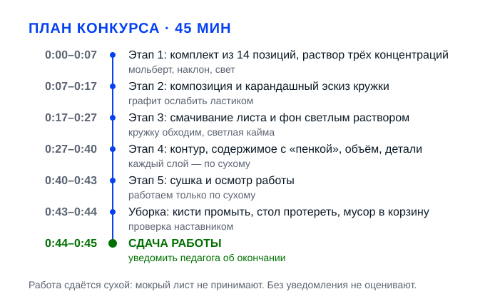
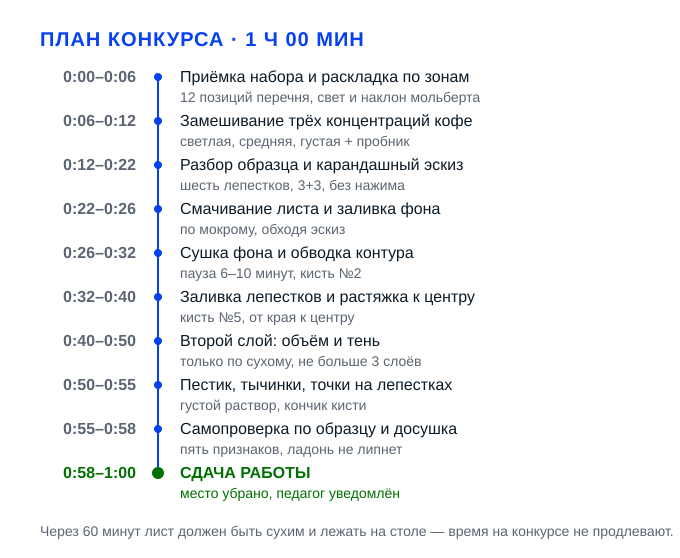
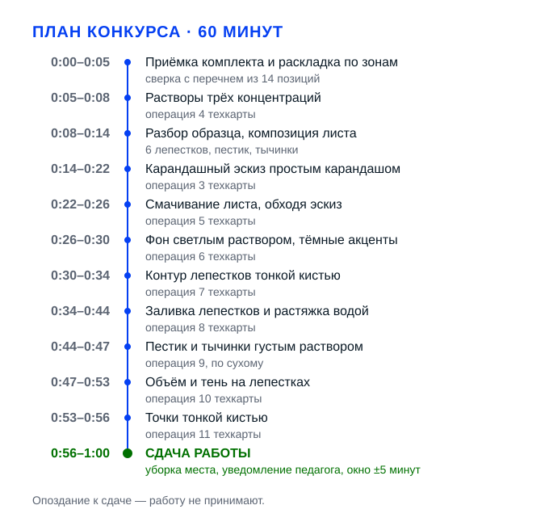

Кофе-Арт (ФВ)
Задания ниже — официальные файлы «Абилимпикс» (источник: abilympics-russia.ru), разложенные по категориям. Решения написаны по тексту задания, регламенту и критериям оценки; в них указано, что именно проверяет эксперт.
Школьник
14–16 лет, базовый уровень заданияВ официальном файле категории не разделены отдельными разделами — приводим задание целиком; различия по категориям смотрите в таблице модулей.
Пошаговое решение
Конкурсное задание категории «Школьники» — нарисовать кофе кружку на листе акварельной бумаги за 45 минут. Материал непривычный: вместо краски растворимый кофе, разведённый водой комнатной температуры, вместо палитры блюдце, вместо белил сама бумага, а «пенку» на содержимом кружки делают чайной ложкой сахара. Инструментов всего два: широкая кисть №5 для заливок и растяжек и тонкая №2 для контура и деталей. Задание идёт строго по технологической карте: организовать рабочее место, выполнить рисунок согласно образцу, привести место в порядок и уведомить педагога об окончании. Балльной разбивки по операциям в задании нет, зато есть жёсткая последовательность из 14 операций и один проверяемый результат: кружка должна читаться, стоять с объёмом, отбрасывать тень и иметь фактурное содержимое. Главная ловушка компетенции в том, что кофе сохнет светлее, чем выглядит на мокрой бумаге, и любой слой можно нанести только после полного высыхания предыдущего — поэтому 45 минут распределяются не поровну между «рисовать» и «ждать».

Задача 1. Организовать рабочее место и приготовить кофейный растворЭтап 1 · 0:00–0:07 из 45 минут
Первые семь минут уходят не на рисование, а на то, чтобы дальше не отвлекаться. Из перечня нужно принять и разложить по зонам все 14 позиций, включая подставку под кисть и корзину для мусора, осмотреть обе кисти на предмет залома ворса и приготовить кофе трёх концентраций: светлый для фона, средний для объёма и густой для контура и теней. Здесь же ставится мольберт и проверяется свет. Всё, что не сделано в эти семь минут, придётся делать в середине рисунка, когда бумага мокрая, а раствор нужной густоты уже нечем разводить.
Действие 1.1. Принять комплект и разложить его по зонам
Шаг 1.1.1
Раскладываем комплект на столе и сверяем с перечнем по порядку: блюдце, растворимый кофе (столовая ложка), сахар (чайная ложка), стакан воды комнатной температуры, кисти №2 и №5, подставка под кисть, кружка для воды, лист акварельной бумаги, салфетки, наглядный готовый рисунок, ластик, мольберт, корзина для мусора. Каждую позицию трогаем рукой и называем про себя, а не просто оглядываем стол: так видно, что стакан воды стоит на другом краю, а сахар вообще не выдан.
Комплект это единственное, что нельзя добыть в процессе: после старта ничего не добавляют, а без сахара не получится «пенка» на содержимом кружки, без ластика эскиз останется жирным и размажется под водой, без подставки мокрая кисть ляжет на лист. Сверка по списку занимает две минуты и снимает весь риск внезапной нехватки в середине работы, когда искать уже некогда.
Все 14 позиций названы и лежат перед вами. Отдельно проверьте, что стакан с водой налит и вода именно комнатная, а не горячая, и что сахар насыпан, а не остался в упаковке за спиной. Если сахар не выдан или его меньше чайной ложки, скажите об этом сразу, до старта.
Самая частая ошибка принять комплект «на глаз»: кофе есть, кисти есть, а сахар и ластик обнаруживаются, когда до сдачи двадцать минут. Вторая ошибка взять горячую воду — она меняет поведение раствора, и он сохнет пятнами.
Эксперт подходит к рабочему месту в первые минуты и смотрит, лежит ли на столе весь перечень: полный комплект это первое, что видно, и первое, что отмечается.
Шаг 1.1.2
Осматриваем обе кисти: у №5 ворс должен быть ровным и упругим, без залома посередине и без торчащих в сторону волосков, у №2 кончик острый, а не разлохмаченный. Проверяем обойму: она не должна шататься и не должна быть раздавлена, иначе ворс начнёт выпадать прямо в раствор. Сухие кисти держим ворсом вверх в подставке, а не на столе, где они впитывают пыль и случайные капли.
Кисть с заломом ворса вместо ровной заливки даёт полосы, а разлохмаченная №2 не даёт тонкого контура: линия получается рваной и широкой, и обвести кружку аккуратно уже нечем. Подставка нужна по той же причине: кисть, положенная на стол, касается ворсом поверхности, деформируется и пачкает стол кофейным раствором, который потом переносится на лист.
Ворс №5 собирается в ровный острый кончик при смачивании, №2 держит тонкое остриё. Если кисть при смачивании расходится метёлкой, поменяйте её у эксперта до старта, а не пытайтесь рисовать тем, что есть.
Ошибка взять кисти, не проверив ворс: залом виден только в мокром состоянии, а сухая кисть выглядит нормально. Вторая ошибка держать кисти в кружке с водой ворсом вниз — ворс заламывается о дно за десять минут.
Эксперт смотрит на инструмент при обходе: наличие обеих кистей и подставки отмечается отдельно от результата рисунка. Отдельно отмечается, лежит ли кисть на подставке, а не на столе и не в кружке с водой.
Шаг 1.1.3
Организуем стол по трём зонам. Слева от листа блюдце с кофе и сахар, справа кружка с водой и салфетки, по центру лист на мольберте; корзина для мусора стоит внизу справа, чтобы использованную салфетку можно было бросить, не вставая и не перенося её через рисунок. Образец ставим сбоку на уровне глаз, а не под лист, иначе вы будете срисовывать, наклоняясь над мокрой бумагой.
Порядок зон экономит движения: за 45 минут кисть ходит между листом, водой и блюдцем несколько десятков раз, и каждый лишний переход через лист это риск капнуть на работу. Правая рука при правосторонней посадке не должна пересекать лист, чтобы взять воду: иначе рукав и кисть проходят над мокрым фоном.
Проверьте простое: не вставая, дотягиваетесь до воды, блюдца, салфеток и корзины, при этом предплечье не проходит над листом. Всё, до чего приходится тянуться, переставьте сейчас. До воды и салфеток рука доходит, не пересекая лист, а корзина стоит рядом с коленом.
Ошибка поставить воду за лист, и тогда каждая смена воды превращается в перелёт мокрой кисти над рисунком. Вторая ошибка держать салфетки в одной куче с блюдцем: салфетка впитывает кофе и потом размазывает его по листу.
Эксперт оценивает организацию места отдельным пунктом последовательности: рабочее место должно быть организовано до начала рисунка, а не в процессе. Полный комплект на столе эксперт проверяет первым делом, ещё до начала рисования.
Действие 1.2. Приготовить кофейный раствор трёх концентраций
Шаг 1.2.1
На сухое блюдце капаем кистью каплю воды комнатной температуры и всыпаем в неё небольшое количество гранул, буквально на кончике ложки. Растираем круговыми движениями ворсом до однородной массы, без комков и без сухих крупинок по краям: именно так это описано в технологической карте, где требуется размешать только небольшое количество гранул, а не весь выданный объём.
Раствор с комками ведёт себя как песок: комок при высыхании даёт тёмную точку с жёстким краем, а при растирании по листу царапает бумагу. Кроме того, от концентрации зависит вся тональная шкала рисунка, и начинать надо с контролируемого объёма, а не с «сколько влезло».
Раствор однородный на просвет, на дне и по краям блюдца нет гранул, кисть проходит по дну без хруста. Если комки остались, добавьте ещё каплю воды и разотрите снова, а не начинайте рисовать. Проверьте также края блюдца: сухих крупинок там быть не должно, иначе они попадут на лист.
Ошибка высыпать в блюдце всю ложку кофе сразу: получается густая каша, из которой невозможно сделать светлый тон для фона, а разбавлять уже нечем. Вторая ошибка размешивать сухой кистью — гранулы не растворяются и царапают лист.
Эксперт смотрит на блюдце при первом обходе: однородность раствора это видимый признак того, что участник понимает материал, а не просто макает кисть.
Шаг 1.2.2
Готовим три концентрации в трёх зонах блюдца или в трёх отдельных ёмкостях, если они есть в комплекте. Светлый тон: одна часть раствора и три-четыре части воды, цвет как слабый чай. Средний: раствор пополам с водой. Густой, почти чёрный: неразбавленный, с добавленными гранулами. Зоны помечаем для себя по расположению — светлый слева, густой справа — и не переставляем блюдце до конца работы.
Фон, объём и контур требуют разной плотности, и это три разных инструмента, а не один. Если рисовать всё одним тоном, кружка сольётся с фоном и потеряет объём: разница между светлым фоном и густой тенью и есть то, что читается как объём. Заново разводить раствор в середине работы некогда, да и пропорцию на глаз уже не повторить.
Капните каждую концентрацию на уголок листа или на отдельный черновик и дайте высохнуть: должно получиться три явно различных тона от светлого до тёмного. Если два тона на высохшем пятне неразличимы, разведите их сильнее.
Ошибка сделать «на всякий случай» только густой раствор, рассчитывая разбавлять его водой на листе: вода смывает уже нанесённый слой и оставляет светлые разводы. Вторая ошибка готовить раствор в кружке для воды, где кисть моется.
Эксперт обращает внимание, есть ли на столе видимая шкала тонов: три ёмкости или три зоны блюдца читаются как осознанная подготовка. Три ёмкости или три размеченные зоны на блюдце — это и есть видимый признак подготовки.
Шаг 1.2.3
Проверяем раствор пробным мазком: набираем светлый тон на №5 и проводим короткую полосу по краю листа, затем рядом средний и густой. Смотрим, как ложится: ровно, без разрывов и без скатывания в капли. Пробный мазок обязательно сушим и смотрим его повторно, потому что мокрый кофе выглядит на треть темнее высохшего. Пробный мазок делайте до того, как смачивать лист: на мокрой бумаге он уже ничего не покажет.
Проба на краю листа стоит тридцать секунд и спасает весь рисунок: именно на ней видно, не слишком ли жидкий раствор для заливки и не слишком ли густой для растяжки. У кофейной живописи узкий тональный диапазон, и разница между «еле видно» и «чёрное пятно» достигается буквально двумя-тремя гранулами.
На высохшей пробе видны три различных тона, края мазков не растекаются за границы и не рвутся. Пробу делайте на той стороне листа, которая потом уйдёт под фон, а не в центре композиции. Сушите пробу не меньше двух минут: кофе сохнет дольше, чем кажется, и разница тонов проявится не сразу.
Ошибка проверять тон по мокрому мазку: он кажется насыщенным, а после высыхания фон получается бледным, и участник добавляет слой на уже подсохшую бумагу, получая грязное пятно вместо ровного тона. Третий вариант ошибки — разбавить готовый раствор водой прямо в блюдце «на глаз», без пробы.
Эксперт может подойти в момент пробы: наличие пробного мазка и высохшей шкалы показывает, что участник контролирует материал. Эксперт может попросить показать шкалу тонов: она должна быть на листе, а не в памяти.
Действие 1.3. Поставить мольберт, лист и свет
Шаг 1.3.1
Ставим лист на мольберт и закрепляем так, чтобы он не сползал: верхний край зафиксирован, нижний лежит на подставке мольберта. Наклон делаем небольшой, примерно 15–20 градусов от вертикали: на таком наклоне потёки идут вниз предсказуемо, а не разбегаются в стороны, и вы одновременно видите лист целиком. Проверьте, что лист не касается стола нижним краем: на столе остаются капли, и они перейдут на бумагу.
Наклон определяет, как поведёт себя вода. На горизонтальном столе вода стоит лужей, сохнет долго и растекается во все стороны, размывая границы. На сильном наклоне вода сбегает вниз полосой и уносит раствор с собой. Пятнадцать-двадцать градусов это рабочий компромисс, при котором заливка остаётся там, куда её положили.
Лист не смещается при лёгком нажатии, поверхность ровная, без волны. Проверьте ладонью у края: если бумага «дышит» под рукой, она не закреплена и при заливке пойдёт волной. Наклон проверьте по капле воды: она должна медленно идти вниз, а не стоять на месте.
Ошибка положить лист горизонтально на стол — вода стоит и растворяет эскиз. Вторая ошибка пережать лист так, что по краям остаются вмятины: они проявятся после высыхания как белые полосы. Третья ошибка — поставить мольберт далеко: тогда рука не достаёт до верхнего края листа и вы тянетесь корпусом.
Эксперт смотрит на положение листа: работа на мольберте предусмотрена перечнем оборудования, и это часть организации места. Положение листа и его закрепление эксперт смотрит вместе с организацией рабочего места.
Шаг 1.3.2
Проверяем свет. Лист должен быть освещён ровно, без резкой тени от собственной руки в рабочей зоне: при обходе рабочего места для участников с нарушением зрения предусмотрено индивидуальное равномерное освещение не менее 300 люкс, и на общем столе стоит ориентироваться на ту же норму. Если лампа стоит справа и вы правша, тень от кисти падает точно на контур — переставьте лампу или поверните лист.
При недостатке света глаз перестаёт различать разницу между средним и густым тоном, а именно на этой разнице держится объём кружки. Кроме того, при боковом свете виден блик на мокрой бумаге, и его легко спутать с местом, где раствор ещё не высох. К тому же при слабом свете легко не заметить, что фон уже подсох и заливка пошла полосами.
Свет ровный по всей площади листа, тени от руки нет. Посмотрите на лист, прищурившись: при хорошем освещении вы должны видеть три тональных пятна на пробном мазке. Проверьте, что тень от вашей руки не падает в зону, где будет контур и содержимое кружки.
Ошибка работать при свете из окна за спиной: на листе появляется собственная тень, и мокрый кофе на фотографии и на глаз читается по-разному. Вторая ошибка ставить лампу вплотную к листу — перегрев сушит заливку неравномерно.
Эксперт проверяет освещённость и отсутствие бликов на рабочей поверхности при обходе площадки. Освещённость проверяется на площадке до старта: если света мало, об этом говорят сразу.
Шаг 1.3.3
Кладём образец рядом с листом на уровне глаз и разбираем его на три вопроса: какой тон у фона, какой у боков кружки, где самая тёмная точка работы. Дальше садимся так, чтобы локоть рабочей руки был на весу и не опирался на стол, а спина оставалась прямой: 45 минут с наклонённой головой дают к концу работы дрожь в кисти, а тонкий контур №2 такой дрожи не прощает.
Образец нужен не для копирования линии в линию, а для сверки тонов: именно соотношение светлого фона, среднего бока и тёмного края делает кружку объёмной. Посадка влияет на точность: когда рука опирается на стол, кисть ведёт по дуге, и эллипсы получаются кривыми.
Вы можете назвать вслух три тона образца и показать пальцем, где на образце самое тёмное место. Рука двигается свободно от плеча, кисть не цепляет лист при смене положения. Кисть свободно доходит до верхнего и нижнего края листа без наклона корпуса и без задержки дыхания.
Ошибка положить образец под лист и срисовывать, наклоняясь: заливка сохнет на глазах, а вы теряете контроль над наклоном. Вторая ошибка сесть боком, когда рабочая рука зажата и кисть ходит короткими рывками.
Эксперт отмечает, использует ли участник образец: по заданию рисунок выполняется согласно образцу, и сверка с ним это часть работы, а не подсказка. Сверка с образцом в начале работы — часть задания, и она отмечается отдельно от результата.
Задача 2. Построить композицию и выполнить карандашный эскизЭтап 2 · 0:07–0:17 из 45 минут
Эскиз карандашом кажется формальностью, пока не начинаешь рисовать кофе: любая линия, оставленная жирно, под мокрой кистью превращается в грязный развод, а кружка, построенная без эллипсов, заваливается набок уже на первом слое. Десять минут уходят на то, чтобы определить размер кружки на листе, построить её как цилиндр с двумя эллипсами и ручкой, а затем ослабить графит ластиком до еле заметной линии. Хороший эскиз на этом этапе выглядит почти пустым листом — и это правильный результат.
Действие 2.1. Определить композицию листа
Шаг 2.1.1
Ставим четыре лёгкие точки: верх кружки, низ кружки, левый и правый её край. Кружка занимает примерно две трети высоты листа и стоит чуть выше середины, чтобы под ней осталось место для падающей тени, а сверху — воздух. Поля по краям оставляем не меньше двух-трёх сантиметров: рисунок, упёршийся в кромку, читается как обрезанный. Точки ставьте карандашом еле касаясь: их придётся стирать, если композиция сдвинется.
Композиция задаёт всё остальное: если кружка стоит по центру геометрически, работа выглядит статичной, а если у нижней кромки — падающей тени просто негде будет лечь, и кружка повиснет в воздухе. Смещение вверх и небольшие поля дают устойчивость и место для тени, которая в кофейной живописи и создаёт вес предмета.
Точки намечены, между ними укладывается вся кружка с ручкой, поля со всех сторон не меньше двух сантиметров. Отойдите на шаг и посмотрите на лист: кружка должна читаться сразу, без мысленного дорисовывания.
Ошибка рисовать кружку от верхнего края листа, «чтобы крупнее»: ручка и тень уходят за кромку. Вторая ошибка ставить кружку по центру и забыть про тень — потом её некуда девать, и предмет выглядит вырезанным.
Эксперт смотрит на композицию первым делом, когда работа уже залита: правильное расположение видно сразу, а исправлять его на мокром листе невозможно.
Шаг 2.1.2
Проводим вертикальную ось через центр кружки и намечаем ширину: у обычной кружки ширина примерно равна высоте, поэтому откладываем от оси влево и вправо равные отрезки. Сразу намечаем, что верхний эллипс шире нижнего: мы смотрим на кружку чуть сверху, и чем выше точка зрения, тем шире раскрыт верхний овал. Ось рисуйте тонкой линией от верха листа до низа: она нужна только вам и потом уйдёт под ластик.
Пропорция «ширина равна высоте» это то, что отличает кружку от стакана и от кастрюли; при ошибке в пропорции кружка становится либо вытянутой, либо приплюснутой, и никакая заливка это не исправит. Разная ширина эллипсов даёт перспективу: без неё предмет выглядит нарисованным по линейке и плоским.
Ширина и высота соотносятся как один к одному, ось проходит через середину, верхний овал заметно шире нижнего. Проверьте, перевернув лист вверх ногами: перевёрнутое изображение показывает ошибки пропорций лучше всего.
Ошибка сделать оба эллипса одинаковыми: кружка превращается в цилиндр, нарисованный в ортогональной проекции. Вторая ошибка сместить ось — кружка заваливается набок, и это видно даже неспециалисту. Третья ошибка — откладывать ширину от края листа, а не от оси: одна половина выходит шире другой.
Эксперт оценивает пропорции по силуэту: правильная кружка узнаётся по контуру до того, как вглядишься в тон. Пропорции эксперт проверяет по силуэту: кружка должна узнаваться до разглядывания тона.
Шаг 2.1.3
Отходим от мольберта на два-три шага и смотрим на разметку целиком. Проверяем три вещи: не смещена ли кружка в сторону, хватает ли места под тень, не слишком ли крупно для листа. Если что-то не так, стираем точки и переносим их сейчас, пока на листе нет ни одной линии кофе. Точки переносите по одной, каждый раз проверяя расстояния от краёв листа: так разметка остаётся симметричной. Ластик держите под углом и не трите бумагу до блеска, иначе ворс поднимется.
Разметка это единственный этап, который можно исправить ластиком без потерь. После первой заливки любое перемещение означает либо перерисовку на мокром, либо грязное пятно на месте старой границы. Тридцать секунд взгляда издалека дешевле, чем испорченный фон.
Издали кружка стоит устойчиво, вокруг неё воздух, снизу есть место для тени примерно в четверть высоты кружки. Если приходится прищуриваться, чтобы понять, где центр, композиция не выстроена. Проверьте расстояния от кружки до левого и правого края: они должны быть близкими.
Ошибка сразу переходить к деталям, не посмотрев на лист целиком: мелкие уточнения не спасают сбитую композицию. Вторая ошибка стереть и нарисовать заново пять раз — на акварельной бумаге остаются ворсинки от ластика.
Эксперт видит, как участник отходит и смотрит на работу: эта привычка отличает того, кто контролирует изображение, от того, кто просто ведёт кистью. Привычка отходить и смотреть на лист издалека отмечается отдельно от качества рисунка.
Действие 2.2. Построить кружку как объёмную форму
Шаг 2.2.1
Рисуем верхний эллипс — овал, раскрытый примерно на треть своей высоты, затем нижний, более узкий и более плоский. Соединяем их двумя вертикальными линиями по краям: получается цилиндр, слегка суженный книзу. Линии ведём одной уверенной дугой, а не отдельными штрихами, иначе на месте стыков появятся утолщения, которые потом проступят через заливку.
Кружка в основе это цилиндр, и построение цилиндром сразу даёт правильные эллипсы вместо «кругов, нарисованных от руки». Сужение книзу нужно потому, что у большинства кружек дно меньше венчика, и без него предмет выглядит как отрезок трубы. К тому же цилиндр сразу задаёт ось симметрии, по которой потом кладётся тень.
Верхний эллипс замкнут, нижний виден частично, боковые линии плавно касаются обоих эллипсов без изломов. Проведите по контуру взглядом: линия должна идти без рывков и углов. Проверьте, что верхний эллипс не срезан по бокам: у него должны быть плавные скругления.
Ошибка рисовать верхний эллипс слишком плоским: кружка выглядит так, будто на неё смотрят сбоку, и содержимое потом некуда положить. Вторая ошибка — провести боковые линии с изломом на середине высоты.
Эксперт смотрит на построение по сохранившимся светлым линиям: аккуратный цилиндр под заливкой держит форму и после высыхания. Построение видно по светло-серым линиям, которые остаются под заливкой и читаются на просвет.
Шаг 2.2.2
Пристраиваем ручку: намечаем две точки крепления на правом боку кружки, верхнюю чуть ниже венчика, нижнюю на две трети высоты, и соединяем их дугой наружу. Толщина ручки примерно в четверть ширины корпуса, внутренний просвет обязательно оставляем: это не пририсованная «скоба», а объёмная петля, у которой есть внешний и внутренний контур. Начните с внутреннего контура: его рисовать труднее, а внешний потом легче подогнать под него.
Ручка это самый узнаваемый признак кружки и самое частое место ошибок: слишком тонкая ручка выглядит как проволока, слишком толстая превращает предмет в чайник. Внутренний просвет нужен, чтобы читалась толщина материала: без него рука смотрится наклейкой на боку.
Обе точки крепления лежат на контуре корпуса, дуга ровная, просвет внутри ручки не закрашен и не перекрывает корпус. Посмотрите на ручку отдельно, закрыв корпус ладонью: она должна читаться как самостоятельная петля.
Ошибка нарисовать ручку по центру бока — она должна быть в верхней половине, иначе кружка выглядит как ведро. Вторая ошибка провести дугу внутрь корпуса, и тогда при заливке ручка сольётся с телом кружки.
Эксперт проверяет силуэт: ручка, читающаяся отдельно от корпуса, — признак того, что форма понята, а не срисована по памяти. Ручка, читающаяся отдельной петлёй, — признак понятой формы, а не срисованной по памяти.
Шаг 2.2.3
Проверяем линии на просвет и на нажим: карандаш должен оставлять тонкий серый след, а не жирную борозду. Держим карандаш не у самого грифеля, а выше, ведём от плеча, а не пальцами, и не обводим одну линию по три раза. Бумагу под ладонью не тянем: подложите под руку чистый лист или салфетку, чтобы не засаливать поверхность. Карандаш держите под углом к бумаге, а не вертикально: вертикальный грифель продавливает бумагу.
Графит под водой ведёт себя как грязь: жирная линия даёт серо-коричневый развод, который невозможно убрать, потому что он уже внутри бумаги. Кроме того, продавленная карандашом бумага хуже впитывает раствор, и на месте линии остаётся светлая полоса, видимая на высохшей работе.
Нажмите на лист под углом к свету: борозды не видны, линия выглядит как тонкая паутинка. Проведите пальцем — поверхность не должна быть засаленной и скользкой. Проведите по линии ладонью: она не должна ощущаться как канавка в бумаге.
Ошибка обвести контур по нескольку раз «чтобы виднее»: линия становится жирной и при первой заливке расплывается. Вторая ошибка работать с нажимом на акварельной бумаге — ворс приподнимается и скатывается под кистью.
Эксперт смотрит на лист до первой заливки: чистый лист с тонкой линией говорит о технике больше, чем жирный обведённый контур. Отдельно отмечается, есть ли на листе следы подложенной под руку бумаги.
Действие 2.3. Уточнить эскиз и ослабить графит
Шаг 2.3.1
Уточняем то, что будет видно на готовой работе: линию венчика, границу содержимого внутри верхнего эллипса, линию дна и место, где кружка стоит на плоскости. Намечаем контур падающей тени: она уходит от кружки в сторону, противоположную свету, и по ширине примерно равна половине ширины кружки. Линию дна ведите не по нижнему эллипсу целиком, а только по видимой его части: у кружки, стоящей на столе, видна передняя дуга, и именно она держит предмет.
Содержимое кружки рисуется не «вообще сверху», а внутри верхнего эллипса, с отступом от края: этот отступ и есть толщина стенки, она даёт предмету материальность. Падающая тень нужна в эскизе заранее, потому что её пишут по сухому фону в конце, и без намеченной границы она получится случайной формы.
Внутри верхнего эллипса виден второй, меньший овал — граница содержимого, между ними остаётся полоса толщиной около трёх миллиметров. Граница тени намечена, её форма повторяет низ кружки и расширяется к краю.
Ошибка залить содержимое по самому краю венчика: пропадает толщина стенки, и кружка выглядит нарисованной на плоскости. Вторая ошибка наметить тень в сторону света — тогда предмет и тень читаются как два разных объекта.
Эксперт видит тень в готовой работе и соотносит её направление с остальными тенями: неправильное направление читается как ошибка освещения. Направление падающей тени эксперт сверяет с положением света в аудитории.
Шаг 2.3.2
Берём ластик и ослабляем графит по всей работе: не стираем линии полностью, а прокатываем ластиком так, чтобы они стали еле различимыми. Работаем мягко, короткими движениями, по одному проходу на линию, и стряхиваем крошки с листа, а не смахиваем их ладонью к центру. Если крошки прилипли, снимайте их мягкой сухой кистью. Ластик держите под углом к бумаге и работайте только его чистым светлым краем.
Почти невидимый эскиз нужен потому, что кофе прозрачен: любой графит просвечивает через светлый тон и делает его грязным. При этом линии должны остаться различимыми для вас — по ним ведётся контур тонкой кистью, и если стереть всё, рисовать придётся по памяти.
Линии видны вполсилы, бумага не лоснится, крошек на листе нет. Наклоните лист к свету: продавленных борозд быть не должно, а светлый след карандаша должен угадываться. Проверьте, что ластик не оставил катышков у края листа и в углах композиции.
Ошибка стереть эскиз полностью и рисовать по пустому листу: пропорции теряются, и кружка «плывёт» уже после первой заливки. Вторая ошибка тереть ластиком с нажимом — ворс акварельной бумаги скатывается в катышки.
Эксперт может посмотреть лист перед заливкой: чистая поверхность без жирного графита это условие прозрачного цвета. Эксперт может посмотреть лист до заливки: жирный графит сразу виден по блеску бумаги.
Шаг 2.3.3
Последняя сверка с образцом: сравниваем силуэт, наклон ручки, высоту кружки относительно листа. Смотрим на образец и на свой лист попеременно, переводя взгляд, а не разглядывая каждый по отдельности: так видно разницу в пропорциях, которую глаз не замечает при долгом смотрении. Держите образец на расстоянии вытянутой руки, а не вплотную к листу: вблизи глаз цепляется за детали и перестаёт видеть отношения. Если силуэт расходится, правьте только те линии, которые действительно уводят форму.
Это единственный момент, когда ошибку формы ещё можно исправить карандашом. Дальше все решения фиксируются раствором: контур тонкой кистью проводится именно по эскизу, и он переносит на работу всё, что в эскизе было неверно. Кроме того, карандашный слой под заливкой просвечивает, и любая ошибка формы станет видна как тёмный контур.
Силуэт совпадает с образцом по основным отношениям: высота к ширине, положение ручки, размер верхнего овала. Если расхождение больше двух-трёх миллиметров, поправьте сейчас. Проверьте лист, поставив его рядом с образцом на одинаковом расстоянии от глаз.
Ошибка сверять эскиз с образцом по деталям, не посмотрев на общий силуэт: точная ручка на кривом корпусе не спасает работу. Вторая ошибка — подогнать эскиз под образец, потеряв свою композицию и время.
Эксперт оценивает соответствие образцу по силуэту и тонам, а не по точности каждой линии. Сверка с образцом по силуэту и тонам — то, что эксперт проверяет в готовой работе.
Задача 3. Смочить лист и залить фон светлым растворомЭтап 3 · 0:17–0:27 из 45 минут
Фон решает, будет ли кружка читаться. Его пишут по мокрой бумаге светлым раствором, обходя эскиз, и именно здесь кофе ведёт себя непредсказуемо: раствор растекается по влаге сам, сохнет светлее, чем кажется, а попытка поправить мокрое место кистью размывает уже нанесённый слой. Десять минут уходят на смачивание, одну-две заливки и короткую игру оттенков — и всё это время лист трогают только по мокрому, не возвращаясь на подсохшие края.
Действие 3.1. Смочить лист в произвольных местах
Шаг 3.1.1
Набираем чистую воду на широкую кисть №5 и смачиваем лист в произвольных местах, обходя эскиз кружки: водим кистью по бумаге плавно, не нажимая, и следим, чтобы вода ложилась пятнами, а не ровной полосой по всей площади. Эскиз обходим по контуру с запасом в сантиметр-полтора: вода не должна затекать внутрь кружки, иначе карандашные линии поплывут. Кисть ведите плашмя, не отрывая ворс от бумаги: тогда влага ложится ровно.
Задание прямо предписывает смачивать лист в произвольных местах, обходя эскиз, и это не случайность: пятнистая влага даёт живой, неровный фон, который в кофейной живописи и считается красивым. Внутри кружки бумага остаётся сухой, чтобы границы предмета не размылись до того, как вы начнёте их обводить.
Бумага блестит, но вода не стоит лужей: при наклоне листа капли не сбегают вниз ручьём. Внутри контура кружки бумага матовая и сухая на ощупь тыльной стороной ладони. Проверьте, что вода не затекла под карандашные линии эскиза и внутри контура кружки сухо.
Ошибка намочить лист целиком, включая кружку: контур сразу растекается, и обводить уже нечего. Вторая ошибка лить воду до лужи — раствор потом поплывёт вместе с водой и уйдёт к нижней кромке. Третья ошибка — намочить лист и уйти за водой: за две минуты бумага подсохнет неровно.
Эксперт смотрит на характер влаги: ровная лужа или живое пятно — разница видна сразу и говорит о понимании техники. Наблюдает он и за тем, смачивает ли участник лист заново перед каждой новой заливкой.
Шаг 3.1.2
Проверяем влагу тыльной стороной ладони, а не пальцем: ладонь чувствует ровную прохладу, не оставляя вмятин и отпечатков. Если где-то бумага уже подсохла и стала тёплой, смачиваем этот участок повторно, прежде чем набирать раствор: заливка по сухому и по мокрому дают разный край, и стык будет виден как резкая граница. На самых сухих участках достаточно одного лёгкого прохода кистью: лишняя вода там только навредит.
Кофе, положенный на мокрую бумагу, расплывается мягко; положенный на сухую — остаётся с жёстким краем. Если смачивание неравномерное, фон получится пятнами разной резкости, и работа будет выглядеть небрежной, хотя технически всё сделано правильно. Кроме того, сухая бумага забирает раствор мгновенно, и граница получается жёсткой и тёмной.
Поверхность прохладная и ровная по всей площади, которую вы собираетесь заливать, край влаги не подсох. Проверяйте перед каждым новым мазком: на 45 минутах бумага сохнет быстрее, чем кажется. Смачивайте заново каждый участок, к которому возвращаетесь после паузы на другие дела.
Ошибка проверять влагу пальцем: на бумаге остаётся жирный след, и раствор в этом месте ляжет неровно. Вторая ошибка смачивать весь лист за один раз и потом заливать по частям — к последней части бумага уже подсохла.
Эксперт может подойти в момент смачивания: техника работы с влагой — самая показательная часть компетенции. Эксперт видит, чувствует ли участник влагу на ощупь, а не по часам и не по внешнему виду.
Шаг 3.1.3
Если воды всё-таки много, снимаем лишнее сухой кистью или салфеткой: прикладываем салфетку плашмя и сразу убираем, не проводим ею по бумаге. Движения только промакивающие, от центра пятна к краю, чтобы не размазать влагу в тонкую плёнку по всей площади. Держите салфетку двумя пальцами и меняйте её, как только она намокла: мокрая салфетка уже не впитывает, а развозит воду по листу. Работайте от центра к краям, чтобы не согнать воду к контуру кружки.
Лишняя вода разбавляет раствор до состояния, когда он почти не виден, а главное — уносит уже нанесённый кофе к краям листа, оставляя там тёмную кайму. Промакивание убирает воду, не нарушая структуру поверхности, а любое растирание поднимает ворс бумаги.
На бумаге нет блестящих луж, поверхность ровно влажная, салфетка после промакивания окрашена слабо. Если салфетка темнеет от кофе, вы снимаете уже краску — прекратите и дайте подсохнуть. Проверьте углы листа: там вода собирается чаще всего и сохнет дольше всего.
Ошибка тереть салфеткой по мокрому листу: остаются волокна и разводы, которые не убираются. Вторая ошибка снимать воду ладонью — на бумаге остаётся жир и потом раствор скатывается в капли. Третья ошибка — промакивать лист бумажным полотенцем с рельефом: на поверхности остаётся тиснение.
Эксперт отмечает аккуратность: работа с салфеткой по мокрому — навык, который видно по отсутствию разводов на фоне. Отсутствие разводов на фоне — прямой результат аккуратной работы с влагой.
Действие 3.2. Залить фон светлым раствором
Шаг 3.2.1
Набираем светлый раствор на кисть №5, стряхиваем лишнее о край блюдца и покрываем влажный лист широкими мазками от верхнего края вниз. Ведём в одном направлении, не возвращаясь на уже пройденное место, и следим, чтобы мазки перекрывали друг друга краями: тогда фон ляжет ровно, без белых полос между полосами. Кисть держите под небольшим наклоном к листу и не отрывайте ворс до конца мазка: отрыв оставляет светлую точку.
Светлый раствор это основа: он задаёт общий тон работы и оставляет возможность усиливать тёмное позже. Возврат кисти на подсохший участок поднимает уже начавший схватываться слой и оставляет тёмную полосу — самый частый дефект заливки, который невозможно исправить.
Фон покрыт ровно, без полос и потёков, тон одинаковый по плотности, кружка осталась нетронутой. Посмотрите на лист под углом к свету: там, где раствор лёг неровно, видны полосы. Проверьте нижнюю часть листа: туда вода сносит раствор и там чаще всего копится тон.
Ошибка закрашивать лист «до конца», залезая на контур кружки: границы предмета теряются, и обводить приходится по памяти. Вторая ошибка — водить кистью туда-сюда, как при покраске забора. Третья ошибка — набрать на кисть слишком много раствора: он стекает вниз каплями и оставляет потёки.
Эксперт оценивает фон по ровности тона: полосы и кайма по краю — видимый признак неуверенной заливки. Ровность тона на фоне эксперт видит сразу, без всяких измерений и сравнений.
Шаг 3.2.2
Обходим кружку с запасом: кисть идёт по фону вокруг контура, но внутрь не заходит, и у самого края кружки оставляем узкую светлую полосу чистой бумаги шириной миллиметра три-четыре. Работаем кистью на весу, не опираясь на лист, чтобы не выдавить воду из бумаги в этом месте. Если кайма получается неровной, не поправляйте её мокрой кистью: дайте высохнуть и подчистите границу сухой кистью по сухому. Работа по сырому краю размажет границу окончательно.
Светлая полоса по краю кружки это будущий блик и одновременно граница, по которой потом пойдёт контур тонкой кистью. Белая бумага здесь работает как белила: в кофейной живописи их нет, свет получают только непрокрашенной бумагой, и вернуть его после заливки невозможно.
Вокруг кружки видна светлая кайма, контур эскиза не залит, граница между фоном и кружкой читается. Проверьте, что кайма ровная: рваная граница читается как случайное пятно. Проверьте кайму по всему контуру, а не только с одной стороны, где удобнее смотреть.
Ошибка залить фон вплотную к контуру: светлого края нет, кружка сливается с фоном и объём пропадает. Вторая ошибка оставить кайму слишком широкой — вокруг предмета появляется белый ореол, работа выглядит незаконченной.
Эксперт смотрит, сохранён ли свет на краю кружки: это прямой показатель понимания акварельной техники. Кайму он измеряет глазом: она должна быть одинаковой по всей длине контура.
Шаг 3.2.3
Даём фону высохнуть самостоятельно, не помогая нагревом и не разгоняя поток воздуха: пока фон сохнет, раскладываем салфетки, проверяем чистоту воды в кружке и промываем кисть №2, которой предстоит обводить контур. Пальцем поверхность не проверяем — касание оставляет пятно. Пока фон сохнет, поставьте лист так, чтобы на него не падал прямой свет лампы: неравномерная сушка даёт волну на бумаге. Салфетки разложите стопкой справа, чтобы потом не искать их по столу.
Послойность это главное правило задания: каждый следующий слой наносится только после полного высыхания предыдущего. Принудительная сушка даёт жёсткие края и растрескивание, а мокрый слой под следующим слоем просто смоется кистью, и работа пойдёт пятнами.
Фон не липнет к тыльной стороне ладони, поднесённой на сантиметр, тон перестал темнеть. На высохшем фоне видны границы мазков, но нет луж и блеска. Проверьте углы листа: у краёв слой всегда сохнет дольше, чем в центре.
Ошибка начинать контур по сырому фону: линия расплывается в бесформенное пятно, и кружка теряет форму. Вторая ошибка сушить лист над лампой — поверхность схватывается коркой, а внутри остаётся влага. Третья ошибка — проверять готовность, проведя по фону сухой кистью: на поверхности остаётся светлая полоса.
Эксперт видит послойность по чистоте переходов: у того, кто ждёт высыхания, границы слоёв мягкие, а у того, кто торопится, — грязные. Чистота переходов между слоями — главное, что видно на высохшей работе.
Действие 3.3. Добавить оттенки и пятна фона
Шаг 3.3.1
Когда фон подсох, но ещё не высох полностью, набираем средний раствор и усиливаем отдельные участки: углы листа, зону под будущей тенью кружки и один-два края, где фон должен уходить в глубину. Кладём короткими мазками по касательной, не выводя их на светлую кайму вокруг кружки. Набирайте на кисть немного раствора: на подсохшем фоне лишняя влага поднимает слой и оставляет светлое пятно с тёмной каймой. Каждый мазок делайте одним движением и не возвращайтесь к нему.
Задание разрешает поиграть с цветом и взять в некоторых местах оттенок темнее — именно это делает фон живым и одновременно направляет взгляд к кружке. Тёмные края работают как рамка: глаз идёт от тёмного края к светлому центру, и предмет оказывается в фокусе.
Тёмные участки распределены неравномерно и не образуют симметричных пятен, светлая кайма вокруг кружки осталась нетронутой. Издалека фон должен выглядеть как мягкое облако, а не как закрашенный прямоугольник.
Ошибка залить тёмным весь фон равномерно: кружка перестаёт выделяться, и работа выглядит как коричневый лист с еле заметным контуром. Вторая ошибка усилить тон прямо у края кружки — кайма пропадает. Третья ошибка — усиливать тон у самого края листа, где его и так больше, чем в середине.
Эксперт оценивает, есть ли в фоне глубина: разница между светлыми и тёмными участками читается как объём пространства. Смотрит он и на то, не потерялась ли светлая кайма вокруг кружки после усиления тона.
Шаг 3.3.2
Тонкой кистью №2 ставим капли густого раствора в произвольных местах фона: держим кисть вертикально, слегка касаемся бумаги кончиком и сразу убираем. Капля растекается сама, образуя мягкое тёмное пятно с чётким краем — так в этой технике дорабатывают фон. Ставим три-пять капель, не больше. Если капля получилась слишком крупной, не разгоняйте её кистью: дайте высохнуть и ослабьте сухой кистью по сухому. Держите руку на весу, чтобы не опереться на мокрый фон.
Капли дают фактуру, которой не добиться мазком: они читаются как брызги и крупинки, и работа перестаёт быть плоской заливкой. Технологическая карта предусматривает этот приём отдельной операцией, а ограничение в три-пять капель нужно потому, что каждое пятно привлекает взгляд и в большом количестве разрушает композицию.
Капли круглые, с мягким светлым ореолом вокруг, не соединены в цепочки и не попали на кружку. Пятна не перекрывают светлую кайму у контура. Проверьте, что капли не попали на светлую кайму вокруг кружки и не слиплись в цепочку.
Ошибка поставить капли слишком близко друг к другу: они сливаются в одно тёмное безформенное пятно. Вторая ошибка капнуть на мокрый фон — капля расходится кляксой и уходит за пределы задуманного места.
Эксперт отмечает аккуратность капель: ровные пятна с ореолом и без потёков — признак контролируемой руки. Считает он и количество капель: их должно быть немного, иначе фон выглядит перегруженным.
Шаг 3.3.3
Отходим и смотрим на фон вместе с кружкой: если фон «съел» предмет и контур читается плохо, осветляем зону вокруг кружки чистой влажной кистью, снимая лишний тон, но только по полностью высохшему слою. Если наоборот — фон слишком бледный, добавляем ещё один светлый слой после высыхания, а не в мокрое. Снимая тон, промывайте кисть после каждого движения и меняйте воду: грязная вода возвращает кофе на лист.
Задача фона служить предмету, а не спорить с ним. Ошибку «перетемнил» исправляют снятием тона, а не закрашиванием: в акварели свет добавляют только снятием краски с сухой поверхности чистой влажной кистью. Недостаток тона исправляют вторым слоем, что и предусмотрено послойной техникой.
Кружка читается на фоне сразу, без напряжения, светлая кайма цела, края листа тёмнее центра. Если приходится всматриваться, чтобы найти контур, фон перетемнён. Проверьте, что края листа темнее центра, а не наоборот, и кайма у кружки цела.
Ошибка пытаться осветлить мокрый слой: кисть с водой размазывает кофе по всей площади и делает серую грязь. Вторая ошибка — наращивать тёмное по мокрому, не дожидаясь высыхания. Третья ошибка — осветлять фон до того, как он высох, влажной кистью по мокрому слою.
Эксперт сравнивает фон с образцом по тону: соотношение светлого предмета и более тёмного окружения — часть оценки работы. Соотношение тона фона и предмета эксперт сравнивает с образцом, а не оценивает на глаз.
Задача 4. Написать кружку: контур, содержимое, объём и деталиЭтап 4 · 0:27–0:40 из 45 минут
Тринадцать минут на самую содержательную часть работы. Сначала тонкая кисть ведёт контур густым раствором, затем широкая закрашивает содержимое и получает «пенку» присыпкой сахара, после этого концентрированный раствор ложится на бока и растягивается водой к центру, а в финале добавляются ручка, край и падающая тень. Каждый следующий слой идёт только по высохшему предыдущему, поэтому порядок операций здесь важнее скорости.
Действие 4.1. Обвести контур тонкой кистью
Шаг 4.1.1
Набираем густой раствор на кисть №2, ставим кончик на линию эскиза и ведём контур кружки сверху вниз по правой стороне, затем по левой, потом замыкаем верхний эллипс. Кисть держим почти вертикально, нажим ровный, скорость одинаковая: у края не останавливаемся, иначе в точке остановки соберётся капля и получится тёмное утолщение. Если рука дрогнула, не ведите линию заново поверх: дайте высохнуть и поправьте место точечно.
Контур густым раствором это то, что делает кружку предметом, а не пятном: задание предусматривает прорисовку основных элементов более густым раствором. Ровный нажим нужен потому, что кофе накапливается в местах замедления кисти, и линия получается с бусами — работа сразу выглядит ученической.
Линия тонкая, ровная по толщине, без капель и разрывов, повторяет эскиз. Проведите по контуру взглядом: не должно быть мест, где линия утолщается или обрывается. Проверьте контур на просвет: на линии не должно быть тёмных точек и утолщений.
Ошибка обводить контур жирной линией «чтобы было видно»: толстый контур превращает кружку в раскраску. Вторая ошибка останавливать кисть на углах — в точках остановки собираются тёмные капли. Третья ошибка — вести контур слишком медленно: кофе успевает впитаться, и линия темнеет на глазах.
Эксперт смотрит на характер линии: ровный живой контур читается как уверенная рука, а прерывистый с каплями — как неуверенность. Ровная живая линия читается как уверенная рука, прерывистая с каплями — как спешка.
Шаг 4.1.2
Ведём контур не сплошной замкнутой линией, а с небольшими перерывами: у кружки контур местами прерывается, часть границы остаётся обозначенной только тоном. Перерывы делаем в двух-трёх местах, там, где свет падает на край, и именно в этих местах контур остаётся светлым. Разрывы делайте по одному-два сантиметра и не подводите к ним второй мазок «для соединения»: именно разрыв и создаёт ощущение света. На теневой стороне контур, наоборот, ведите плотнее.
Сплошной обвод по всему силуэту делает изображение плоским и «наклеечным»: в живописи граница предмета читается не линией, а разницей тонов. Перерыв на свету показывает, что участник понимает, где свет, — а это уже пространственное мышление, ради которого компетенция и существует.
В двух-трёх местах контур прерван, при этом граница кружки всё равно читается за счёт разницы тона с фоном. Прищурьтесь: силуэт должен сохраняться и без сплошной линии. Проверьте, что в местах разрыва граница держится за счёт тона, а не за счёт линии.
Ошибка обвести весь силуэт по кругу: кружка выглядит нарисованной фломастером поверх заливки. Вторая ошибка сделать слишком много перерывов — форма рассыпается. Третья ошибка — прерывать контур в тени: там граница обязана быть плотной и непрерывной.
Эксперт обращает внимание на то, как решена граница предмета: по разнице тонов или по обводке. Способ решения границы предмета — линией или тоном — эксперт видит сразу, без пояснений.
Шаг 4.1.3
Проверяем, что контур не поплыл: смотрим на линию в косом свете, нет ли сбежавших вниз капель, не расплылась ли она там, где рядом осталась влага. Если капля всё же побежала, аккуратно снимаем её уголком сухой салфетки, прикладывая, а не проводя, и не трогаем остальной контур. Прикладывайте салфетку уголком и снимайте сразу, не держа её на бумаге: она мгновенно впитает раствор и оставит светлое пятно. Проверяйте нижнюю часть кружки чаще всего: туда стекают капли.
Сбежавшая капля густого раствора оставляет тёмный след, который не убирается: он уходит в бумагу и остаётся видимым на готовой работе. Снимать её нужно сразу, пока раствор на поверхности, — через минуту будет поздно, а на соревновании перерисовать лист не дадут.
Линия контура ровная, капель ниже линии нет, бумага вокруг сухая. Проверьте нижнюю часть кружки — потёки чаще всего появляются там. Проверьте, что бумага вокруг контура сухая на вид и прохладная ровно на всей площади.
Ошибка оставить каплю «сама высохнет»: она высыхает с тёмной точкой и тянет за собой полосу. Вторая ошибка тереть мокрое место салфеткой — размазывается в серое пятно вокруг контура. Третья ошибка — снимать каплю пальцем: остаётся жирный след, и раствор ляжет вокруг неровно.
Эксперт замечает потёки сразу: они читаются как неаккуратность и снимают впечатление от всей работы. Смотрит он и на нижнюю часть кружки: там чаще всего остаются следы сбежавших капель.
Действие 4.2. Написать содержимое кружки и сделать «пенку»
Шаг 4.2.1
Широкой кистью №5 набираем густой раствор и закрашиваем внутренний овал содержимого, не заходя на полосу толщины стенки: ведём от дальнего края к ближнему, заполняя эллипс ровным тоном. У самого края оставляем светлую полоску бумаги шириной около двух миллиметров — это край содержимого, он должен читаться светлее самого напитка. Кисть ведите по эллипсу по кругу, а не поперёк: так тон ложится равномернее и без полос.
Содержимое пишется густым раствором, потому что в образце оно самое тёмное пятно работы, и именно оно притягивает взгляд. Светлая полоска у края отделяет напиток от стенки и создаёт ощущение глубины: без неё содержимое выглядит как наклеенный овал на поверхности кружки.
Эллипс содержимого закрашен ровно, внутри нет белых пропусков, светлая полоска у края цела, граница с венчиком читается. Тон содержимого заметно темнее фона. Проверьте, что содержимое не затекло на полосу стенки и не перекрыло её.
Ошибка закрасить содержимое до самого края: пропадает толщина стенки, и кружка выглядит плоской. Вторая ошибка оставить внутри белые пропуски — они читаются как дырки, а не как блики. Третья ошибка — набирать на кисть много раствора: он стекает внутрь эллипса и темнит край.
Эксперт смотрит на содержимое как на главное тёмное пятно: его выразительность входит в общее впечатление от работы. Тёмное пятно содержимого — то, что притягивает взгляд в первую очередь, и его читаемость проверяют отдельно.
Шаг 4.2.2
Ждём, пока первый слой содержимого полностью высохнет, затем накладываем второй слой густого раствора и сразу, не давая ему впитаться, посыпаем поверхность сахаром из выданной чайной ложки: берём щепотку и распределяем по содержимому лёгкими движениями пальцев над кружкой. Сахар нужен именно на мокрый слой, чтобы крупинки схватились. Сыпьте с высоты десяти-пятнадцати сантиметров: так крупинки ложатся ровнее и не сбиваются в комок.
Присыпка сахаром предусмотрена технологической картой для образования «пенки»: крупинки впитывают раствор, подсыхают и дают зернистую фактуру светлее основного тона — так на плоскости появляется поверхность напитка. Второй слой под присыпкой нужен потому, что сахар осветляет участок, и без плотной основы пенка получится бледной.
На поверхности содержимого видна мелкая зернистость, пятна сахара распределены неравномерно, как настоящая пенка, а не одной кучей в центре. Тон под крупинками темнее, чем сами крупинки. Проверьте, что сахар не осыпался на фон вокруг кружки и не попал на светлую кайму.
Ошибка сыпать сахар на высохший слой: крупинки лежат сверху и не дают фактуры, а потом осыпаются при сдаче работы. Вторая ошибка высыпать всю ложку в одно место — получается белый комок. Третья ошибка — размешивать сахар кистью: фактура пропадает, остаётся мутное пятно.
Эксперт смотрит на фактуру пенки вблизи: зернистость и неровность — именно то, что отличает кофейную живопись от обычной заливки. Зернистость видна вблизи, и именно её эксперт смотрит, оценивая фактуру содержимого.
Шаг 4.2.3
После присыпки не трогаем содержимое до полного высыхания, лист не наклоняем и не переносим: сахар и раствор должны схватиться в том положении, в котором легли. Лишние крупинки, которые не впитались и лежат сухими, снимаем после высыхания сухой кистью лёгким касанием, а не сдуваем и не смахиваем рукой. Держите лист за верхний край, если его нужно сдвинуть: касание снизу сдвигает мокрый сахар и оставляет полосу.
Пока слой мокрый, любое движение сдвигает крупинки и оставляет полосы — вместо фактуры получается размазанный след. Снимать лишний сахар нужно сухим, потому что влажная кисть снова растворит его и оставит светлое пятно на тёмном. К тому же мокрый сахар прилипает к кисти и переносится на другие участки работы.
Содержимое высохло и не липнет, крупинки держатся, фактура читается на расстоянии вытянутой руки. Сухих неприклеенных крупинок на листе не осталось. Проверьте, что на фоне вокруг кружки нет сухих крупинок и следов от них.
Ошибка проверять содержимое пальцем — остаётся вмятина и светлое пятно. Вторая ошибка сдувать сахар: часть крупинок остаётся на фоне и выглядит как случайный мусор. Третья ошибка — смахивать лишний сахар рукой: крупинки размазываются по фону и оставляют светлые точки.
Эксперт осматривает работу на расстоянии и вблизи: сухие крупинки на фоне считаются неаккуратностью. Крупинки на фоне эксперт замечает сразу и считает их неаккуратностью, а не частью замысла.
Шаг 4.2.4
Сверяем содержимое с образцом по трём признакам: насколько тёмное, насколько ровная граница у края, читается ли фактура. Если напиток вышел светлее образца, добавляем ещё один тонкий слой густого раствора по высохшему — аккуратно, только внутрь эллипса, не задевая светлую полоску у края. Набирайте раствор на кисть чуть-чуть и ведите мазок от середины эллипса к краю: у края слой тоньше, и граница не переползёт на стенку. Если тон всё ещё светлый, ждите полного высыхания, а не кладите третий слой по сырому.
Содержимое в работе это точка, к которой возвращается взгляд, и его тон задаёт контраст всей композиции: при светлом напитке кружка теряет глубину. Дополнительный слой по сухому безопасен, потому что не поднимает нижние слои, тогда как слой по мокрому их смоет.
Тон содержимого заметно темнее боков кружки, граница ровная, фактура видна. Издалека содержимое читается как тёмный эллипс с блеском, а не как дырка в бумаге. Проверьте, что фактура пенки читается и после усиления тона, а не смылась новым слоем.
Ошибка добиваться чёрного цвета одним махом: кофе не даёт чёрного, и при переконцентрации появляется мутный серо-коричневый оттенок. Вторая ошибка — усилить тон по мокрому и смазать фактуру пенки. Третья ошибка — набрать густой раствор с горкой: он ляжет плотным пятном с резким краем, и «пенка» под ним исчезнет.
Эксперт сравнивает тон напитка с образцом: расхождение по тону видно сразу, даже на расстоянии. Расхождение по тону напитка видно сразу, даже с расстояния, и сравнивается с образцом.
Действие 4.3. Придать объём: тени на боках и растяжка
Шаг 4.3.1
На высохшей кружке набираем концентрированный раствор и прокладываем тень по бокам: узкой полосой вдоль правого края, если свет падает слева, и совсем тонкой — вдоль левого. Ведём от края к центру, не доводя тень до середины корпуса: там остаётся самая светлая часть, блик. Тень не должна доходить до середины: там остаётся самая светлая полоса корпуса. Если полоса вышла шире задуманного, сразу растяните её влажной кистью, пока слой сырой.
Тень на боках это и есть объём: цилиндр читается как цилиндр только тогда, когда у него есть тёмный край и светлая середина. Полоса тени должна быть шире у края и сходить на нет к центру — так работает рассеянный свет на круглой поверхности. К тому же у края тень всегда плотнее: там поверхность уходит от света, и глаз ждёт более тёмной полосы.
Тень лежит вдоль края, её ширина уменьшается к центру, светлая середина корпуса осталась нетронутой. Сравните с образцом: тень должна быть на той же стороне. Проверьте, что тень лежит на той же стороне, что и на образце, и не перекрывает блик.
Ошибка залить тень по всей ширине корпуса: кружка становится плоской и тёмной, блик пропадает. Вторая ошибка положить тень со стороны света — предмет выглядит вогнутым. Третья ошибка — положить тень вплотную к светлому краю и убить блик на корпусе.
Эксперт проверяет единство освещения: тень, содержимое и падающая тень должны подчиняться одному источнику света. Единый источник света — то, что эксперт проверяет по всем теням работы сразу.
Шаг 4.3.2
Сразу, пока тень не высохла, берём широкую кисть, смачиваем её чистой водой, отжимаем о край кружки и растягиваем границу тени от края к центру: одно движение, кисть идёт от тёмного к светлому, слегка касаясь бумаги. Вода тянет за собой пигмент и делает переход плавным. Кисть после воды не отжимайте досуха: она должна быть влажной, но не мокрой, иначе вода потечёт вниз полосой. Одно движение на участок, затем промойте кисть и переходите к следующему.
Растяжка предусмотрена технологической картой именно в этой операции: без неё тень остаётся полосой с резким краем и читается как грязь, а не как объём. Работать надо по сырому, потому что по высохшему слою вода не растянет пигмент, а только размоет его пятном.
Граница тени размыта, переход от тёмного края к светлой середине плавный, без полосы с резким краем. Проверьте на расстоянии: не должно быть видно границы между тенью и светом. Проверьте, что на месте стыка нет светлой полосы и граница не поползла к центру.
Ошибка растягивать сухой кистью — она не тянет пигмент, а только снимает его местами. Вторая ошибка слишком мокрой кистью: вода стекает к нижнему краю и оставляет потёк. Третья ошибка — растягивать тень по уже подсохшему краю: получается мутное пятно с резкой каймой.
Эксперт смотрит на плавность перехода: ради неё и делается вся послойная работа. Плавность перехода видна и вблизи, и с расстояния двух-трёх шагов от мольберта.
Шаг 4.3.3
После полного высыхания накладываем второй проход тени тем же концентрированным раствором, но уже на меньшую площадь: только у самого края, полосой в сантиметр. Так тень становится глубже у границы и остаётся мягкой к центру. Второй проход делаем не раньше, чем первый перестанет блестеть. Набирайте раствор почти сухой кистью: у края нужен плотный тон без потёка вниз. Второй слой ведите от края к центру, чтобы пигмент не сгонялся к середине корпуса.
Послойность даёт глубину, которую невозможно получить одним слоем: каждый следующий слой на сухом предыдущем усиливает тон ровно, без смывания. Два слоя у края и один к центру создают ту самую градацию, по которой глаз читает кривизну поверхности. Кроме того, второй слой по сухому не поднимает ворс бумаги и не даёт катышков.
У края корпуса тон заметно плотнее, чем в середине, переход остался плавным, нижняя часть кружки не темнее верхней без причины. Прищурьтесь: должен читаться мягкий градиент. Проверьте, что блик на корпусе не закрашен и остался самой светлой полосой.
Ошибка накладывать второй слой по сырому: он смоет первый, и на месте тени появится светлое пятно. Вторая ошибка усилить тень по всей ширине — блик исчезает. Третья ошибка — накладывать второй слой, не дав высохнуть первому: он смоет нижний и оставит светлое пятно.
Эксперт оценивает объём по градации тона: две-три ступени от светлого к тёмному читаются как объёмная форма. Две-три ступени тона эксперт читает как объёмную форму, а не как закрашенный силуэт.
Шаг 4.3.4
Рисуем падающую тень: густым раствором прокладываем пятно от основания кружки в сторону, противоположную свету, и сразу растягиваем его край влажной кистью. Тень начинается узкой у дна, расширяется и светлеет к краю. Землю под кружкой не закрашиваем полностью: она остаётся светлой, чтобы предмет стоял, а не тонул. Начинайте тень от дна и ведите её в сторону: так пятно остаётся связанным с предметом.
Без падающей тени кружка висит в воздухе, с ней — стоит на плоскости: это самое быстрое и самое заметное улучшение работы. Форма тени повторяет низ кружки и уходит от источника света, а светлеющий край показывает, что тень рассеивается. К тому же тень даёт работе вес: без неё кружка выглядит наклейкой на листе.
Тень начинается у самого дна, без белого зазора, направлена от света, её край мягкий и светлеет к концу. Основание кружки не выглядит подрезанным. Проверьте, что тень не перекрывает светлую кайму у дна кружки и не тянется через весь лист.
Ошибка нарисовать тень отдельным пятном с зазором от дна: кружка повисает. Вторая ошибка сделать тень темнее боковой тени предмета — падающая тень всегда светлее собственной. Третья ошибка — сделать тень слишком широкой: она начинает конкурировать с предметом.
Эксперт смотрит на связь предмета с плоскостью: правильная тень читается как устойчивость. Устойчивость предмета эксперт читает по тени у основания, а не по контуру корпуса.
Действие 4.4. Дорисовать детали и закончить работу
Шаг 4.4.1
Тонкой кистью доводим ручку: ведём контур по эскизу, оставляя просвет внутри, и закрашиваем внешнюю сторону ручки средним раствором, а внутреннюю оставляем светлее — там меньше света. Обводим линию венчика и намечаем маленький блик на краю: снимаем влагу сухой кистью или уголком салфетки, прикладывая, а не проводя. Закрашивайте ручку от точки крепления к внешнему краю, а не наоборот: у крепления раствор должен остаться светлее.
Ручка должна читаться отдельно от корпуса, а не сливаться с ним: просвет и разница тонов между внешней и внутренней стороной дают толщину. Блик нужен, чтобы обозначить материал: у керамики он всегда есть, и без него кружка выглядит бумажной. К тому же блик на краю показывает, что кружка керамическая, а не вырезанная из бумаги.
Просвет в ручке чистый, толщина читается, блик на краю виден как светлая точка или узкая полоса. Ручка не темнее корпуса в тени. Проверьте, что просвет в ручке читается на фоне и не закрашен, а толщина её видна с обеих сторон.
Ошибка закрасить просвет ручки: она превращается в пятно на боку. Вторая ошибка делать блик широким — он читается как незакрашенное место, а не как отражение. Третья ошибка — обвести ручку жирной линией поверх заливки: она выглядит наклеенной отдельно.
Эксперт проверяет ручку и край венчика как самые заметные детали силуэта. Ручку и край венчика эксперт смотрит первыми: это самые заметные части силуэта, и по ним видно, доведена ли работа.
Шаг 4.4.2
Сверяем работу с образцом и дорисовываем то, чего не хватает: линию дна, тень под ручкой, пару акцентов на фоне. Каждое добавление делаем только густым или средним раствором тонкой кистью и только по сухому, а после каждого — смотрим на работу целиком, а не в точку, которую правим. Каждое добавление делайте по полностью высохшему слою: мокрый слой под новой линией расплывётся в пятно, и убрать его будет нечем. Дорисовывайте по одному элементу и сразу отходите на шаг.
Образец в задании задаёт состав элементов, и пропущенная деталь читается как незаконченная работа, даже если всё остальное сделано хорошо. Ограничение «только по сухому» связано с тем, что детали накладываются поверх заливок, и мокрый слой под ними расплывётся.
Все элементы образца на месте: корпус, ручка, содержимое с фактурой, тень, край. Если закрыть образец рукой, работа всё равно должна читаться как кружка. Проверьте, что тень под ручкой и линия дна на месте, а лишних элементов не появилось.
Ошибка дорисовывать по памяти, не сверяясь с образцом: пропускается тень под ручкой или линия дна. Вторая ошибка добавлять детали на мокрое — они расплываются в пятна. Третья ошибка — дорисовать элемент, которого нет в образце: он спорит с композицией.
Эксперт сверяет работу с образцом по составу элементов и по тонам, а не по точности линий. Состав элементов эксперт сверяет с образцом по трём признакам: корпус, ручка, содержимое с фактурой.
Шаг 4.4.3
Финальный осмотр: отходим, смотрим на работу целиком, проверяем силуэт, контраст и чистоту листа. Случайные кляксы и пылинки убираем только сухим способом — сухой кистью или мягким ластиком по полностью высохшему месту, — а спорные добавления не делаем: за минуту до сдачи лучше остановиться, чем испортить готовое. Ластиком работайте только по сухому и легко, иначе снимете верхний слой кофе и оставите светлое пятно.
Последние движения самые рискованные: работа уже собрана, и любое новое пятно может испортить композицию, а исправить его нечем. Осмотр целиком нужен потому, что при работе вблизи глаз привыкает к ошибкам и перестаёт их видеть. К тому же свежая правка на готовой работе видна по границе тона и привлекает взгляд.
Силуэт читается, контраст между кружкой и фоном достаточный, лист чистый, лишних тёмных пятен нет. Работа выглядит законченной без ваших объяснений. Проверьте поля листа: на них не должно быть капель и отпечатков пальцев.
Ошибка в последнюю минуту «улучшить» фон ещё одним слоем: он темнеет и глушит кружку. Вторая ошибка стирать ластиком по сырому — получается смазанное пятно. Третья ошибка — трогать работу руками, чтобы проверить, высохла ли она.
Эксперт оценивает работу целиком с расстояния: целостность впечатления важнее отдельных деталей. Целостность впечатления эксперт оценивает до разглядывания отдельных деталей.
Задача 5. Просушить работу, привести место в порядок и сдать еёЭтап 5 · 0:40–0:45 из 45 минут
Последние пять минут почти не влияют на рисунок, но напрямую влияют на оценку: задание требует привести рабочее место в порядок и уведомить педагога об окончании работы, и эти два пункта идут в последовательности выполнения отдельными строками. Здесь же работа досыхает, и её осматривают при сдаче. Спешка в эти пять минут обычно и портит то, что делалось сорок.
Действие 5.1. Дать работе высохнуть и осмотреть её
Шаг 5.1.1
Кладём лист горизонтально на просушку в отведённое место и не трогаем до полного высыхания: не проверяем пальцем, не наклоняем, не перекладываем. Признак готовности — поверхность не липнет к тыльной стороне ладони, поднесённой на сантиметр, тон перестал темнеть, а сахар на содержимом застыл и не блестит. Лист кладите на чистую сухую поверхность, а не на стол с каплями: мокрая обратная сторона оставит развод на лицевой.
Сдавать мокрую работу нельзя: кофе на влажной бумаге продолжает растекаться, и рисунок, который вы сдавали, будет отличаться от того, что увидят эксперты. Кроме того, влажный лист легко смазать при переносе, а сохнет тонкий слой кофе на акварельной бумаге за несколько минут.
Лист сухой на ощупь с обратной стороны, тон стабилен, крупинки сахара держатся. Если сомневаетесь — подождите ещё минуту, её всегда можно найти за счёт уборки. Проверьте, что крупинки сахара не блестят и не липнут к тыльной стороне ладони.
Ошибка сдавать работу, не дождавшись высыхания: при переносе лист сгибается, слои трескаются, и на сгибе появляется светлая полоса. Вторая ошибка сушить над лампой — поверхность схватывается коркой. Третья ошибка — сдавать работу, не проверив, высох ли слой на содержимом кружки.
Эксперт принимает работу и осматривает её на просушенной поверхности: мокрый лист он не оценивает. Мокрый лист эксперт не принимает: работу сдают только сухой, и это правило без исключений.
Шаг 5.1.2
Осматриваем готовую работу с расстояния двух-трёх шагов и вблизи: силуэт, контраст, чистота полей, аккуратность краёв. Сверяем с образцом по трём вопросам: та ли кружка по пропорциям, тот ли тёмный тон у содержимого, есть ли объём на боках. Если что-то требует правки, делаем только одно, самое необходимое движение. Держите работу на расстоянии вытянутой руки, а не вплотную к лицу: вблизи ошибки композиции не видны, а именно они бросаются в глаза издалека.
Осмотр на двух дистанциях показывает разные вещи: издалека видно композицию и контраст, вблизи — качество контура и чистоту работы. Ограничение «одно движение» нужно потому, что времени до сдачи почти нет, а каждое новое вмешательство в готовую работу на этом этапе чаще портит, чем улучшает.
Кружка читается с расстояния, поля чистые, края листа не подтёкшие, лишних пятен нет. Все элементы образца присутствуют. Проверьте, что кружка не «плавает» и стоит устойчиво на своей тени, а поля листа остались чистыми.
Ошибка начать переделывать работу за три минуты до сдачи: слои не успевают высохнуть, и на сдачу идёт смазанный лист. Вторая ошибка осматривать только вблизи и не заметить, что работа «не читается» издалека.
Эксперт осматривает работу при сдаче целиком, с расстояния: общее впечатление складывается до разглядывания деталей. Общее впечатление складывается у эксперта до разглядывания отдельных деталей работы.
Шаг 5.1.3
Если правка всё-таки нужна, делаем её точечно: усилить тень у края, поправить контур ручки, убрать случайную кляксу сухой кистью. Работаем тонкой кистью №2 и минимальным количеством раствора — кисть почти сухая, касание короткое. После правки снова даём высохнуть и больше не трогаем. Правку делайте на пробном месте, если оно есть, или в незаметном углу: так видно, совпадает ли тон. Не начинайте новую заливку за минуту до сдачи.
Точечная правка по сухому безопасна, а любая широкая заливка на этом этапе опасна: она закрывает уже сделанный объём и требует новой растяжки, на которую нет времени. Почти сухая кисть нужна, чтобы раствор не расплылся за пределы точки, которую вы правите.
Правка не видна как отдельное пятно, тон совпадает с окружающим, границы правки нет. Лист при этом остался ровным, без волны. Проверьте, что на месте правки нет тёмной точки с резким краем и граница тона не видна.
Ошибка поправить тень широкой кистью: она смывает границу и оставляет полосу. Вторая ошибка — капнуть раствором на сухой лист и получить тёмную точку с резким краем. Третья ошибка — поправлять контур, не дав высохнуть заливке под ним.
Эксперт замечает следы правок: свежее пятно поверх высохшего слоя видно по границе тона. Следы правок эксперт замечает по границе тона поверх высохшего слоя кофе.
Действие 5.2. Привести рабочее место в порядок
Шаг 5.2.1
Промываем обе кисти в кружке с водой: сначала №5, потом №2, каждый раз меняя воду. Промытую кисть отжимаем о край, расправляем ворс пальцами по направлению к кончику и кладём горизонтально на подставку или на край стола ворсом наружу — не в кружку и не вертикально ворсом вниз. Меняйте воду дважды: после №5 она уже коричневая, и вторая кисть будет промыта плохо. Не трите ворс о дно кружки — он заламывается, и кончик теряет остроту.
Уборка инструмента после работы прямо предписана требованиями охраны труда, а разложить инструменты в правильном порядке — отдельное требование. Промытая и расправленная кисть сохраняет форму ворса: кофе, засохший у основания, разъедает волос, и кисть теряет кончик.
Вода в кружке прозрачная после последнего полоскания, ворс собран в кончик, кисти лежат ворсом наружу. На столе нет капель кофе. Проверьте обойму: у основания ворса не должно остаться кофейного налёта.
Ошибка оставить кисти в кружке с водой: ворс заламывается о дно, а обойма размокает. Вторая ошибка положить мокрую кисть на лист или рядом с работой — на бумаге остаётся кофейный след. Третья ошибка — сушить кисть ворсом вверх в стакане: вода стекает в обойму и размачивает клей.
Эксперт видит состояние инструмента при обходе: чистая кисть с расправленным ворсом — часть оценки организации работы. Смотрит он и на подставку: кисти должны лежать на ней, а не на столе рядом с работой.
Шаг 5.2.2
Сливаем воду, споласкиваем блюдце и ставим его на место, использованные салфетки выбрасываем в корзину для мусора, а не оставляем на столе. Протираем столешницу насухо, убираем крошки сахара и капли кофе, проверяем пол под столом: упавшая салфетка или капля — тоже часть рабочего места. Стол протирайте влажной тряпкой, а потом насухо: оставшаяся влага соберёт пыль и прилипнет к рукаву. Корзину проверьте на месте: мусор не должен лежать рядом с ней на полу.
Привести рабочее место в порядок — отдельный пункт последовательности выполнения работ, и он проверяется глазами, без всяких измерений. Крошки сахара на столе выглядят как небрежность, а капля кофе, засохшая на столешнице, потом переносится на чужую работу.
Стол сухой и чистый, посуда вымыта и на месте, мусор в корзине, пол под столом чистый. Пройдите по столу взглядом эксперта: что бы вы отметили сами? Проверьте, что на столе нет липких следов от сахара и капель кофе.
Ошибка просто сдвинуть всё на край стола в расчёте, что «уберут»: место считается неубранным. Вторая ошибка выбросить раствор вместе с блюдцем, не вымыв его, — кофе засыхает и потом не отмывается. Третья ошибка — оставить салфетки на столе, сложив их аккуратной стопкой.
Эксперт обходит рабочие места после команды об окончании: порядок фиксируется в этот момент, а не по словам участника. Порядок эксперт фиксирует в момент обхода, а не со слов участника.
Шаг 5.2.3
Кладём готовую работу на отведённое место для сушки или сдачи так, чтобы она не соприкасалась с другими листами и не лежала на мокром. Рядом с работой не ставим ничего, что может капнуть: воду, блюдце, мокрую кисть. Свой инструмент убираем в отведённое место, а не оставляем на столе до конца конкурса. Если для сушки отведён общий стол, положите лист лицевой стороной вверх и не накрывайте ничем: даже чистая бумага оставляет ворсинки на свежем слое.
Готовая работа — единственное, что оценивают, и испортить её на последних минутах легче всего: капля воды с блюдца, поставленного рядом, оставляет светлое пятно, а мокрая кисть — тёмное. Требования по окончании работы прямо говорят убрать инструмент и материалы в строго отведённое место.
Работа лежит отдельно, поверхность под ней сухая, рядом нет ёмкостей с жидкостью. Лист не загнут и не придавлен чем-либо. Проверьте, что рядом с работой нет ни одного предмета с жидкостью и лист не загнут.
Ошибка положить лист под другой лист «чтобы не унесли»: свежий слой переносится на обратную сторону. Вторая ошибка поставить рядом кружку с водой — капли летят при движении. Третья ошибка — положить работу в папку, не дождавшись полного высыхания слоёв.
Эксперт смотрит, как участник обращается с готовой работой: аккуратность на сдаче читается как отношение к делу. Аккуратность на сдаче эксперт читает как отношение участника к своей работе.
Действие 5.3. Уведомить педагога об окончании работы
Шаг 5.3.1
Когда рисунок высох, а место убрано, подходим к педагогу или эксперту и говорим коротко: «Работа закончена». Делаем это до истечения 45 минут, а не в последнюю секунду, и не ждём, пока подойдут и спросят: уведомление об окончании — обязательный пункт последовательности выполнения работ. Если педагог занят, дождитесь паузы и повторите, но не уходите молча. Скажите также, где лежит работа: это избавит от поисков при оценивании.
Молчание до конца времени читается как незаконченная работа: если участник не сказал об окончании, эксперты не знают, сдавать ли работу или ждать продолжения. Кроме того, несколько минут запаса нужны, чтобы работа успела досохнуть на месте сдачи и вы успели ответить на возможные вопросы.
Педагог услышал и зафиксировал окончание работы, время до конца конкурса ещё есть. Ваш стол убран, работа лежит на месте сдачи. Проверьте, что вас услышали: педагог кивнул или отметил время окончания в протоколе.
Ошибка досиживать до сигнала, дорисовывая мелочи: время уходит, а уведомление так и не прозвучало, и работа может остаться непринятой. Вторая ошибка — уйти, ничего не сказав, и оставить свой стол с инструментом.
Эксперт отмечает время окончания по факту уведомления: это единственный способ зафиксировать, что работа завершена. Время окончания эксперт фиксирует по факту уведомления, а не по часам на стене.
Шаг 5.3.2
Если педагог или эксперт задаёт вопросы, отвечаем по существу и по этапам: каким раствором писали фон, чем делали объём, как получали фактуру содержимого. Говорим спокойно и коротко, показывая на работе то, о чём рассказываем, и не приукрашиваем: если что-то не удалось, честно называем это как есть. Называйте не только приёмы, но и порядок: сначала фон, потом контур, потом объём, потому что последовательность и есть содержание задания.
Умение объяснить свою работу — часть оценки коммуникации, и она входит в общие требования к участнику: на защите видно, понимает ли он технологию или просто выполнял движения. Точный ответ по этапам показывает, что последовательность из 14 операций была осознанной, а не случайной.
Вы можете назвать три-четыре конкретных приёма, которые применили: смачивание листа вокруг контура, три концентрации раствора, растяжка тени влажной кистью, присыпка сахаром. Ответ не занимает больше минуты.
Ошибка отвечать общими словами «старался, рисовал кофе»: такой ответ не показывает ни знания технологии, ни понимания результата. Вторая ошибка — спорить с замечанием эксперта: замечание это информация, а не повод для дискуссии.
Эксперт оценивает осознанность работы именно в разговоре: вопросы задаются по тем операциям, которые видны на листе. Ответ «делал как на образце» он не засчитывает: нужна своя последовательность из 14 операций.
Студент
учащиеся колледжей и техникумовВ официальном файле категории не разделены отдельными разделами — приводим задание целиком; различия по категориям смотрите в таблице модулей.
Пошаговое решение
Решение разобрано по официальному конкурсному заданию по компетенции «Кофе-Арт» для категории «Студенты»: за 60 минут нужно нарисовать цветок лилии растворимым кофе на листе акварельной бумаги, согласно выданному образцу. Технологическая карта состоит из двенадцати пунктов, и порядок в ней не случайный: сначала организуется место и замешивается раствор, потом строится карандашный эскиз, затем по мокрой бумаге заливается фон, и только после этого цветок ведётся от контура через заливку лепестков к объёму и деталям. Всё задание держится на трёх концентрациях кофе, светлой, средней и густой, и на обязательной паузе между слоями. Больше всего времени теряют не на рисовании, а на попытках поправить недосушенный слой: кофе не смывается, поэтому каждая ошибка в порядке действий становится постоянной.

Задача 1. Организовать рабочее место и замешать кофейную палитруЭтап 1 · 0:00–0:12 · первые 12 минут из 60
К третьей минуте стол должен быть разложен так, чтобы рука сама находила блюдце с раствором, воду и нужную кисть, а к двенадцатой — на блюдце стояли три готовые концентрации кофе: светлая для фона, средняя для лепестков и густая для контура и деталей. Задание даёт на всю работу ровно 60 минут и требует рисовать по образцу, поэтому палитра и порядок на столе готовятся в первую очередь: любая остановка на разведение раствора посреди лепестка стоит дороже, чем кажется.
Действие 1.1. Принять набор и разложить его по зонам
Шаг 1.1.1
Сверяем выданное с перечнем, не отходя от стола: блюдце, столовая ложка растворимого кофе, чайная ложка сахара, стакан воды комнатной температуры, кисть №2, кисть №5, подставка под кисть, кружка для воды, лист акварельной бумаги, салфетки, наглядный готовый рисунок, ластик. Мольберт и корзину для мусора проверяем отдельно — они стоят на полу, и о них забывают чаще всего. Если чего-то нет или позиция выглядит иначе, чем в перечне, поднимаем руку и зовём эксперта до старта, а не ищем замену по ходу работы.
Последовательность работ в конкурсном задании начинается именно с организации рабочего места, и нехватку кисти №2 или блюдца обнаруживают обычно в тот момент, когда густой раствор уже нужен на контуре. Второй ложки кофе вам не выдадут, а вода комнатной температуры из-под крана может быть холоднее, чем нужно для нормального растворения гранул. Плюс спокойная проверка набора снимает волнение: вы точно знаете, чем работаете.
На столе лежит всё двенадцать позиций из перечня, и вы можете назвать вслух, где лежит каждая. Кисти держат форму, ворс не топорщится, обойма не шатается. Бумага целая, без заломов и следов пальцев. Блюдце сухое и чистое — на влажном дне гранулы слипаются в комок и растворяются неравномерно.
Самая частая ошибка — начать с рисунка, а кофе и воду искать потом: посреди работы выясняется, что блюдце одно, а раствора нужно три концентрации, и всё дальнейшее идёт в одной грязной луже. Вторая ошибка — не проверить кисть №2: разлохмаченный кончик не даёт тонкой линии, и контур лепестка получается рваным.
Эксперт проходит по рабочим местам до включения таймера и отмечает, разложен ли набор по перечню и понимает ли участник, для чего каждая позиция. Отдельно смотрит на чистоту блюдца и на то, не начал ли участник рисовать до старта.
Шаг 1.1.2
Раскладываем стол по трём зонам. Слева — чистая вода в кружке и стакан с водой для раствора, чтобы рабочая рука не тянулась через весь лист. По центру, чуть выше листа, — блюдце с кофе, а рядом салфетка, сложенная вчетверо. Справа — подставка с кистями: №5 и №2 ворсом вверх, чтобы ворс не заламывался о дно. Образец ставим на мольберт сбоку или прикрепляем у верхнего края листа, но не вплотную к нему.
Кофейная живопись идёт послойно, и каждый слой сохнет 6–10 минут. Всё это время рука с кистью висит над листом, поэтому лишнее движение через весь стол — это риск капнуть на высохший участок. Зоны нужны ещё и потому, что вода и кофе внешне почти одинаковы: перепутанная кружка означает, что вы начинаете растяжку чистой водой там, где нужен раствор, и лепесток бледнеет прямо на глазах.
Сядьте и проверьте, дотягиваетесь ли до воды, блюдца и обеих кистей, не вставая и не наклоняясь через лист. Салфетка под рукой — сухая. В кружке для воды чистая вода, а не остатки кофе. Образец виден целиком, не перекрыт кистями и не заслоняет лист.
Классика — поставить кружку с водой и блюдце с кофе рядом: через десять минут вы уже не помните, где что, и светлый фон получается грязно-серым от случайной капли густого раствора. Вторая ошибка — положить кисти ворсом на стол: кончик заламывается, и тонкая линия перестаёт держаться.
Смотрит на эргономику места: развёрнут ли лист, не приходится ли тянуться, есть ли свободная зона для сушки. По конкурсному заданию площадь рабочего места — 3000 на 1900 миллиметров при проходе 1,5 метра, так что места хватает, если разложиться продуманно.
Шаг 1.1.3
Проверяем посадку и свет. Ставим стул так, чтобы стопы стояли на полу, а лист был на уровне груди или чуть ниже — тогда кисть идёт сверху вниз и рука не устаёт. Мольберт разворачиваем к себе и наклоняем на 15–20 градусов: на вертикальном листе раствор стекает вниз каплями, на почти горизонтальном — собирается лужей в середине. Свет должен падать слева и спереди, не давая блика на мокрой бумаге.
Требования к рабочему месту в задании прописаны прямым текстом: индивидуальное освещение не менее 300 люкс, температура воздуха 21–24 градуса, влажность 40–60 процентов. Это не формальность: при свете ниже нормы вы не увидите разницу между двумя соседними слоями сепии, а на блике от лампы мокрый участок кажется светлее, чем высохнет. Наклон мольберта же прямо влияет на то, удержит ли бумага воду.
Посмотрите на лист: он освещён ровно, тени от руки нет, блик не бьёт в глаза. Наклон проверяется каплей воды — капля держится на месте, а не бежит вниз и не расплывается мгновенно. Стопы на полу, спина не завалена, локоть свободно двигается от края листа к центру.
Поставить лист почти вертикально — вода и раствор текут вниз, фон получается с потёками, а нижний край промокает насквозь. Обратная ошибка — работать на столе без наклона: жидкость стоит лужей, бумага размокает, и растяжка превращается в размазывание.
Отмечает, умеет ли участник подстроить место под себя: наклон, свет, посадку. Это часть критерия организации рабочего места, и на категории «Студенты» ожидается самостоятельное решение, а не просьба к волонтёру всё поправить.
Действие 1.2. Осмотреть бумагу и закрепить лист
Шаг 1.2.1
Берём лист за углы, проверяем зерно на просвет: у акварельной бумаги одна сторона выраженно шероховатая, вторая ровнее. Работать будем по шероховатой — кофе цепляется за рельеф и даёт живую, неровную фактуру, ради которой техника и существует. Кладём лист зерном вверх, приклеиваем или прижимаем по углам, чтобы при смачивании он не пошёл волной, а под мокрым пятном не образовался воздушный пузырь — он потом проступает бугром и собирает раствор в одну точку.
По перечню выдаётся один лист, второго не будет, поэтому ошибка в выборе стороны необратима: на гладкой стороне раствор ложится ровными плоскими пятнами и высыхает с жёсткими краями, а на зернистой — с мягкими переходами, которые и читаются как живопись. Закрепление нужно потому, что мокрый лист расширяется и коробится, и в этот момент любые капли идут не туда, куда вы их ставите.
Рельеф ощущается подушечкой пальца и виден на просвет. Лист лежит ровно, не «лодочкой». Проверьте край: он не загнут и не заломан, иначе на сгибе при смачивании появится белая полоса, которая проступит после высыхания.
Взять лист гладкой стороной вверх — самая обидная ошибка, потому что видна она только к концу: фон получится плоским, лепестки потеряют бархатистость, а исправить это одиннадцатым пунктом технологической карты уже невозможно. Вторая ошибка — не закрепить лист: при первой же заливке углы заворачиваются, и вода уходит под бумагу.
Смотрит на подготовку основы: правильная сторона, ровная укладка, отсутствие следов жирных пальцев. Жирное пятно вообще не примет кофе — оно останется белым островом посреди фона, и это видно невооружённым глазом.
Шаг 1.2.2
Кладём рядом с листом небольшой обрезок этой же бумаги — он будет пробником. На нём мы будем проверять каждую концентрацию до того, как она попадёт на работу: мазок, подождать до высыхания, посмотреть тон. Обрезок кладём туда, где его не заденет рука, лучше справа, у подставки с кистями, и сразу делим его на три части — по одной на каждую концентрацию, чтобы мазки не наложились друг на друга и не смешали тон.
Кофе, как и любая водная краска, в мокром виде выглядит существенно темнее, чем после высыхания. Если проверять тон на мокром мазке, светлый фон после сушки окажется почти белым, и работа будет выглядеть недоделанной, а густой раствор даст провал в чёрное. Пробник на той же бумаге снимает этот эффект полностью и стоит пятнадцать секунд.
Обрезок лежит отдельно, не соприкасается с работой и не мешает руке. На нём уже есть место для трёх мазков, и вы помните, что смотреть надо на высохший след: поднесите обрезок к лампе и сравните с работой при том же свете — наклон листа к свету меняет впечатление о тоне сильнее, чем кажется.
Пренебречь пробником и мешать раствор «на глаз» — самая распространённая причина того, что работа к середине выглядит либо бледной, либо перечёрненной. Второй вариант — пробовать раствор на самом листе, в углу будущей работы: этот мазок потом не убрать.
Оценивает предсказуемость работы: участник, который проверяет тон на пробнике, обычно не переделывает слои. Наблюдение ведётся без комментариев, но в протокол попадает.
Действие 1.3. Замешать три концентрации раствора
Шаг 1.3.1
В блюдце насыпаем небольшую часть выданной ложки кофе — примерно треть, не больше — и капаем кистью воду комнатной температуры: сначала пять-шесть капель, затем растираем гранулы по дну до полного исчезновения крупинок. Понемногу подливаем воду, пока раствор не станет прозрачно-коричневым, как слабый чай. Половину этого светлого раствора переливаем в отдельную лунку блюдца — это фон.
В технологической карте прямо сказано: размешиваем только небольшое количество гранул. Это не экономия, а техника: из одной порции сухого кофе дальше делаются все три концентрации, и если сразу развести всю ложку, получится тёмная масса, из которой светлый фон уже не сделать — разбавлять её водой значит терять плотность. Прозрачный светлый тон — основа всей работы, ведь лилия пишется от светлого к тёмному.
Раствор однородный: на дне нет крупинок, на поверхности нет масляной плёнки. Тон — светло-коричневый, при наклоне блюдца видно, что жидкость прозрачная, а не мутная. Мазок этим раствором на пробнике после высыхания даёт почти неуловимый бежевый след.
Размешать всю ложку сразу — дальше вы весь час будете разбавлять гущу водой и получите грязный, мутный тон вместо прозрачного. Вторая ошибка — сыпать кофе в воду, а не капать воду в кофе: гранулы слипаются в комки, которые потом ложатся на бумагу тёмными точками.
Смотрит на блюдце и на руки: однородность раствора и то, не превратилась ли палитра в одну тёмную лужу. К третьему-четвёртому часу это главный признак опытной работы.
Шаг 1.3.2
Из остатка светлого раствора делаем средний: добавляем щепотку гранул и размешиваем до состояния крепкого чая. Затем отливаем часть в третью лунку и добавляем ещё гранул, размешивая до густоты, при которой раствор тянется с кисти тёмной каплей. Три лунки на блюдце — три инструмента: светлая, средняя, густая. Кисть после каждой перекладки прополаскиваем в кружке и промокаем о салфетку.
Технологическая карта студентов держится на трёх тонах: светлым заливается фон, концентрированным обводится контур лепестков и прорисовываются лепестки, густым выполняются пестик, объём и точки. Если тонов только два, лепестки либо сливаются с фоном, либо сразу получаются тёмными, и передать объём вторым слоем уже нечем. Прополаскивание кисти между лунками — условие, иначе светлый тон быстро темнеет.
Между лунками видна отчётливая разница: светлая почти прозрачна, средняя читается как крепкий чай, густая даёт плотную тёмно-коричневую каплю. Три мазка на пробнике, высохшие, различаются по тону не менее чем в два раза — это и есть рабочая градация.
Сделать два тона и надеяться «добрать тёмным на месте» — на лепестках это читается как грязь, потому что тёмное поверх светлого не даёт полутона. Вторая ошибка — перекладывать кисть из густого раствора в светлый без промывки: фон темнеет пятнами, и вернуть ему прозрачность невозможно.
Отмечает, видит ли участник разницу между концентрациями и держит ли их раздельно. На категории «Студенты» ожидается осознанная работа с тремя тонами, а не одна универсальная жижа на всё задание.
Шаг 1.3.3
Третий тон проверяем на пробнике не мазком, а каплей: ставим густой раствор кистью №5 и смотрим, как капля держит форму и как выглядит её край после высыхания. Сахар из перечня пока откладываем в сторону — в технологической карте студентов он не задействован, крупинки добавляются только в детском задании, для «пенки». Если густой раствор тянется за кистью нитью, добавляем две-три капли воды.
Капля густого раствора — это то, чем вы будете ставить точки и пестик, поэтому важно знать заранее, расплывается ли она по зерну или садится плотным пятном. Слишком густой раствор при высыхании трескается и осыпается, слишком жидкий — растекается ореолом и превращает точку в кляксу. Сахар в студенческом задании не нужен: он замедляет высыхание и делает слой липким, а лилию надо успеть досушить до сдачи.
Капля на пробнике после высыхания сохранила круглые очертания, край не поплыл ореолом, внутри нет трещин и блеска. Раствор стекает с кисти медленно, каплей, а не льётся струйкой. Проверьте на просвет: если по краю капли видна светлая кайма шириной больше самой капли, раствор для контура слабоват.
Оставить раствор настолько густым, что он ложится пастой: на контуре это даёт утолщения и трещины, а на точках — бугры, которые блестят на свету. Вторая ошибка — добавить сахар «для фактуры», не разобравшись: слой перестаёт сохнуть и к сдаче лист липнет.
Смотрит на пробник и на поведение кисти. Умение держать густоту раствора — прямой показатель того, насколько участник владеет техникой живописи кофе, а не просто раскрашивает контур.
Задача 2. Разобрать образец и построить карандашный эскиз лилииЭтап 2 · 0:12–0:22 · 10 минут
Наглядный готовый рисунок — не картинка «для вдохновения», а техническое задание: с него считывается форма цветка, число лепестков, направление растяжек и то, где именно лежит тёмное. Разбор образца и карандашный эскиз занимают десять минут, и это самая выгодная инвестиция времени на всём конкурсе: каждая ошибка в пропорциях, найденная сейчас, стоит минуту, а найденная после заливки фоном — уже целый лепесток, потому что кофе не стирается.
Действие 2.1. Прочитать образец как схему
Шаг 2.1.1
Ставим образец рядом с чистым листом на одном уровне и на одном расстоянии от глаз. Сначала смотрим на габариты: сколько раз высота цветка укладывается в ширину, где находится центр, сколько места остаётся до краёв листа. Затем считаем лепестки — у лилии их шесть, они идут двумя рядами по три, и в рисунке это видно по тому, какие лепестки перекрывают друг друга.
В задании сказано: выполнить рисунок согласно образцу. Значит, оценивается не «красивый цветок вообще», а совпадение формы, числа лепестков и распределения тона с тем листом, который лежит перед вами. Пропорции читаются по соотношению, а не «на глазок»: если высота цветка в образце примерно равна его ширине, а у вас цветок вытянулся в два раза, композиция развалится независимо от качества живописи.
Вы можете вслух описать образец: цветок вписан в квадрат или в овал, центр смещён от геометрической середины листа, шесть лепестков читаются, между ними видны просветы фона. Если описание не складывается — смотрите ещё минуту, а не начинайте рисовать.
Начать сразу с контура, не разобрав пропорции: типичный результат — цветок-«тюльпан» с пятью лепестками, который не совпадает с образцом по силуэту. Вторая ошибка — поставить образец под другим углом или дальше от глаз: перспектива искажает форму, и на листе она получается шире, чем в оригинале.
Подходит и сравнивает силуэт с образцом, а не всматривается в детали. На категории «Студенты» ждут именно соответствия образцу по форме и композиции: это первый пункт, по которому видно, читал ли участник задание.
Шаг 2.1.2
Разбираем образец по тону: находим самое светлое место, самое тёмное и два-три промежуточных. Обычно тёмное — это основание лепестков, сердцевина, пестик и края фона у цветка, а светлое — середина лепестка и участки фона. Отмечаем для себя карандашом на полях или запоминаем: где будет один слой, где два, где три. Полезно прищуриться и посмотреть на образец как на схему пятен: работа читается не линиями, а плотностью, и глаз должен научиться видеть разницу между двумя соседними ступенями тона ещё до того, как кисть коснётся бумаги.
Живопись кофе — монохромная: цвет у всех участков один, различаются они только плотностью раствора и числом слоёв. Поэтому объём здесь держится исключительно на тональном плане, и если его не составить заранее, лепестки получатся плоскими блинами. Тональный план — это ещё и защита от «затемнения всей работы»: вы точно знаете, что три четверти листа должны остаться светлыми.
У вас есть ответ на три вопроса: где на рисунке самое тёмное, где самое светлое, и каким числом слоёв вы получите середину. Проверить просто — прищурьтесь: на образце должны остаться видны три пятна разной плотности, а не одно сплошное.
Считать, что «кофе всё равно один цвет, разберусь по ходу»: тогда тёмное наносится последним, сразу и везде, и работа превращается в силуэт без объёма. Вторая ошибка — перепутать свет и тень у основания лепестка: лилия тогда читается как вывернутая.
Смотрит, есть ли в работе тональная глубина: светлый фон, средние лепестки, тёмные акценты. Отсутствие градаций — самая заметная потеря баллов, потому что видна с расстояния двух метров.
Шаг 2.1.3
Раскладываем свои 60 минут по пунктам технологической карты и держим этот план в голове: эскиз — 8–10 минут, смачивание и фон — 8, сушка фона — 6, контур лепестков — 4, заливка лепестков с растяжкой — 10, второй слой и объём — 8, пестик и точки — 5, самопроверка и сушка — 3, уборка и уведомление педагога — 2. Пять минут из этой суммы оставляем запасом: они почти всегда уходят на то, что слой сохнет дольше ожидаемого.
На всю работу даётся 60 минут, и это единственная цифра, которая не обсуждается. Главный риск здесь не медленная кисть, а забытая сушка: слой сохнет 6–10 минут, и если начать следующий раньше, он смажет предыдущий. План с заложенной сушкой позволяет использовать это время на эскиз или на уборку, а не на панику.
К десятой минуте эскиз готов и вы знаете, во сколько начинаете фон. Если на эскиз ушло больше двенадцати минут — сокращайте детализацию карандаша, а не время сушки: недосушенный слой обойдётся дороже неточной линии.
Планировать «успею, у меня быстрая рука» — именно так теряют последние десять минут на то, чтобы досушить работу, и сдают лист с липким фоном. Вторая ошибка — наоборот, растянуть эскиз до половины времени: живопись остаётся недоделанной.
Следит за временем по этапам и фиксирует, уложился ли участник. Ближе к концу конкурса видно, кто работал по плану, а кто «дорисовывал в последнюю минуту».
Действие 2.2. Построить рисунок простым карандашом
Шаг 2.2.1
Тонкой линией, почти без нажима, намечаем габаритный прямоугольник будущего цветка: ширину и высоту по образцу, с отступом от краёв листа не меньше двух-трёх сантиметров. Внутри ставим вертикальную ось и короткую горизонталь через центр — они нужны, чтобы лепестки легли симметрично. Центр цветка намечаем точкой, а не крестиком: крестик потом придётся стирать, и на его месте останется продавленное зерно.
Оси — единственный способ удержать симметрию шестилепестковой чашечки: без них лепестки уезжают в одну сторону, и цветок выглядит перекошенным. Отступ от края нужен не для красоты: у самого края листа бумага при смачивании заворачивается, и заливка фона там ложится неровно. Точка вместо крестика — потому что кофе проявляет все вдавленности бумаги, и стёртый крестик останется видимым пятном.
Прямоугольник соотносится с листом так же, как цветок на образце. Оси пересекаются примерно в центре будущей чашечки. Линии тонкие, серые, легко перекрываются ластиком, и палец не чувствует углубления, если провести по бумаге.
Рисовать контур сразу жирной линией «чтобы видно было»: графит продавливает и загрязняет зерно, кофе ложится на него хуже и остаётся серая грязь по краю лепестка. Вторая ошибка — начать цветок от самого верха листа: фону негде развернуться.
Обращает внимание на лёгкость предварительного рисунка. Грубый графит под кофе — частая причина серых разводов, и на просмотре это читается как небрежность.
Шаг 2.2.2
Строим шесть лепестков: сначала три в нижнем ряду — центральный вниз и два боковых под углом примерно 40–45 градусов к оси, потом три верхних, которые видны между ними и частично перекрываются. Каждый лепесток — вытянутый овал с заострённым кончиком, суженный к центру. Сначала намечаем все шесть общими овалами, проверяем силуэт, и только потом уточняем кончики.
У лилии лепестки идут двумя кругами по три, и именно перекрытие читается как объём чашечки. Если нарисовать шесть лепестков в один ряд «ромашкой», цветок станет плоским и перестанет быть лилией — а соответствие образцу оценивается в первую очередь. Порядок «сначала все овалы, потом уточнение» экономит время: править силуэт целиком быстрее, чем перерисовывать каждый лепесток по отдельности.
Считаем лепестки — их ровно шесть, и видно, какие перекрывают соседние. Расстояния между кончиками примерно одинаковые, чашечка раскрыта в одну сторону. Отойдите на шаг: силуэт должен читаться как цветок даже без деталей.
Нарисовать пять или семь лепестков — самая частая ошибка при работе по образцу, и она сразу видна эксперту. Вторая — сделать лепестки одинаковыми по ширине: у лилии боковые уже верхних, и без этой разницы цветок выглядит как звезда.
Пересчитывает лепестки и смотрит на перекрытия. Это тот пункт, где расхождение с образцом фиксируется буквально по пальцам, поэтому эскиз с лишним или недостающим лепестком эксперт запоминает и возвращается к нему при сравнении готовой работы с образцом.
Шаг 2.2.3
В центре чашечки намечаем пестик — короткий столбик с утолщённым трёхлопастным рыльцем, он смотрит вверх и немного в сторону. Вокруг него — шесть тычинок: тонкие нити с утолщениями-пыльниками на концах, они выгнуты дугой и выходят за пределы чашечки на треть её высоты. На этом этапе достаточно линий, толщину и точки добавим раствором: карандаш здесь только фиксирует направление, а не рисует форму.
Пестик и тычинки в лилии — главный признак, по которому цветок узнаётся, и в технологической карте они стоят отдельным пунктом: пестик обводится густым раствором после высыхания лепестков. Если не наметить их карандашом, к моменту работы густым раствором придётся импровизировать на уже залитом фоне, и тёмная линия ляжет криво.
Пестик выходит из центра и не перекрыт лепестками. Тычинок шесть, они не сливаются в один пучок, расстояние между нитями примерно одинаковое. Кончики не выходят за габаритный прямоугольник, иначе композиция «поедет» в сторону.
Пропустить тычинки и вспомнить о них в конце: на высохшем фоне тёмные дуги ложатся поверх светлых участков и выглядят как случайные штрихи. Вторая ошибка — сделать пестик слишком крупным: он перетягивает внимание и рушит пропорции цветка.
Смотрит на строение цветка: есть ли центр, читается ли он. Пропущенные тычинки и пестик — прямой минус за соответствие образцу, потому что именно они отличают лилию от любого другого шестилепесткового цветка. Отдельно отмечает, не выходят ли детали за габарит чашечки.
Действие 2.3. Уточнить линии и убрать лишний графит
Шаг 2.3.1
Уточняем контур лепестков одной мягкой линией: от центра к кончику, без штриховки и без многократных обводок. Кончик лепестка делаем слегка оттянутым, у основания показываем сужение. Внутренние перекрытия рисуем ещё светлее — по ним пойдёт граница между лепестками, и линия не должна быть жирнее внешнего контура. Кончик каждого лепестка доводим отдельно, не пытаясь сразу нарисовать его идеально: две-три мягкие правки по месту дают более точную форму, чем одна жирная линия.
Дальше вы обведёте контур концентрированным раствором кофе кистью №2, и карандаш под ним должен быть почти невидим, иначе получится двойной контур — графитовый и кофейный, слегка не совпадающие. Это читается как дрожащая линия. Уточнение одной линией вместо штриховки нужно ещё и потому, что штрих создаёт рельеф, а кофе собирается в углублениях и даёт тёмные полосы.
Контур читается, но не давит: при взгляде на лист издалека виден силуэт, а не графика. Линии не двоятся, исправлений и «лохматых» участков нет. Внутренние границы светлее внешних. Проверьте большим пальцем: если провести по линии, углубления не ощущается, а на просвет графит не блестит.
Обвести контур трижды, добиваясь чёткости: графит ложится толстым слоем, кофе по нему идёт неровно, а в тонких местах лепесток получается грязным. Вторая ошибка — заштриховать тень карандашом: это лишний тон, который будет спорить с кофейным.
Смотрит на линию под кофейным контуром: совпадает ли, не «гуляет» ли. Аккуратный карандашный слой — признак того, что участник понимает послойную технику.
Шаг 2.3.2
Убираем лишние линии ластиком: сначала стираем вспомогательные оси и габаритную рамку, затем ослабляем внутренние перекрытия. Работаем мягким ластиком короткими движениями в одном направлении, не нажимая и не тёреть одно место дважды. Крошки смахиваем сухой кистью №5 или сдуваем, а не смахиваем ладонью. Если линия не уходит, не давите сильнее — ослабьте её повторным мягким движением после того, как ластик чуть согреется в руке.
Акварельная бумага держит зерно, и перетёртое место распушается: кофе на нём ложится плотнее, сохнет темнее и даёт пятно, которое невозможно исправить. Кроме того, крошки графита, оставшиеся на листе, при смачивании превращаются в серую грязь посреди будущего фона. Это одна из тех ошибок, которые видны сразу и не отмываются.
На листе не осталось осей и рамки, внутренние линии ослаблены до едва заметных. Проведите по бумаге тыльной стороной ладони: поверхность ровная, без ворса и крошек, нет блестящих мест, где графит втёрт в зерно.
Тереть ластиком сильно и много — самое частое: зерно разрушается, и на месте правки кофе даёт тёмное пятно с рваным краем. Вторая ошибка — смахивать крошки рукой: они втираются в бумагу, а жир с ладони вообще не даёт раствору лечь.
Отмечает состояние бумаги: нет ли затёртых участков. Испорченная основа — это уже не исправить ничем, и эксперт видит причину сразу: пятно появляется ровно там, где бумага была протёрта, и повторяет форму движения ластика.
Шаг 2.3.3
Финальная проверка построения: смотрим на лист в перевёрнутом виде или в отражении телефона — так перекос виден лучше. Сверяем три вещи: силуэт совпадает с образцом, цветок не прижат к краю, центр композиции смещён от геометрической середины листа примерно так же, как в образце. Если цветок «съехал», лучше поправить сейчас, чем жить с этим весь час.
Композиция оценивается вместе с формой, и лист с цветком, прижатым к нижнему краю, теряет баллы даже при хорошей живописи. Перевёрнутый вид — простой приём: глаз перестаёт «дочитывать» знакомый образ и замечает наклон и асимметрию, которые в обычном положении мозг исправляет автоматически.
В перевёрнутом виде оси цветка вертикальны, лепестки симметричны, поля вокруг примерно одинаковые по ощущению. Проверьте линейкой или краем листа: расстояние от кончика верхнего лепестка до края листа больше двух сантиметров.
Пропустить проверку и обнаружить перекос после заливки фона: тогда исправление означает смывать всё, а кофе с акварельной бумаги не смывается. Вторая ошибка — поставить цветок строго по центру: композиция становится статичной и не совпадает с образцом.
Смотрит на посадку цветка в листе и на поля. Это последний момент, когда построение ещё можно оценить как отдельный этап, — дальше работа уходит в живопись.
Задача 3. Залить фон светлым раствором по мокрой бумагеЭтап 3 · 0:22–0:32 · 10 минут
Фон в живописи кофе — не пустое место за цветком, а среда, в которой лепестки читаются. Его делают по мокрой бумаге светлым раствором, пока лист влажный: тогда кофе растекается мягко, без жёстких границ, и получается та бархатистая сепия, ради которой техника существует. На этот этап уходит около десяти минут вместе с сушкой, и здесь важнее всего не перелить воды: слишком мокрый лист размывает эскиз, слишком сухой даёт резкие края, которые потом невозможно смягчить.
Действие 3.1. Смочить лист, обходя рисунок
Шаг 3.1.1
Набираем в кисть №5 чистую воду комнатной температуры и проводим ею по бумаге широкими движениями: сначала по верхней трети листа, затем по боковым полям. Места под лепестками пока не трогаем, там останется светлая бумага. Воду не льём, а именно проводим кистью, чтобы оставался влажный след, а не лужа. Потом промываем кисть и промокаем её о салфетку, снимая лишнюю воду с ворса.
Технологическая карта предписывает смачивать лист широкой мокрой кистью в произвольных местах, обходя эскиз. Разница принципиальная: по влажной бумаге кофе расплывается и сохнет без резких границ, по сухой ложится пятном с чётким контуром. Обход эскиза нужен потому, что лепестки остаются самыми светлыми на всей работе, и раствор не должен туда затекать: вернуть бумаге белизну после кофе невозможно ничем.
Лист блестит равномерно, без сухих островков и без стоящих лужиц. При наклоне листа вода не бежит вниз струйкой. Под пальцем бумага прохладная и чуть влажная, но палец не оставляет тёмного следа, а это значит, что слой воды тонкий и работать можно сразу, не дожидаясь, пока лист подсохнет.
Намочить лист как следует, с лужей: кофе поплывёт, фон пойдёт потёками, а эскиз размокнет и станет расплывчатым. Обратная ошибка — смочить только середину: по краям останутся сухие участки, раствор ляжет там жёсткой границей, и это читается как небрежность даже на хорошем рисунке.
Смотрит на равномерность смачивания и на то, не размок ли карандаш. По мокрому листу сразу видно, работал ли участник с акварелью раньше: у опытного вода лежит ровно, не переливается через край и не собирается у кромки.
Шаг 3.1.2
Проверяем наклон мольберта прямо перед заливкой: лист должен стоять под углом около 15–20 градусов к горизонтали. Если мольберт почти вертикальный, приподнимаем нижний край листа, подложив под него сложенную салфетку, этого хватает, чтобы изменить угол на несколько градусов. Кисть держим наготове и не отходим: мокрый лист сохнет быстро, и на саму заливку остаётся меньше минуты. Длинную сторону листа кладём вдоль края стола, иначе рука на заливке уходит за край и мазки выходят короче.
На большом наклоне вода с раствором стекает к нижнему краю, и фон получается пятнистым: сверху светлый, снизу тёмная полоса с потёками. На почти горизонтальном листе жидкость, наоборот, стоит на месте и размывает границы лепестков. Угол 15–20 градусов — компромисс: раствор держится, но не застаивается, и кисть идёт сверху вниз естественным для руки движением.
Капните водой из кисти в верхней части листа: капля медленно сползает, а не стоит на месте и не убегает мгновенно. Наклон удобен руке, кисть не приходится держать боком, локоть двигается свободно. Проверьте кромку: она не провисает, иначе вода соберётся в углу.
Работать на вертикальном мольберте — самая частая причина потёков на фоне. Вторая ошибка — положить лист горизонтально и залить: вода стоит лужей, бумага размокает, и после высыхания фон получается с облаками и затёками вместо ровного тона.
Отмечает, управляет ли участник плоскостью листа. Умение подстроить наклон под конкретную операцию — часть техники, а не мелочь организации: на вертикали мягкой заливки не сделать, на горизонтали не удержать растяжку.
Действие 3.2. Залить фон и ввести тёмные акценты
Шаг 3.2.1
Набираем светлый раствор на кисть №5, слегка отжимаем о край блюдца и ведём по мокрому листу широкими параллельными полосами сверху вниз, начиная с верхнего левого угла. Полосы перекрываем на треть ширины кисти, тогда не будет светлых разрывов. Участки под лепестками обходим, раствор туда не заводим. Движения делаем от себя, всей кистью, а не кончиком: кончиком слой ложится полосами разной ширины.
Светлый раствор — первый слой, он задаёт общий тон работы: дальше тёмное наращивать можно, а светлое уже не вернуть. Перекрытие полос нужно потому, что кофе на мокрой бумаге сам гасит границы, но только если соседняя полоса легла по влажному краю. Если провести полосы с промежутками, останутся светлые дорожки, которые после высыхания закрыть нечем.
Тон ровный, без светлых разрывов и тёмных сгустков, направление мазков одинаковое, край листа пройден. Лепестки остались светлыми, коричневого налёта на них нет. Сравните с пробником: мокрый фон выглядит темнее высохшего, и это нормально, пугаться не нужно.
Набрать слишком много раствора: он стекает каплями и оставляет тёмные потёки. Вторая ошибка — залить фон через лепестки в расчёте потом стереть: кофе не стирается, цветок остаётся без светлых участков, а значит, и без объёма, сколько слоёв потом ни накладывай.
Смотрит на равномерность первого слоя и на сохранность светлых зон цветка. Ровный прозрачный фон — база, на которой читаются лепестки; грязный фон следующими слоями не исправить, его можно только затемнить.
Шаг 3.2.2
Пока бумага влажная, вводим тёмное: кончиком кисти ставим два-три сгустка среднего раствора в одном-двух местах фона, например у нижнего края листа и сбоку от чашечки, там, где тень есть в образце. Капли не размазываем, они сами расплывутся по мокрому. Направление держим от края листа к цветку, чтобы тёмное поддерживало лепестки, а не наезжало на них.
Технологическая карта разрешает поиграть с цветом, взяв оттенок темнее: именно эти акценты превращают ровную заливку в живопись с глубиной. Расплывание по мокрому даёт мягкие переходы, которых на сухой бумаге не получить. Место у края листа выбрано не случайно: тёмное работает как кулиса, и цветок в центре читается объёмнее.
Сгустки расплылись мягко, без резких ободков, и не добрались до лепестков. Тёмное есть не более чем в двух-трёх местах, фон остаётся фоном. Отойдите на шаг: взгляд должен идти к цветку, а не к пятнам по краям листа.
Поставить тёмные капли рядом с контуром лепестка: они расползутся и затекут на светлую часть цветка, лепесток придётся спасать и он станет грязным. Вторая ошибка — накидать акцентов по всему листу: фон начинает спорить с лилией, композиция рассыпается.
Оценивает, умеет ли участник работать по сырому краю и держать баланс светлого и тёмного. Удачные редкие акценты эксперт отличает от грязи сразу — по чистоте лепестков рядом с ними.
Шаг 3.2.3
Проходим кистью по краю листа ещё раз, чтобы фон дошёл до границ и не оставил белой рамки, и сразу убираем лишнее: собравшуюся лужу промокаем сухой салфеткой, прикладывая её, а не проводя. Если лужа стоит в углу, наклоняем лист в другую сторону и даём раствору распределиться самому. Дальше кисть откладываем: до высыхания трогать лист нельзя. Салфетку с пятном от раствора выбрасываем сразу, чтобы случайно не провести ею по работе второй раз.
Белая рамка по краю читается как незаконченная работа, и на просмотре это заметно даже на небольшом листе. Промокание прикладыванием нужно потому, что провести салфеткой по мокрому фону значит снять слой неравномерно и оставить светлую полосу. Любое касание кистью по начавшему подсыхать слою сдвигает пигмент, и след от этого не закрывается.
Фон доходит до краёв листа, луж нет, поверхность ровно блестит под углом к свету. Салфетка после промокания коричневая, значит, вы сняли излишек раствора, а не воду. Пальцем лист не трогаем: касание оставляет пятно, которое проявится после высыхания.
Оставить лужу сохнуть сама: при высыхании она даёт тёмное пятно с концентрическим ободком, классический брак заливки. Вторая ошибка — поправлять фон кистью, когда он уже начал подсыхать: остаются полосы и сдвинутый пигмент.
Смотрит на край листа и на отсутствие пятен от луж. Чистая заливка до края — признак аккуратной работы, а ободок от капли эксперт находит сразу: у высохшей капли всегда плотнее кромка.
Действие 3.3. Высушить фон и проверить результат
Шаг 3.3.1
Ждём естественной сушки 6–10 минут, не поднося лист к батарее и не используя фен. Пока фон сохнет, готовим следующий шаг: промываем кисти, наводим порядок на столе, проверяем густоту раствора для контура. Готовность проверяем у угла листа, приложив тыльную сторону ладони: она не должна липнуть и холодить. Пока ждёте, положите перед собой образец и мысленно пройдите порядок следующих слоёв.
Слой сохнет целиком, а не только сверху: если начать следующий этап на подсохшем фоне, кисть сдвинет влажный пигмент и на работе появятся тёмные разводы. Фен и батарея сушат неравномерно, тянут пыль на мокрую поверхность и коробят лист. Шесть минут паузы — это одновременно и время на подготовку, поэтому ожидание ничего не отнимает у работы.
Ладонь не липнет, бумага прохладная, но не холодная и не влажная. На просвет нет тёмных влажных участков. Посмотрите на лист под углом к лампе: мокрый участок блестит, сухой матовый, и по блеску видно, где слой ещё не готов.
Начать обводить контур на недосушенном фоне: густой раствор сходит с кисти в мокрое и расплывается кляксой, контур лепестка теряет форму. Вторая ошибка — сушить феном: пыль и ворс прилипают к слою, и убрать их уже нельзя.
Следит за паузами в работе. Спокойное ожидание сушки, занятое подготовкой, — признак опытного участника; суета с феном обычно предшествует браку на следующем слое.
Шаг 3.3.2
Сравниваем высохший фон с образцом по тону и чистоте: он должен быть прозрачным, светло-бежевым или светло-коричневым, без серых и мутных участков. Смотрим, ровно ли легли тёмные акценты и остались ли лепестки светлыми. Если фон вышел светлее образца, это нормально и даже хорошо: по краям всегда можно добавить второй слой. Если темнее — дальше работаем очень осторожно.
Сравнение с образцом после каждого слоя — единственный способ не уйти в темноту к финалу: кофе сохнет светлее, но слои суммируются, и после четырёх заливок работа легко превращается в коричневый прямоугольник. Светлый фон оставляет запас, тёмный его отнимает. Это же сравнение показывает, читаются ли лепестки, а это основа всей композиции.
Фон ровный по тону, без мутных пятен, лепестки светлее фона минимум на две ступени. Тёмные акценты на месте и не съели половину листа. Очертания цветка видны достаточно, чтобы вести контур. Прищурьтесь: серых мутных зон быть не должно, они появляются от грязной кисти.
Пропустить сравнение и долить ещё слой для верности: фон уходит в тёмное, контраст с лепестками теряется. Вторая ошибка — пытаться осветлить фон водой по сухому: вода размывает границы, но пигмент не убирает.
Сравнивает тон фона с образцом и смотрит на контраст между фоном и лепестком. Это ключевой момент работы: дальше цветок либо читается, либо нет, и детали этого уже не исправят.
Задача 4. Написать лепестки: контур, заливка, объёмЭтап 4 · 0:32–0:50 · 18 минут
Это главный этап работы: здесь из карандашного силуэта появляется цветок. Сначала контур лепестков обводится концентрированным раствором тонкой кистью, затем каждый лепесток заливается средним тоном с растяжкой к центру, и только после полного высыхания накладывается второй слой, который и даёт объём. Восемнадцати минут хватает только при одном условии: работать не по всему цветку сразу, а лепесток за лепестком, с обязательной паузой на сушку между слоями.
Действие 4.1. Обвести контур лепестков концентрированным раствором
Шаг 4.1.1
Берём кисть №2, набираем густой раствор и обводим контур лепестков от центра к кончику одним движением на каждый лепесток. Линия тонкая, около миллиметра: кисть держим почти вертикально и ведём кончиком, а не всем ворсом. Внутренние перекрытия обводим прерывисто, короткими штрихами в местах, где лепесток уходит за соседний, чтобы не получилось сплошной жирной границы.
Технологическая карта ставит этот пункт седьмым: на тонкую кисть набирается концентрированный раствор и обводится контур лепестков. Контур нужен не для декоративной чёткости, а как граница, внутри которой дальше будет держаться заливка: по нему раствор не уходит за пределы лепестка. Тонкая линия важна потому, что толстая читается как рисунок фломастером и убивает живописность всей работы.
Линия идёт по карандашному следу, не смещаясь в сторону. Она одинаковой толщины по всей длине и не расплывается в мокром фоне. Кончики лепестков остались острыми, а не срезанными. Проверьте на расстоянии вытянутой руки: контур должен читаться, но не кричать.
Вести линию всей кистью: ворс расплющивается, линия получается то в палец, то волоском, а на мокром фоне расплывается в тёмное пятно. Вторая ошибка — обвести контур дважды для верности: второй слой ложится поверх первого, и край лепестка становится чёрным.
Смотрит на характер линии: ровная, одинаковой толщины, по форме лепестка. Именно по контуру видно, владеет ли участник тонкой кистью, а это одна из базовых составляющих техники.
Шаг 4.1.2
Пройдя весь контур, сразу промываем кисть №2 и просушиваем её о салфетку, чтобы густой раствор не засох в ворсе. Затем осматриваем стыки: там, где линия прервалась на перекрытии, она не должна обрываться в пустоту. Если где-то контур потёк в мокрый фон, не трогаем это место до высыхания. Если контур где-то вышел за карандаш, не подчищаем его мокрой кистью: подсохшую линию можно только ослабить повторным проходом чистой воды после полного высыхания.
Нейлон и колонок быстро отдают пигмент, но и впитывают его так же охотно: высохший кофе в основании ворса твердеет, кончик перестаёт собираться в остриё, и все последующие тонкие линии выходят рваными. Обрыв контура на перекрытии читается как незаконченный рисунок, а мокрый потёк нельзя поправить, пока он влажный: любое касание размажет его шире.
Кисть №2 промыта, ворс собрался в остриё, на салфетке нет коричневого следа. Контур замкнут по каждому лепестку: начали у центра, пришли к кончику, вернулись по другой стороне. Потёков нет либо они уже высохли и видны как ровная тёмная кромка.
Оставить кисть с густым кофе на воздухе — через десять минут она не будет держать остриё, и пестик с точками вы уже не прорисуете. Вторая ошибка — сразу тереть мокрый потёк салфеткой: вместо тонкой кромки получается широкое грязное пятно.
Отмечает, следит ли участник за инструментом. Чистая кисть на подставке и работа без размазанных кромок говорят о навыке больше, чем сама линия. Отдельно отмечает чистоту подставки: кисть, положенная ворсом на стол, читается как небрежность и портит впечатление от аккуратной линии.
Действие 4.2. Залить лепестки и растянуть тон к центру
Шаг 4.2.1
Набираем средний раствор на кисть №5 и заливаем лепестки по одному, начиная с дальних, которые перекрыты. Внутри контура ведём от края к центру цветка, стараясь не выходить за линию. Один лепесток — один проход: если раствор уже начал подсыхать, второй проход оставит полосу. Светлую середину лепестка пока оставляем нетронутой. Внутренние перекрытия заливаем чуть светлее остальной площади: там лежит полутень, и второй слой не должен её закрыть.
Порядок от дальних лепестков к ближним нужен потому, что ближние перекрывают дальние, и если начать с них, придётся подлезать кистью под уже залитый участок. Движение от края к центру задаёт направление растяжки, которая будет следующим шагом. Светлая середина — запас для объёма: второй слой ляжет именно по краям.
Все лепестки залиты, ни один не пропущен, границы держатся по контуру. Тон одинаковый на всех лепестках: не должно быть одного заметно темнее — это читается как ошибка тона. Середины лепестков светлее краёв.
Залить сразу весь цветок, не дожидаясь, пока предыдущий лепесток схватится: раствор сливается через контур, и лепестки превращаются в одно пятно. Вторая ошибка — набрать слишком густой раствор: лепесток получается тёмным сразу, и второй слой для объёма уже некуда класть.
Смотрит на ровность тона между лепестками. Одинаковая плотность на всех шести — признак того, что раствор размешан правильно, а не добирался по ходу. Отдельно смотрит на первый и последний залитый лепесток: если они отличаются по тону, значит раствор добирался по ходу работы.
Шаг 4.2.2
Пока лепесток влажный, берём кисть №5, промытую в чистой воде и хорошо отжатую о салфетку, и проводим ею от края лепестка к центру: вода разбавляет раствор у края и подтягивает пигмент внутрь, получается плавный переход от тёмного края к светлой середине. Два-три движения на лепесток, не больше, и каждый раз от края к центру, а не наоборот. Если переход получился резким, дайте лепестку высохнуть и пройдите границу чуть влажной кистью ещё раз, короткими движениями.
Технологическая карта требует растягивать раствор широкой кистью, смоченной водой, от края лепестков к центру, чтобы получился плавный переход цвета. Это и есть механизм объёма: лепесток кажется выпуклым, когда у него тёмный край и светлая середина, потому что так ложится свет. В обратном направлении вода заносит пигмент к краю и делает лепесток плоским с грязной каймой.
Переход мягкий, без резкой границы между тёмным и светлым. У края лепестка тон плотнее, к центру светлеет постепенно. Вода не пошла за контур: соседний лепесток и фон остались сухими и чистыми. Проведите ладонью над лепестком на расстоянии: если чувствуется влажный холод, растяжку ещё можно поправить, если нет — оставьте как есть.
Растягивать сухой кистью: она не разбавляет раствор, а снимает его, оставляя светлые полосы в форме ворса. Вторая ошибка — слишком мокрая кисть: вода течёт через контур и размывает соседние лепестки, а вместе с ними и только что сделанную работу.
Оценивает именно растяжку: плавная, от края к центру, без полос. Это ключевой приём всей техники, и он виден сразу — по тому, есть ли у лепестка объём или он закрашен ровным пятном.
Шаг 4.2.3
Отработав лепесток, оставляем его в покое: не подправляем, не «улучшаем» и не проверяем пальцем. Переходим к следующему лепестку, но только если предыдущий перестал блестеть. Если работаете с перекрытием, сначала полностью заканчиваете дальний лепесток и только потом берётесь за ближний, который его закрывает. Лепесток, который сохнет дольше остальных, не подгоняйте: обычно это самый плотно залитый участок, и ему нужно ещё минуту.
Любое вмешательство в подсыхающий слой сдвигает пигмент, и на лепестке остаётся тёмная полоса от ворса. Кроме того, у кофе есть свойство проявлять все касания: даже лёгкое прикосновение пальцем оставляет матовое пятно, которое после высыхания видно как залысина. Последовательность «сначала дальний, потом ближний» экономит время на исправления.
Поверхность лепестка матовая, не блестит, ворс не оставил следов. Нет тёмных полос и светлых залысин. Следующий лепесток начинается от чистого контура, а не поверх мокрого края предыдущего. Заодно проверьте, не ушла ли вода за контур: мокрый край соседнего лепестка — первый признак, что кисть была слишком влажной.
Подправлять лепесток до полного высыхания — почти гарантированная полоса поперёк лепестка и потеря объёма. Вторая ошибка — начинать ближний лепесток, пока дальний мокрый: кисть цепляет его край и тянет раствор на себя.
Наблюдает за дисциплиной работы: сколько правок участник делает на один лепесток. Одна-две правки — норма, пять — признак того, что техника ещё не отработана.
Действие 4.3. Наложить второй слой и придать объём
Шаг 4.3.1
Проверяем, высох ли первый слой по всем лепесткам: смотрим на блеск под углом к свету и прикладываем тыльную сторону ладони к краю листа. Если сухо, набираем средний раствор, чуть более плотный, чем в первый раз, и накладываем его узкой полосой по краю каждого лепестка и у основания, где лепесток уходит в чашечку. Середину оставляем нетронутой. Тень у основания ставим коротким движением от центра чашечки вверх, не заходя на светлую середину лепестка.
Технологическая карта требует ждать высыхания и только потом насыщенным цветом придавать лепесткам объём и тень. Второй слой по краю и у основания — это и есть тень: там поверхность лепестка уходит от света. Тон раствора немного плотнее первого, потому что слой ложится на уже окрашенную бумагу, и разница должна быть заметна, иначе объём не проявится.
На лепестке видны три зоны: тёмный край, средний переход, светлая середина. Тень у основания лепестка есть на всех шести, но неодинаковой формы — так и должно быть. Ни один лепесток не стал тёмным целиком.
Накладывать второй слой на влажный первый: слои сливаются, тень расплывается на весь лепесток, и он становится ровно коричневым. Вторая ошибка — пройти вторым слоем по всей площади лепестка: объём пропадает, работа темнеет целиком.
Смотрит на распределение тени: по краю и у основания, а не по центру лепестка. Правильная тень читается как объём даже на маленьком листе и с расстояния.
Шаг 4.3.2
Уточняем тень у основания: туда, где лепесток входит в чашечку, ставим самый плотный раствор кончиком кисти №2 и слегка подтягиваем его влажной кистью №5 вверх по лепестку, чтобы не было резкой границы. Так же проходим места, где один лепесток перекрывает другой: под верхним лепестком на нижнем всегда лежит тень. Если тень легла слишком широко, снимите её углом сухой салфетки, прикладывая, а не проводя по лепестку.
Основание лепестка — самое тёмное место в цветке, и без него чашечка выглядит плоской, как аппликация. Тень под перекрывающим лепестком — то, что превращает шесть отдельных лепестков в один объёмный цветок. Подтягивание влажной кистью нужно, чтобы тень не превратилась в жирное пятно с резким краем.
У основания лепестков тон самый тёмный во всей работе, но граница мягкая. Под каждым перекрытием видна полоса тени, повторяющая форму верхнего лепестка. При взгляде издалека чашечка читается как воронка, а не как плоская звезда.
Поставить тень у основания слишком высоко, на середину лепестка: цветок начинает выглядеть вывернутым наизнанку. Вторая ошибка — сделать тень одинаковой на всех лепестках: цветок теряет живость и читается как чертёж.
Проверяет, есть ли тень в перекрытиях: именно по ней эксперт понимает, строил ли участник объём осознанно или просто раскрашивал контур. Отдельно отмечает, читается ли чашечка как воронка, а не как набор отдельных плоских лепестков.
Шаг 4.3.3
Проверяем, не «замуровали» ли лепестки: если какой-то из них ушёл в тон темнее образца, его не осветлить, но можно выровнять соседние, добавив им тени. Общее правило: не более трёх слоёв на одном лепестке. Третий слой — только точечно, в самом тёмном месте, кончиком кисти, без заливки площади. Проверка простая: прищурьтесь на лепесток, и если он выглядит пятном без градации, слои уже перебраны.
Кофе, в отличие от акварели, не даёт чистого снятия пигмента: каждый слой суммируется, и после четвёртого лепесток становится глухим коричневым, теряя воздух. Ограничение в три слоя — практический ориентир, при котором сохраняется прозрачность сепии. Точечное усиление вместо заливки нужно, чтобы не потерять уже найденные переходы.
На лепестках видна градация, а не ровный тёмный тон. Самый тёмный участок работы — основания лепестков и пестик, но и он не выглядит чёрным. Бумага между лепестками осталась светлой и чистой. Сравните самый тёмный лепесток со светлым: разница должна читаться, но не превращаться в два разных цвета.
Добавлять слой за слоем, добиваясь «выразительности»: к концу этапа работа превращается в тёмное пятно, и оставшиеся два этапа уходят на попытки его спасти. Вторая ошибка — заливать третий слой по всей площади лепестка.
Оценивает прозрачность слоёв. Глухой, тяжёлый тон — типичная потеря баллов у тех, кто не рассчитал количество слоёв; эксперт отличает это от осознанного тёмного акцента по площади пятна.
Действие 4.4. Сверить работу с образцом и решить, нужна ли правка
Шаг 4.4.1
Ставим лист рядом с образцом на одном уровне и сравниваем по трём параметрам: распределение тёмного, силуэт цветка, светлоту фона. Смотрим сначала прищуренными глазами — так видно только большие пятна, — потом открытыми. Если работа темнее образца в целом, дальше идём только светлым раствором и точками, без новых заливок. Держите образец и работу на одинаковом расстоянии от глаз, иначе перспектива исказит пропорции.
Сравнение в конце каждого этапа — то, что удерживает работу в рамках образца: на конкурсе оценивается соответствие, а не свободная интерпретация. Прищуренный взгляд отсекает детали и показывает тональный рисунок, по которому и сравнивают две работы. Решение о дальнейших слоях, принятое по такому сравнению, избавляет от главной ошибки — перетемнения к финалу.
Тональные пятна работы и образца совпадают по расположению: тёмное там же, светлое там же. Силуэт совпадает по числу и расположению лепестков. Разница в общем тоне не больше одной ступени — точное совпадение на этом этапе не требуется.
Сравнивать по памяти или по мелким деталям: в результате работа уходит в сторону, а участник этого не видит. Вторая ошибка — держать образец под другим углом или в тени: разница в освещении даёт ложное впечатление о тоне.
Как раз на этом этапе подходит к работе и сравнивает её с образцом. Промежуточный просмотр не афишируется, но его результат попадает в протокол. Отмечает, как участник держит лист при сравнении: под углом к свету тон кажется темнее, чем есть на самом деле.
Шаг 4.4.2
Если расхождение найдено — правим локально и минимально: усилить тень у основания одного лепестка, осветлить середину другого, добавив воды чистой кистью по ещё влажному участку. Не переделываем весь цветок и не начинаем заново: на это уже нет времени, до сдачи остаётся около десяти минут. Время на этом этапе контролируйте по часам на стене или по телефону: минуты уходят незаметно.
Локальная правка сохраняет уже сделанное, а переделка в оставшиеся минуты почти всегда означает смазанный слой и грязный цветок. Осветление по влажному работает только пока участок не высох: вода разгоняет пигмент, и он светлеет. После высыхания этот приём бесполезен, поэтому решение надо принимать быстро.
Правка не видна как отдельный мазок: тон в этом месте совпадает с соседними участками, границы нет. Общий силуэт цветка не изменился. Время: до сдачи остаётся не меньше восьми минут. Если после правки тон всё ещё расходится с образцом, оставьте как есть: целая работа лучше испорченной.
Начать переписывать цветок заново, увидев расхождение: времени на сушку не останется, и работа пойдёт на сдачу мокрой. Вторая ошибка — тереть высохший участок мокрой кистью, надеясь его осветлить: получится мутное пятно.
Смотрит, умеет ли участник остановиться. Способность вовремя прекратить правки — часть оценки профессионального поведения, и на категории «Студенты» это ожидается.
Задача 5. Детали, самопроверка, сдача работы и уборка местаЭтап 5 · 0:50–1:00 · последние 10 минут
Финальный отрезок решает, будет ли работа выглядеть законченной: пестик, тычинки и точки ставятся густым раствором по полностью высохшим лепесткам, потом идёт короткая самопроверка по образцу, сдача рисунка и уборка места. Здесь же выполняется последний пункт последовательности работ из конкурсного задания: привести рабочее место в порядок и уведомить педагога об окончании. На всё остаётся десять минут, поэтому порядок действий жёсткий: сначала детали, затем проверка, затем сдача, и уборка идёт параллельно с сушкой.
Действие 5.1. Прорисовать пестик и тычинки
Шаг 5.1.1
Берём кисть №2, набираем самый густой раствор и обводим пестик: короткий столбик из центра чашечки и трёхлопастное рыльце наверху. Линию ведём от основания к рыльцу одним движением, лопасти ставим тремя короткими касаниями кончиком. Пестик должен остаться в границах, намеченных карандашом, и не «наехать» на лепестки: если краска вокруг уже сухая, любая лишняя капля останется тёмным пятном, которое не убрать ни водой, ни салфеткой.
Технологическая карта ставит этот пункт девятым и отдельно оговаривает условие: пестик обводится густым раствором только после того, как лепестки высохли. Это не формальность, а техника: на влажном лепестке густой раствор расплывается и пестик теряет форму, а на сухом ложится плотной чистой линией. Пестик — центр композиции, вокруг него строится вся чашечка, и по нему взгляд читает цветок как лилию.
Пестик выходит из центра, его рыльце читается как утолщение на конце, лопасти различимы. Линия плотная и ровная, без расплывов, лепестки вокруг остались чистыми. Пестик не длиннее, чем в образце: если он вышел за чашечку больше чем на треть её высоты, цветок выглядит чужим.
Обвести пестик на влажных лепестках, не дождавшись сушки: раствор расходится по мокрому, и вместо столбика получается тёмное пятно в центре цветка. Вторая ошибка — сделать пестик слишком крупным и толстым: он перетягивает внимание и рушит пропорции всей чашечки.
Смотрит на центр цветка в первую очередь: именно там видно, держит ли участник форму и не боится ли работать густым раствором. Расплывшийся пестик — заметная потеря за качество исполнения.
Шаг 5.1.2
Тем же густым раствором ставим шесть тычинок: от центра ведём тонкие нити наружу, слегка выгибая их дугой, и на конце каждой ставим утолщение-пыльник точечным касанием кончика кисти. Нити рисуем по одной, давая каждой подсохнуть секунд десять, иначе они слипнутся в пучок. Пыльники делаем чуть плотнее самих нитей, но не крупнее миллиметра с небольшим.
Тычинки — вторая после пестика деталь, по которой лилия узнаётся, и в образце они читаются как светлые дуги с тёмными точками на концах. Тонкие нити на высохшем фоне требуют именно кончика кисти: всей кистью линия выходит толстой и короткой. Раздельные нити нужны потому, что слипшийся пучок читается как одно тёмное пятно и работа теряет точность, за которую на этом этапе и дают баллы.
Нитей ровно шесть, они выходят из центра в разные стороны, не пересекаясь, и не выходят за габарит цветка. Пыльники видны как небольшие утолщения, а не как кляксы. На фоне вокруг тычинок нет случайных тёмных капель.
Нарисовать тычинки одной жирной дугой «для выразительности»: цветок начинает походить на ромашку с усиками. Вторая ошибка — поставить пыльники слишком крупно: они превращаются в тёмные точки, которые спорят с лепестками и отвлекают от формы.
Смотрит на аккуратность мелких деталей и на то, не испортили ли они уже сделанное. Тычинки — то место, где чаще всего появляются случайные капли на фоне.
Действие 5.2. Поставить точки и доработать фактуру
Шаг 5.2.1
Кончиком кисти №2 ставим на лепестках точки: по три-пять штук на двух-трёх лепестках, ближе к основанию, где крапины есть в образце. Точки ставим вертикальным касанием, без протяжки, и разного размера: крупнее у основания, мельче к кончику. Работаем по одному лепестку за раз и не стараемся покрыть точками весь цветок. Кисть между точками не промываем: раствор на ней должен оставаться густым, иначе крапины выйдут бледными.
Технологическая карта требует тонкой кистью тёмным цветом поставить на лепестках точки — это характерная деталь лилии, которая делает цветок узнаваемым и одновременно показывает, что участник умеет работать мелким мазком. Разный размер точек нужен, чтобы фактура выглядела живой: одинаковые точки читаются как типографский узор. Ограничение двумя-тремя лепестками сохраняет воздух в работе.
Точки круглые, не вытянутые, разного размера, лежат по рисунку лепестка, а не хаотично. На каждом из выбранных лепестков их три-пять, остальные лепестки остаются чистыми. Тёмные точки не сливаются в полосу у основания.
Ставить точки всей кистью или с протяжкой: вместо крапины получается короткий штрих, и фактура выглядит как грязь. Вторая ошибка — засеять точками все шесть лепестков: цветок становится пёстрым, а объём, который делался предыдущим этапом, пропадает.
Оценивает чувство меры и работу кончиком кисти. Точки — самый быстрый способ испортить готовую работу, и эксперт смотрит, где участник остановился. Отдельно смотрит на основание лепестков: там точки чаще всего сливаются в тёмную полосу.
Шаг 5.2.2
Дорабатываем фон: в двух-трёх местах, подальше от цветка, ставим свободные капли густого раствора — они дают живые акценты, которые в образце держат композицию. Капли ставим на сухой фон, не размазываем, даём расплыться самостоятельно. Если капля вышла крупной и потекла, промокаем её углом салфетки сразу, пока влажная. Трёх капель достаточно: фон должен остаться фоном, а не превратиться в отдельную картину рядом с цветком.
Свободные капли на фоне — приём самой техники кофейной живописи: они напоминают о том, что раствор когда-то просто разливали по листу. В образце такие акценты есть, и они уравновешивают тёмное у основания цветка. Ставить их нужно на сухой фон и вдали от лепестков: рядом с цветком любая случайная капля читается как небрежность, а не как приём.
Капли круглые, с мягким краем, разного размера, не более трёх штук. Они не касаются цветка и не выходят за поля. Фон вокруг них остался чистым, без смазанных следов от салфетки. Салфетку, которой промокали каплю, выбрасываем сразу, а не кладём обратно на стол.
Поставить капли вплотную к лепесткам: они сливаются с контуром и цветок теряет чёткость силуэта. Вторая ошибка — размазать каплю пальцем или салфеткой: остаётся светлое пятно с неровным краем, которое невозможно закрыть.
Смотрит на баланс работы: не перегружен ли фон акцентами. Умеренность здесь ценится выше количества, и эксперт отмечает, сумел ли участник вовремя остановиться.
Шаг 5.2.3
Проверяем, что детали не «залепили» свет: смотрим на работу прищуренными глазами и ищем, остались ли светлые участки — середина лепестков, просветы между ними, поля листа. Если свет пропал, дальше работаем только светлым раствором и больше ничего не затемняем. Любую новую деталь ставим, только если она не уменьшает светлое пятно. Если свет из работы ушёл, дальше делаем только детали: точки и тычинки, без заливок и без новых теней.
В монохромной работе свет — единственный ресурс, который нельзя восстановить: кофе не смывается, и любое затемнение необратимо. Просветы между лепестками и светлая середина — то, что делает цветок объёмным; если они закрыты деталями, работа читается как тёмное пятно, сколько бы мелких подробностей на нём ни было. Проверка прищуренным взглядом показывает именно распределение света, а не сюжет.
На работе видны светлые участки: середина минимум трёх лепестков, просветы между лепестками, поля листа вокруг фона. Тёмное занимает меньше половины площади. Отойдите на два шага: цветок должен читаться как светлый объём с тёмными акцентами, а не наоборот.
Продолжать добавлять тени и точки, пока работа не станет ровно коричневой: это самая распространённая ошибка последнего этапа, и она обнуляет всё, что было сделано правильно. Вторая ошибка — закрыть просветы между лепестками густым раствором, чтобы «было чётче».
Оценивает светлотный баланс всей работы. Именно на этом этапе видно, понимает ли участник, что живопись кофе держится на свете, а не на количестве тёмного.
Действие 5.3. Проверить работу и сдать её
Шаг 5.3.1
Проходим по пяти признакам, сверяясь с образцом: цветок нарисован и совпадает по силуэту; лепестков шесть и они читаются; есть объём — тёмный край и светлая середина; пестик и тычинки видны; фон ровный и светлее лепестков. Каждый признак отмечаем для себя вслух или загибая палец. Если какой-то пункт не выполнен, решаем сразу, успеваем ли его поправить за оставшиеся минуты.
Конкурсное задание требует выполнить рисунок согласно образцу, и проверка по пяти признакам — это ровно те пункты, по которым работу сравнивают с образцом. Прогон по списку занимает меньше минуты и защищает от самой обидной потери: когда работа хороша, но один обязательный элемент пропущен. Одновременно это самопроверка на время: если два пункта требуют правки, а до сдачи три минуты, лучше сдавать как есть.
Все пять признаков выполнены, и вы можете показать каждый пальцем. Силуэт совпадает с образцом по числу лепестков и посадке в листе. Работа выглядит законченной: нет участков, куда не дошла кисть, нет белых полей внутри цветка.
Пропустить проверку и обнаружить на сдаче, что один лепесток остался незалитым или пестик не прорисован: на исправление уже нет времени, и балл за соответствие образцу теряется целиком. Вторая ошибка — начать правку за минуту до сдачи и сдать мокрую работу.
Проводит свою проверку по тем же признакам, но уже при сдаче. Наличие всех пяти элементов — то, что отличает завершённую работу от почти завершённой. Смотрит на работу как на целое: те же пять признаков он проверяет глазами зрителя с расстояния, а не с лупой.
Шаг 5.3.2
Досушиваем лист: кладём его горизонтально на свободную часть стола и не трогаем две-три минуты. Потом проверяем ладонью — не липнет ли, и только после этого сдаём: относим лист к столу экспертов или оставляем на рабочем месте так, как предписано, не сворачивая и не поднимая против света. Сдачу делаем не позже чем за минуту до окончания времени. Если лист всё ещё липнет, сдавайте с предупреждением: эксперта надо поставить в известность, а не прятать мокрый участок.
Мокрую работу нельзя ни сдавать, ни переносить: лист сгибается, слой прилипает к руке, и на изображении остаётся отпечаток. Горизонтальное положение нужно потому, что на наклонной плоскости раствор продолжает стекать даже в подсыхающем слое. Сдача за минуту до сигнала — страховка: перенос листа по залу занимает время, и опоздание к сдаче в задании не оговаривается как допустимое.
Ладонь не липнет, поверхность матовая. Лист лежит ровно, углы не загнуты, на изображении нет отпечатков пальцев. Вы сдали работу до сигнала и знаете, где она лежит. Проверьте заодно, не осталось ли на листе следов карандаша там, где живопись до них не дошла.
Сдать лист мокрым и поставить его вертикально: слой стекает, и на работе появляются подтёки, которых не было при проверке. Вторая ошибка — сдавать в последнюю секунду, когда перенос листа уже пересекается с сигналом.
Принимает работу и оценивает её целиком, а не по фрагментам. Смотрит на сохранность листа: загнутые углы и отпечатки читаются как небрежное обращение с результатом.
Действие 5.4. Убрать рабочее место и уведомить педагога
Шаг 5.4.1
Сразу после сдачи промываем обе кисти тёплой водой с мылом, промокаем ворс о салфетку и ставим в подставку ворсом вверх. Кружку для воды опорожняем, блюдце с остатками раствора споласкиваем и вытираем насухо. Кисти промываем до тех пор, пока стекающая вода не станет прозрачной: кофе въедается в основание ворса и портит инструмент. Воду в кружке меняем, если она потемнела: в грязной воде кисть не промывается, а только пачкается заново.
Требования охраны труда в задании прямо говорят: по окончании работы убрать в отведённое место материалы и инструменты, разложить их в правильном порядке и убрать рабочее место. Промывка кистей — не только аккуратность: высохший кофе склеивает ворс, и кисть теряет форму навсегда. Чистая посуда на столе входит в оценку организации рабочего места, которую эксперт фиксирует в конце.
Вода из-под кистей стекает прозрачной, ворс собрался в остриё, кисти стоят ворсом вверх. Кружка пустая и сухая, блюдце чистое, на столе нет коричневых капель. Салфетки с пятнами выброшены, а не разложены обратно.
Оставить кисти отмокать в кружке: ворс заламывается, а кофе оседает у обоймы и потом вымывается в светлый тон при следующей работе. Вторая ошибка — вылить воду и не сполоснуть блюдце: засохший раствор остаётся на дне тёмной коркой.
Проходит по рабочим местам после сдачи и отмечает состояние инструмента и посуды. Это последняя часть критерия организации рабочего места, и она видна без измерений.
Шаг 5.4.2
Убираем стол: смахиваем крошки ластика и мусор в корзину, протираем поверхность сухой салфеткой, ставим на место подставку, ластик и образец. Если работа сдаётся на месте, лист оставляем лежать ровно, а инструменты убираем так, чтобы они его не касались. Корзину не переполняем: содержимое должно остаться внутри. Образец возвращаем туда, откуда взяли: за него отвечает участник, и его отсутствие фиксируется.
Порядок на столе входит в последовательность работ из конкурсного задания и оценивается отдельно. Но есть и практическая сторона: крошки ластика и обрезки бумаги, оставленные на столе, прилипают к мокрому листу, если рядом работает сосед, а разлитый раствор на столе — риск испачкать уже сданную работу. Уборка занимает две минуты и полностью закрывает эту часть задания.
Стол чистый и сухой, на нём нет крошек и капель. Инструменты на своих местах, образец не закрывает сданную работу. Мусор в корзине, пол под столом сухой. Проверьте место под мольбертом: там обычно остаются обрезки бумаги и крошки ластика.
Смахнуть мусор на пол «там уберут»: по требованиям охраны труда рабочее место убирает участник, а мокрый от раствора пол — ещё и риск падения. Вторая ошибка — положить мокрую салфетку на сданную работу.
Смотрит на стол и на пол вокруг него. Аккуратное место после работы эксперт отмечает как часть общей организации, а разлитый раствор — как нарушение. Отмечает и мелочи: брошенная на столе салфетка с пятном портит впечатление от убранного места.
Шаг 5.4.3
Подходим к педагогу или эксперту и уведомляем об окончании работы коротко и по делу: называем свою компетенцию и категорию, говорим, что работа закончена и где она лежит, добавляем, если нужно, что место убрано и инструмент сдан. Ждём подтверждения, что работу приняли, и только после этого отходим от рабочего места. Если педагог занят, дождитесь паузы и доложите ещё раз: отметка о сдаче должна быть поставлена до сигнала.
Последовательность работ в конкурсном задании заканчивается словами: уведомить педагога об окончании работы. Это формальное требование, и без него работа может считаться несданной, сколько бы времени ни оставалось. Кроме того, короткий точный доклад — часть оценки коммуникации: эксперт видит, умеет ли участник доложить результат, а не только нарисовать его.
Вы доложили об окончании до сигнала, назвали место, где лежит работа, и получили подтверждение, что её приняли. Место убрано, инструмент на месте, ничего не осталось в руках. Отметьте время доклада: если до сигнала осталось меньше минуты, скажите об этом сразу.
Молча уйти с рабочего места, считая, что работу и так найдут: сдача не зафиксирована, и это самая обидная потеря баллов на конкурсе. Вторая ошибка — докладывать во время чужой сдачи или перебивать эксперта, который оценивает другую работу.
Фиксирует время и факт уведомления. Ровный, короткий доклад эксперт запоминает: по нему видно, что участник понимает регламент конкурса. Фиксирует доклад в протоколе и сверяет его с наличием работы на столе.
Специалист
работающие профессионалыВ официальном файле категории не разделены отдельными разделами — приводим задание целиком; различия по категориям смотрите в таблице модулей.
Пошаговое решение
Конкурсное задание категории «Специалисты» — нарисовать цветок лилии кофе на листе акварельной бумаги за 60 минут. Материал необычный: вместо краски растворимый кофе, разведённый водой комнатной температуры, вместо палитры блюдце, вместо белил сама бумага. Инструментов два: широкая кисть №5 для заливок и растяжек и тонкая №2 для контура, пестика и точек. Технологическая карта задаёт двенадцать операций, и почти все они идут по сухому предыдущему слою: кофе сохнет светлее, чем выглядит на мокрой бумаге, на треть тона. Поэтому 60 минут делятся не между «рисовать» и «ждать», а между построением формы и послойной живописью, где каждый следующий слой усиливает объём.

Задача 1. Организовать рабочее место и приготовить растворыЭтап 1 · 0:00–0:08 из 60 минут
Первые восемь минут решают, чем вы будете рисовать дальше. Растворимый кофе — материал капризный: он светлеет при высыхании, по-разному ведёт себя на сухой и на мокрой бумаге и не прощает грязной воды. Поэтому сначала принимаем комплект по перечню из задания, раскладываем его по трём зонам и разводим три концентрации раствора — светлую для фона, среднюю для лепестков и густую для контура, пестика и точек. Всё, что не приготовлено до эскиза, потом приходится доделывать на ходу, а на 60 минутах это стоит слоя.
Действие 1.1. Принять комплект и разложить его по зонам
Шаг 1.1.1
Принимаем комплект по перечню задания: блюдце, растворимый кофе в объёме столовой ложки, сахар в объёме чайной ложки, стакан воды комнатной температуры, кисти №2 и №5 (колонок или нейлон), подставка под кисть, кружка для воды, лист акварельной бумаги, салфетки, наглядный готовый рисунок, ластик, мольберт, корзина для мусора, стол и стул. Пересчитываем вслух и трогаем каждую позицию рукой: так видно, чего не хватает, до того как лист уже смочен.
Перечень из раздела задания — единственный законный источник материалов, и замена в нём не предусмотрена: всё, что понадобится, должно лежать на столе до старта. Технологическая карта для специалистов начинается с этой операции именно потому, что дальше идёт работа с мокрой бумагой, и отойти за забытой кистью уже нельзя без риска смазать фон.
На столе четырнадцать позиций из перечня, ни одна не в руках и не в сумке. Кофе и сахар отмерены, вода налита, лист не надорван по кромке, кисти сухие. Если чего-то нет, это выясняется сейчас, а не на операции заливки.
Частая ошибка — оставить кисти в упаковке «чтобы не испачкать»: потом на них остаётся заводской крахмал, ворс слипается и кончик №2 не держит линию. Вторая — не проверить, что кофе именно растворимый: зерновой в блюдце не разойдётся и даст крупинки на бумаге.
Эксперт проходит по рабочим местам до старта и отмечает комплектность: отсутствие позиции из перечня — это уже минус, даже если рисунок получится. Это фиксируется до старта отдельной строкой в протоколе осмотра.
Шаг 1.1.2
Раскладываем всё по трём зонам. Рабочая зона — перед вами: лист на мольберте, подставка под кисть справа или слева от листа в зависимости от руки, которой рисуете. Растворная зона — чуть дальше и в сторону: блюдце с кофе, кружка с водой, сахар, чтобы не тянуться через лист. Мусорная зона — корзина под столом со стороны свободной руки, туда же сразу идут использованные салфетки.
Зоны нужны не для красоты: тянуться с кистью, с которой капает раствор, через работу — это гарантированная клякса на фоне. Логика простая: то, чем набираем цвет, стоит на месте, не требующем наклона над листом, а всё, что уже не нужно, уходит из рабочей зоны само, без раздумий.
Блюдце и кружка не стоят под рабочей рукой, лист ничем не перекрыт, корзина доступна без наклона. Проверьте, что вы дотягиваетесь до воды, не вставая, и что локоть не задевает край стола. Если сомнение есть — поднимаем руку и спрашиваем до старта, а не в процессе.
Ошибка — поставить воду позади листа: чтобы промыть кисть, приходится наклоняться над работой, и капли летят на фон. Вторая — держать грязные салфетки на столе до конца: они липнут к руке и переносят кофе на светлые участки.
Организация рабочего места входит в первый пункт последовательности выполнения работ и оценивается отдельно от рисунка. Отдельно он отмечает, лежит ли кисть на подставке, а не на столе: это видно ещё до начала работы.
Шаг 1.1.3
Проверяем кисти: у №5 ворс упругий, при смачивании собирается в ровную лопатку без расходящихся волосков; у №2 кончик острый, а не обрезанный. Если на кисти есть заводская пропитка, промываем её в воде и отжимаем о край кружки. Проверяем и подставку: кисть должна лежать ворсом вверх, а не на боку, иначе кончик загибается и тонкая линия потом идёт с «вилкой».
Двумя кистями по заданию делаются разные вещи: №5 заливает и растягивает, №2 ведёт контур, пестик и точки. Перепутать их — значит потерять либо плотность заливки, либо тонкость линии. Загнутый кончик тонкой кисти — это не косметика: им нельзя поставить точку, и операция 11 технологической карты проваливается.
Обе кисти держат форму после отжима, кончик №2 острый, ворс не лезет в стороны. Проведите сухой кистью по тыльной стороне ладони: ровный след без отдельных волосков — кисть готова. Если ворс расходится в стороны, кисть промываем тёплой водой с мылом и сушим ворсом вверх.
Ошибка — рисовать тонкой кистью, которой до этого набирали густой раствор и не промыли: она слипается и вместо линии оставляет пунктир. Вторая — сушить кисти ворсом вниз в кружке: кончик деформируется окончательно.
Эксперт смотрит на инструмент в начале конкурса и на то, промываются ли кисти между концентрациями по ходу работы. На подготовительном этапе он отмечает и то, как участник держит кисть: у поставленной руки она в пальцах, а не в кулаке.
Действие 1.2. Приготовить растворы трёх концентраций
Шаг 1.2.1
Кладём в сухое блюдце небольшое количество гранул — примерно треть чайной ложки от выданной столовой ложки, и капаем на них кистью каплю воды комнатной температуры. Размешиваем кончиком кисти по дну круговыми движениями, не взбивая, пока гранулы не разойдутся полностью, и доливаем воду по капле до нужной густоты. Работаем именно с малой порцией: раствор, разведённый на весь объём, к середине конкурса потемнеет от испарения.
Это операция 4 технологической карты для студентов и специалистов, и порядок в ней не случаен: сначала капля воды, потом размешивание, потом долив. Если сразу налить воду на гранулы, часть их слипнется в комок, комок не разойдётся и попадёт на бумагу крупным тёмным зерном — а зерно на акварельном листе убрать невозможно.
Раствор однородный, на дне нет крупинок, при наклоне блюдца по стенке стекает ровная коричневая жидкость без осадка. Проведите кистью по дну: если слышен хруст гранул, размешивайте ещё. Если крупинки всё же остались, раствор процеживаем через уголок салфетки в чистое блюдце.
Ошибка — сыпать гранулы в воду «на глаз» и не размешивать до конца: первые мазки идут нормально, а к концу блюдца на бумагу ложится песок. Вторая — разводить раствор в невымытом блюдце с остатками прошлой порции: цвет уходит в грязный.
Эксперт смотрит на блюдце: однородный раствор и отсутствие крупинок видны сразу, как и след от них на работе. Ему достаточно посмотреть на блюдце и на первые мазки: однородность раствора и отсутствие крупинок на бумаге говорят сами за себя.
Шаг 1.2.2
Разводим три концентрации и держим их раздельно: светлую — примерно одна часть гранул на четыре части воды, среднюю — одна к двум, густую — почти без долива, чтобы раствор стекал с кисти медленно и оставлял плотный след. Каждой концентрации — своя чистая кисть или тщательная промывка между наборами. Даём постоять две-три минуты: растворимый кофе отдаёт цвет не мгновенно.
Технологическая карта требует играть с оттенком: фон светлым, лепестки более концентрированным, контур и точки густым. Три готовые порции избавляют от необходимости разводить на ходу и главное — не дают перепутать концентрацию, когда кисть уже в работе. Выдержка в две-три минуты нужна потому, что свежий раствор светлее, чем станет через минуту.
Каждая порция отличается по цвету при наклоне блюдца, густая оставляет на стенке тёмный след, светлая — еле заметный. Капните каждой на обрезок бумаги: разница между пятнами должна читаться без прищуривания. Если два пятна сливаются по тону, значит разница между концентрациями слишком мала.
Ошибка — сделать «два раствора»: слабый и очень тёмный, а потом мучиться на растяжке, потому что средних тонов нет. Вторая — набирать густой раствор той же кистью, что и светлый, без промывки: светлый фон получается грязно-серым.
Эксперт оценивает, читается ли в работе тональная лестница: фон, полутон лепестка, тень. Три концентрации — техническая основа этой лестницы. Без средней концентрации растяжка на лепестках всегда получается грязной.
Шаг 1.2.3
Набираем воду в кружку так, чтобы кисть №5 уходила в неё полностью, но вода не переливалась через край при наклоне. Воду берём комнатной температуры, как указано в перечне: тёплая быстрее испаряется с листа, и заливка «мокрым по мокрому» получается с резкими краями. Меняем воду, как только она становится заметно коричневой, — обычно один-два раза за конкурс.
Чистая вода — это не про аккуратность, а про цвет: в грязной воде кисть набирает остатки густого раствора, и светлый фон получается мутным. Требование комнатной температуры из перечня напрямую влияет на поведение бумаги: на тёплой воде акварельный лист сохнет неравномерно, и заливки идут полосами.
Вода прозрачная или слегка окрашенная, но не коричневая; при промывке кисти цвет уходит за три-четыре движения. Кружка стоит устойчиво и не мешает локтю. Если вода мутнеет после каждого лепестка, меняем её чаще, чем планировали: чистая вода стоит дешевле испорченной работы.
Ошибка — экономить воду и промывать кисть в одной и той же кружке весь конкурс: к середине работы любой мазок получается серо-коричневым. Вторая — налить воду до края: при первом же резком движении она выплёскивается на лист.
Эксперт видит чистоту воды косвенно — по чистоте тона на работе. Грязный тон всегда заметен на фоне. Тёплый, ровный кофейный тон на всех участках работы — признак чистой воды и промытой кисти.
Шаг 1.2.4
Делаем пробу: на обрезке той же акварельной бумаги ставим по одному мазку каждой концентрацией, ждём высыхания тридцать-сорок секунд и сравниваем. Заодно проверяем, как раствор ведёт себя на мокрой бумаге — наносим каплю на смоченный участок и смотрим, насколько широко она расходится. Обрезок кладём рядом с блюдцем, чтобы сверяться по нему в процессе. Обрезок берём из остатка бумаги, а не отрезаем от рабочего листа.
Кофе сохнет заметно светлее, чем выглядит на мокрой бумаге, и разница доходит до трети тона. Проба на обрезке снимает главную неопределённость: вы видите реальный результат, а не мокрый блик. Плюс сразу понятно, какой стороной ведёт себя бумага — на акварельном зерне раствор расползается по-разному.
На обрезке видны три разных по темноте пятна, между светлым и густым разница не меньше двух ступеней. Ни одно из пятен не расплылось лужей с тёмным краем. Сравните пробу с образцом: тон светлой порции должен быть заметно бледнее фона на образце, а густая — почти как контур.
Ошибка — пропустить пробу и работать «по ощущению мокрого цвета»: на листе оказывается, что фон получился темнее лепестков. Вторая — делать пробу на самом листе, в углу: этот угол потом видно на сдаче. Проба занимает тридцать секунд, а исправление фона — операция невозможная.
Эксперт таких проб не ищет, но по работе видно, попадал ли участник в тон с первого слоя или перекрывал его трижды. По работе видно, попадал ли участник в тон с первого слоя: у работ с пробой не бывает трёхслойных перекрытий.
Действие 1.3. Поставить мольберт, лист и свет
Шаг 1.3.1
Ставим лист на мольберт и закрепляем так, чтобы он не сползал: наклон делаем примерно 15–30 градусов от вертикали — при таком наклоне вода стекает вниз ровным слоем, но заливка не убегает к нижнему краю. Лист держим за углы или за кромку, не касаясь рабочей поверхности пальцами: жир с рук не даёт раствору лечь ровно и оставляет светлые пятна. Кромку листа не подгибаем и не заворачиваем на мольберт: залом останется навсегда.
Наклон решает, как поведёт себя фон: на почти горизонтальном листе вода стоит лужами и сохнет с тёмными краями, на вертикальном — стекает полосами. Технологическая карта требует смачивать лист в произвольных местах и заливать фон — обе операции рассчитаны на умеренный наклон, при котором кисть успевает вести раствор за собой.
Лист не сползает при лёгком нажатии, наклон одинаков по всей площади, поверхность бумаги без вмятин и заломов. Посмотрите на лист сбоку: он должен быть плоским, а не «лодочкой». Проверьте рукой: лист не должен «играть» при лёгком нажатии на середину, а наклон оставаться одинаковым по всей высоте.
Ошибка — закрепить лист только сверху: под весом воды он выгибается, и раствор скапливается в прогибе тёмным озером. Вторая — трогать бумагу пальцами там, где будет фон: жирное пятно проявится только после заливки, когда исправлять поздно.
Эксперт осматривает лист на просвет и на наклон: залом и жирное пятно видны до всякой живописи. Жирное пятно он находит, проводя ладонью над бумагой под углом к свету, — до первой заливки это видно.
Шаг 1.3.2
Организуем свет: он должен падать на лист слева и чуть сверху, если вы правша, и не давать блёсткого отражения в точке, где вы работаете. Прямое солнце и лампа вплотную не годятся — на блестящей мокрой бумаге не видно тона, и вы заливаете светлое поверх светлого. Уровень освещённости рабочего места по требованиям к оснащению — не менее 300 люкс. Если лампа даёт блеск, меняем положение мольберта, а не наклоняем голову.
Тон кофе различается слабо, и на плохом свете светло-коричневый не отличить от среднего: участник видит работу темнее, чем она есть, и недоливает тени. Ровный боковой свет даёт видимый рельеф бумаги и позволяет сравнивать слои между собой, а требование к освещённости в задании прописано именно для участников с нарушением зрения — но полезно всем.
На листе нет зеркального блика, тень от руки не падает на рабочую зону, край листа виден без напряжения. Наклоните голову: если блик смещается вместе с ней — свет падает правильно, если исчезает — вы смотрите в отражение лампы.
Ошибка — работать под лампой, которая светит в лист: мокрый кофе даёт блеск, и пятна кажутся светлее реального. Вторая — ставить мольберт против окна: силуэт руки закрывает половину работы. Обе ошибки исправляются перестановкой мольберта, и лучше сделать это сейчас, чем на середине заливки.
Эксперт отмечает, видит ли участник свою работу: при плохом свете ошибки в тоне идут одна за другой. По работе видно, видел ли участник свой тон: работы, сделанные в блике, всегда темнее задуманного.
Шаг 1.3.3
Проверяем посадку и доступы: стул по высоте так, чтобы локоть был чуть выше стола и не висел, стол не шатается, корзина под рукой, проход между рабочими местами не перекрыт вашими вещами. Кисти лежат на подставке ворсом вверх, салфетки — рядом с рабочей рукой, наглядный рисунок — там, где на него можно поднять глаза, не поворачивая корпус. Образец ставим на подставку под углом, как лист: так сравнивать тон удобнее.
На работу отведено 60 минут, и каждая лишняя минута на перестановку — это минута без живописи. Кроме того, требования к рабочему месту в задании включают ширину прохода 1,5 метра и площадь 3000 на 1900 миллиметров на участника: загромождённый проход — нарушение, которое фиксирует эксперт, а не просто неудобство.
Сидите устойчиво, ничего не задеваете локтем, до всех инструментов тянетесь без наклона корпуса, образец виден, если поднять глаза. Проход за спиной свободен. Если приходится тянуться — переставляем блюдце и кружку, пока стол ещё чист и лист не смочен.
Ошибка — поставить образец так, что смотреть на него приходится с поворотом на полкорпуса: шея устаёт к середине конкурса, а сверка с образцом делается реже. Вторая — держать сумку и пакеты рядом со столом, в проходе.
Эксперт фиксирует организацию места на входе и не возвращается к ней, если дальше всё идёт ровно. Загромождённый проход он отмечает отдельно: по требованиям к рабочему месту между столами остаётся полтора метра.
Задача 2. Разобрать образец и построить композицию лилииЭтап 2 · 0:08–0:22 из 60 минут
Задание требует выполнить рисунок согласно образцу, и это значит, что сначала надо прочитать образец: сколько лепестков, как они перекрываются, где пестик, где тычинки, как цветок стоит на листе. Потом — построить тот же силуэт карандашом, лёгкими линиями, и намеренно ослабить графит, чтобы он не проступил через кофе. На построение уходит около трети времени: переделывать композицию после заливки фона невозможно.
Действие 2.1. Прочитать образец и определить композицию
Шаг 2.1.1
Кладём наглядный рисунок рядом с листом и разбираем его по частям: шесть лепестков в двух кругах по три, длинный пестик со столбиком и рыльцем в центре, вокруг шесть тычинок с пыльниками, на лепестках — мелкие точки, сгущающиеся к основанию. Отдельно смотрим, каким тоном решён фон и где он темнее: обычно сверху и с одного края, чтобы цветок читался на просвет.
Без разбора образца участник рисует «лилию вообще», и на сдаче видно расхождение: то лепестков пять, то пестик короче, то точки стоят по всей площади. Задание формулируется как рисунок согласно образцу, а технологическая карта задаёт последовательность из двенадцати операций — и первая проверка соответствия идёт именно по составу изображения.
Вы можете назвать вслух: шесть лепестков, один пестик, шесть тычинок, точки у основания, фон темнее с одной стороны. Пройдите взглядом по образцу и по своему листу — состав совпадает. Если хотя бы один признак не совпадает, разбор продолжается, а эскиз не начинается.
Ошибка — смотреть на образец один раз в начале и рисовать по памяти: лепестки получаются разного размера, а пестик теряется. Вторая — копировать цвет, не разобрав конструкцию: тон похож, а форма не читается. Обе ошибки видны на сдаче как расхождение с образцом.
Эксперт сверяет работу с образцом по составу и по посадке цветка, а не по мелким штрихам. Он сверяет не штрихи, а признаки вида: шесть лепестков, выступающий пестик, тычинки, крапинки у основания и тёмный фон с одной стороны.
Шаг 2.1.2
Определяем масштаб: цветок занимает примерно 60–70 процентов высоты листа, центр соцветия — чуть выше геометрического центра, чтобы под цветком осталось место для пестика и «воздуха». От краёв отступаем по два-три сантиметра: работа, упёртая в кромку, выглядит обрезанной, а кофе у края всегда темнее из-за стекания раствора. Если цветок получается мелким, лучше сразу перерисовать габарит, чем увеличивать лепестки по одному.
Композиция — первое, что видит эксперт на расстоянии, и последнее, что можно исправить. Смещённый к краю или слишком мелкий цветок не спасает никакая живопись: лист читается как набросок. Поле вокруг нужно ещё и технологически — фон заливается с отступом от контура, и без свободного места этот отступ некуда девать.
Цветок не касается краёв листа, отступ со всех сторон не меньше двух сантиметров, центр выше середины. Отойдите на два шага и посмотрите: лилия должна читаться сразу, без разглядывания. Проверьте отступы от краёв: они должны быть примерно одинаковыми сверху и снизу.
Ошибка — нарисовать цветок в правом нижнем углу «как на образце»: образец часто снят с обрезкой, и копировать его кадрирование нельзя. Вторая — сделать цветок слишком крупным, так что лепесткам некуда расти и они сминаются.
Эксперт смотрит на лист целиком, с дистанции: композиция оценивается до деталей. Композиция оценивается первой и при неудаче не компенсируется деталями: цветок у края читается как обрезанный кадр.
Шаг 2.1.3
Проговариваем порядок слоёв, чтобы не сбиться: карандашный эскиз, смачивание листа с обходом эскиза, фон светлым раствором, контур лепестков густым, заливка лепестков средним с растяжкой водой, пестик по сухому, объём и тень, точки. Запоминаем главное правило: каждый следующий слой ложится только на полностью высохший предыдущий. Если сбились, вернитесь к карте и назовите операции ещё раз.
Технологическая карта прямо описывает рисование кофе как послойный процесс, где каждый слой наносится после высыхания предыдущего. Если порядок нарушен, слои смешиваются в одно мутное пятно, и вернуть прозрачность уже нельзя — кофе не смывается, он впитывается в бумагу.
Вы можете перечислить восемь шагов подряд, не подглядывая, и понимаете, какие два из них требуют паузы на высыхание. На листе к этому моменту ещё ничего не залито. Если какой-то шаг не вспоминается, посмотрите на образец и найдите место, где этот слой виден.
Ошибка — начать с лепестков и только потом делать фон: фон приходится обводить вокруг готовой формы, и края лепестков пачкаются. Вторая — заливать лепестки, не дождавшись контура, «пока мокро». Оба нарушения обнаруживаются уже на третьем слое, когда исправлять нечего.
Эксперт видит порядок работы по слоям: у правильной последовательности края чистые, у нарушенной — грязные затёки. По работе видно, держал ли участник в голове последовательность: у него не бывает заливки поверх невысохшего контура.
Действие 2.2. Выполнить карандашный эскиз
Шаг 2.2.1
Берём простой карандаш средней твёрдости и ведём осевую линию: от места крепления цветка вниз, туда, где будет стебель, и вверх — через центр соцветия. Затем намечаем габарит: общий овал, в который должен вписаться цветок, и отдельно линию рыльца. Линии — лёгкие, одним движением, нажим такой, чтобы след оставался видимым, но не вдавливал зерно бумаги. Если карандаш оставляет жирный след, он слишком мягкий — берём другой.
Осевая линия и габарит дают пропорции до всякой детализации: пока цветок — овал и ось, его легко сдвинуть и увеличить. Технологическая карта ставит эскиз третьей операцией, до всех заливок, именно потому, что карандаш — единственный этап, который можно исправить ластиком без следа.
Овал вписывается в лист с нужными отступами, ось проходит через центр овала, линия рыльца не выходит за габарит. След карандаша бледный и ровный, без борозд. Проверьте по линейке: ось должна делить овал примерно пополам, а не проходить по краю.
Ошибка — давить на карандаш «чтобы видеть»: борозда на акварельной бумаге остаётся и потом собирает тёмный раствор в тонкую линию. Вторая — начинать сразу с лепестков, без оси: цветок «заваливается» набок. Обе ошибки одинаково дороги: переделывать приходится весь эскиз.
Эксперт смотрит на остатки построения: ровная ось и лёгкий габарит говорят о понимании формы. Лёгкий след карандаша он отличает от продавленного сразу: продавленная линия собирает раствор и темнеет сильнее всего рисунка.
Шаг 2.2.2
Строим лепестки от центра наружу: сначала три задних, потом три передних, каждый — от узкого основания у центра к заострённому кончику. Следим за перекрытиями: передние лепестки ложатся поверх задних, и линия заднего не продолжается сквозь передний, а прерывается у его края. Ширина лепестка у основания примерно втрое меньше длины. Если лепесток получается шире остальных, сужаем его до того, как обведём контур.
Лилия читается именно по перекрытиям: если линии пересекаются насквозь, цветок выглядит плоским и «прозрачным». Заострённый кончик и узкое основание — видовые признаки, по которым работа опознаётся как лилия, и их видно на любом расстоянии. Нарушенные перекрытия потом не исправить заливкой: кофе ляжет в один тон.
Шесть лепестков, у каждого видно, какой лежит сверху, линии не проходят насквозь через соседние. Отойдите и прищурьтесь: силуэт должен читаться как звёздчатый цветок с вытянутыми кончиками. Если силуэт напоминает снежинку с равными лучами, значит перекрытия потеряны.
Ошибка — рисовать лепестки одинаковыми и симметричными, как в аппликации: живая лилия всегда чуть повёрнута, и симметрия делает рисунок мёртвым. Вторая — сделать кончики закруглёнными: получается не лилия, а ромашка.
Эксперт проверяет узнаваемость: силуэт и перекрытия — главный признак. Он проверяет и посадку цветка: у лилии лепестки смотрят вверх и в стороны, а не вниз, как у поникших цветов.
Шаг 2.2.3
Прорисовываем середину: из центра вверх-вперёд идёт столбик пестика с небольшим рыльцем на конце, вокруг него — шесть тонких тычинок с утолщениями-пыльниками на концах. Тычинки короче пестика примерно на треть, расположены веером и не выходят за пределы венчика. Намечаем их тонкими линиями, почти без нажима. Пыльники намечаем не точками, а короткими овалами: точка в карандаше не читается.
Центр цветка — то место, куда смотрит взгляд, и именно там чаще всего видна небрежность: паутинные линии, сходящиеся в одну точку. Пестик по карте прорисовывается отдельной операцией после высыхания лепестков, значит, его форма должна быть понятна уже на эскизе — иначе в нужный момент вы будете искать, куда ставить густой раствор.
Пестик выходит из центра, его столбик не пересекает лепестки, шесть тычинок различимы и не сливаются в пучок. Рыльце намечено на конце столбика, а не сбоку. Если тычинки легли слишком близко друг к другу, разведите их: на густом растворе они сольются в одно пятно.
Ошибка — нарисовать тычинки длиннее пестика или за пределами венчика: центр теряет опору. Вторая — поставить пыльники на одной линии, как рейки забора. Обе ошибки видны на сдаче сразу: центр цветка — самая заметная часть работы, и лишняя линия там читается как небрежность.
Эксперт смотрит на центр цветка вблизи: там видно, понимает ли участник конструкцию. Он смотрит на центр и на то, лежат ли тычинки в плоскости венчика: тычинки, нарисованные «сбоку», ломают пространство.
Шаг 2.2.4
Проверяем пропорции приёмом сравнения: карандаш на вытянутой руке, отмечаем большим пальцем длину лепестка на образце и переносим на свой рисунок; так же сверяем ширину венчика и длину пестика. Дальше смотрим на лист в перевёрнутом виде или в зеркальце — так сразу видны перекосы, которые глаз «достраивает». Отмечайте на карандаше сразу две-три величины и запоминайте их числами, а не ощущением.
Сравнение по карандашу — самый быстрый способ поймать ошибку масштаба до заливки, когда её ещё можно стереть. Перевёрнутый вид отключает привычку видеть то, что хотелось нарисовать: перекошенная ось и разнокалиберные лепестки сразу бросаются в глаза. После фона эта проверка уже бессмысленна.
Соотношение длины и ширины цветка совпадает с образцом, лепестки соизмеримы между собой, ось вертикальна. В перевёрнутом виде рисунок не «падает» в сторону. Если при перевороте листа цветок кажется наклонённым, ось ведём заново, а не подправляем отдельные лепестки.
Ошибка — сверять пропорции «на глаз» после того, как глаз уже привык к рисунку: погрешность в треть размера кажется нормой. Вторая — поправлять форму, не стерев старые линии, и запутаться в графите. Обе ошибки обходятся в целый слой живописи.
Эксперт оценивает пропорции по отношению к листу: цветок не «плывёт» и не сплющивается. Пропорции он оценивает по отношению к листу, а не по образцу: работа не должна быть ни мелкой, ни обрезанной.
Действие 2.3. Ослабить графит перед живописью
Шаг 2.3.1
Берём ластик и не стираем линии, а прокатываем по ним мягкими движениями или промокаем, слегка прижимая: нужно оставить еле видимый след, по которому можно вести кисть. Затем стряхиваем крошки с листа, наклонив его к корзине, и проверяем на просвет, что зерно бумаги не повреждено. Стираем в одном направлении, а не кругами, и не прижимаем ластик: круговое движение поднимает ворс бумаги и оставляет катышки, которые потом видны на фоне.
Карандаш под кофе — это ловушка: графит не растворяется в воде, но проявляется через светлую заливку серой линией, и работа получает грязный контур, которого в образце нет. Карта предусматривает ластик в перечне именно для этой операции. Стирать до полного исчезновения тоже нельзя: без ориентира линия кисти уходит.
Линии видны, но при взгляде с расстояния неразличимы, серого контура нет, поверхность бумаги гладкая, без «катышков» и ворса. Проведите пальцем в стороне от эскиза: поверхность должна быть одинаковой на ощупь. Катышков нет, ворс бумаги не поднят.
Ошибка — тереть ластиком сильно: зерно акварельной бумаги сминается, и в этом месте кофе ложится темнее, пятном. Вторая — смахивать крошки ладонью: они втираются в бумагу и дают серые разводы. Обе ошибки видны на светлом фоне как серые пятна и полосы.
Эксперт замечает серый графитный контур на светлом фоне сразу — это один из типичных недочётов категории. За серый контур он снижает оценку по чистоте работы: графит в кофейной живописи всегда читается как грязь.
Шаг 2.3.2
Перед смачиванием проверяем, что эскиз читается целиком: пройдите по контуру взглядом от лепестка к лепестку и найдите места, где линия потерялась после ластика. Если потерялась — восстановите еле заметно, тем же лёгким нажимом. После этого лист готов к операции смачивания, и до неё больше ничего карандашом не делаем. Ослабляем графит только на линиях, которые пойдут под заливку: контур цветка нужен, пока по нему не прошла кисть.
После смачивания бумага набухает и садится при высыхании: линии смещаются на полмиллиметра, и добавлять что-то карандашом по мокрому нельзя — порвёте поверхность. Поэтому все уточнения делаются сейчас, одним проходом, пока лист сухой. Экономия на этом шаге стоит целого слоя, потому что потерянный контур приходится вести кистью заново, уже без права на ошибку.
Все шесть лепестков и центр имеют видимый, но бледный контур, линий-дублей нет, поправок поверх старых линий нет. Лист выглядит почти чистым — так и должно быть. Если после ластика линия стала прерывистой, восстанавливаем её до конца, иначе кисть собьётся на середине лепестка.
Ошибка — оставить двойные линии: при заливке они дают два контура и «дрожащий» край. Вторая — вернуться к карандашу уже после первой заливки, чтобы «поправить лепесток»: бумага продавливается, а графит ложится поверх кофе грязным штрихом.
Эксперт видит чистоту края лепестков: у работ с двойным контуром край всегда грязнее. По эскизу до заливки он видит, готов ли участник работать: чистый лист с точным бледным контуром — признак продуманного плана.
Задача 3. Смочить лист и залить фон мокрым по мокромуЭтап 3 · 0:22–0:30 из 60 минут
Фон делается первым, потому что вокруг цветка бумага должна остаться светлой: кофе накладывается от светлого к тёмному, и «вернуть» белое после заливки нечем. Работаем по влажной бумаге — раствор расходится мягко, без жёстких краёв, и цветок потом выглядит стоящим в воздухе, а не наклеенным на коричневый лист. Здесь же вводятся тёмные акценты, которые дадут глубину и заставят светлые лепестки светиться.
Действие 3.1. Смочить лист, обходя эскиз
Шаг 3.1.1
Набираем воду широкой кистью №5 и смачиваем лист в произвольных местах, обходя эскиз цветка: сначала верхний угол, потом боковые поля, потом нижнюю часть. До контура оставляем полтора-два сантиметра сухой бумаги. Кисть ведём плашмя, не нажимая, чтобы не поднять ворсом зерно, и промываем её, как только она наберёт карандашной пыли. Кисть ведём от середины смоченного участка к краю, чтобы вода не скапливалась у линии эскиза.
Это операция 5 технологической карты, и обход эскиза в ней не формальность: если вода попадёт на контур, карандаш поплывёт, а граница будущего лепестка станет размытой — вести по ней густой раствор будет не по чему. Смоченные участки нужны для того, чтобы фон лёг мягко и растворимый кофе сам расползся по влаге.
Смоченные участки блестят ровно, вода не стоит лужами, контур цветка остался сухим и чётким. Наклоните лист: вода должна идти за наклоном, а не собираться в одном месте. Если вода собралась у контура, промокаем её углом салфетки и снова проверяем блеск — только после этого заливаем.
Ошибка — мочить лист целиком «для ровности»: вода затекает под эскиз, карандаш расплывается, и границы лепестков теряются. Вторая — набрать слишком много воды: она стоит лужей, и кофе в ней расплывается кляксой с тёмным ободком.
Эксперт смотрит на границу фона и лепестка: чистый край говорит о том, что эскиз обошли. Чистый, не размытый контур при готовом фоне — главный признак того, что операция смачивания выполнена правильно.
Шаг 3.1.2
Проверяем степень влаги на ощупь и на глаз: поверхность должна блестеть матово, без зеркального отражения, а тыльная сторона листа — быть прохладной, но не мокрой насквозь. Если блеск сильный, даём постоять полминуты или промокаем салфеткой в самом мокром месте. Если бумага уже подсохла и стала матовой — смачиваем снова, но только этот участок. Смоченный участок не трогаем пальцами: след останется светлым пятном.
«Мокрым по мокрому» работает в узком диапазоне влажности: на переувлажнённой бумаге кофе растекается бесконтрольно и уходит на светлые участки, на подсохшей — ложится жёстким краем, и вместо мягкого фона получается контурное пятно. Карта требует покрыть мокрый лист светлым раствором — значит, влага должна быть именно такой, какой её оставила кисть.
Блеск матовый и одинаковый по всей смоченной площади, лужиц нет, под листом не блестит вода. Прикосновение тыльной стороны ладони ощущается прохладным, но рука остаётся сухой. Если блеск исчез, смачиваем участок заново: раствор по сухой бумаге ляжет жёстким краем.
Ошибка — смачивать лист и сразу заливать, не глядя: сверху вода уже впиталась, а снизу ещё стоит, и фон получается полосатым. Вторая — досушивать лист феном: он гонит пыль и сдувает гранулы, а бумага при быстрой сушке коробится.
Эксперт оценивает ровность фона: полосы и жёсткие края сразу читаются как потеря контроля над влагой. Полосы на фоне он читает как потерю контроля над влагой и снижает оценку техники заливки.
Шаг 3.1.3
Смачиваем не всё поле сразу, а участками: сначала верхнюю треть, сразу за ней заливаем, потом среднюю, потом низ. Так вы всё время работаете по влажному, но не успеваете переувлажнить лист целиком. Между участками промываем кисть и отжимаем её о край кружки — грязная кисть на смоченной бумаге оставляет сёртые разводы. Участки стыкуем по влажному краю: тогда граница между ними не видна после высыхания.
Порционное смачивание — практический приём, который держит влагу в рабочем диапазоне и даёт время на заливку без спешки. На 60 минутах это ещё и вопрос темпа: участок, смоченный десять минут назад, уже не примет раствор мягко, а переделывать фон нельзя — кофе не смывается.
К моменту перехода к следующему участку предыдущий залит и не блестит лужей, кисть чистая при наборе раствора. Вода в кружке не стала коричневой. Стык двух участков проверяем под углом к свету: если видна полоса, следующий участок смачиваем шире, на два сантиметра внахлёст.
Ошибка — смочить весь лист и потом искать, с чего начать: пока думаете, верх подсыхает, и вы заливаете его жёстким краем. Вторая — работать одной грязной кистью: на светлом фоне появляются тёмные волокна. Оба промаха видны как полосы по всему фону.
Эксперт видит равномерность: у порционной работы фон мягкий по всей площади. Он смотрит на фон под углом к свету: у ровной заливки нет видимых стыков, у поспешной — тёмные полосы на каждом переходе.
Действие 3.2. Покрыть фон светлым раствором
Шаг 3.2.1
Набираем светлый раствор на широкую кисть и покрываем смоченный участок, ведя кисть в одном направлении: сверху вниз или слева направо, без возвратов. Кисть должна быть влажной, но не капать — лишнее отжимаем о край блюдца. Покрываем так, чтобы тон ложился ровным слоем, а не полосами, и сразу переходим к следующему смоченному участку, пока край предыдущего ещё влажный.
Это операция 6 технологической карты: светлым раствором покрывается мокрый лист. Движение в одну сторону нужно потому, что кофе при повторном проходе по подсыхающему краю собирается на границе и оставляет тёмную полосу. Влажная кисть без капель — условие ровного тона: капля с кисти оставляет пятно с ободком.
Тон ровный, без полос и затёков, границы участков не видны, цвет ровный светло-коричневый. Светлые участки бумаги остались только там, где вы их намеренно не трогали. Если полоса всё же появилась, её не закрашиваем повторно: ждём высыхания и учитываем при расстановке акцентов.
Ошибка — водить кистью туда-сюда «чтобы ровнее»: получаются полосы, которые после высыхания читаются как грязь. Вторая — набрать раствор так, что он капает с кисти: на фоне остаются капли с тёмным контуром. Обе ошибки исправляются только новой работой.
Эксперт смотрит на фон как на витрину работы: ровная заливка — признак владения материалом. Ровная заливка без полос — первое, что отличает уверенную руку от новичка, и эксперт видит это с двух шагов.
Шаг 3.2.2
Не заходим раствором на контур цветка: оставляем по краю лепестков ореол сухой бумаги шириной два-три миллиметра. Если раствор всё же подтёк к контуру, сразу промокаем это место сухой салфеткой, пока вода не впиталась, — резким движением вверх, а не растирая. Если ореол получился шире задуманного, это поправимо: светлую полосу можно потом закрыть тенью у основания лепестка, но обратной операции — вернуть белое на залитом фоне — не существует.
Ореол вокруг цветка — это запас светлого, за счёт которого лепестки будут читаться объёмно: они останутся светлее фона, даже если зальёте их средним тоном. Без этого запаса цветок сливается с фоном в одно коричневое пятно, и работа перестаёт читаться с дистанции. Промокание салфеткой сразу работает потому, что кофе на мокрой бумаге ещё не связался с волокном.
Между фоном и контуром лепестков видна полоса светлее фона, ровная по ширине. Контур не «утоплен» в коричневом, граница чистая, без зубцов. Ширину ореола проверяем по всей длине контура: у лилии она не должна «нырять» под фон ни в одном месте.
Ошибка — залить фон вплотную к контуру: цветок теряет свет и сливается с полем. Вторая — тереть подтёк пальцем или салфеткой: вместо мягкого следа остаётся размазанное серое пятно, и оно темнеет при высыхании. Обе ошибки видны как потеря силуэта.
Эксперт проверяет, читается ли силуэт на фоне: это первое, что оценивается в работе. Он проверяет, читается ли цветок с двух шагов: слившийся с фоном силуэт — самая частая причина низкой оценки.
Шаг 3.2.3
Пока фон влажный, вводим тёмные акценты: кончиком кисти ставим каплю густого раствора в двух-трёх местах — в верхнем углу, за цветком и у нижнего края, и даём ей самой расползтись по влаге. Лист можно слегка наклонить, чтобы пятно потекло в нужную сторону, но кистью по нему больше не водим. Вторую каплю ставим только после того, как первая перестала расползаться: две капли по сырому сливаются в одно большое пятно с ободком.
Карта прямо говорит: в некоторых местах можно поиграть с цветом, взять оттенок темнее. Тёмные пятна по краям создают глубину и работают как кулисы — на их фоне светлый цветок выглядит освещённым. Пятно, пущенное по влаге, расходится мягко, а размазанное кистью — полосами.
Пятна мягкие, с размытым краем, не больше трети ладони каждое, расположены не симметрично. При взгляде на лист фон выглядит слоистым, а не однотонным. Если пятно легло слишком близко к цветку, сразу промокаем салфеткой: убрать его по сухому будет уже нельзя.
Ошибка — налить густой раствор каплей прямо на сухое место: получается тёмная точка с резким ободком, похожая на кляксу. Вторая — вводить тёмное по центру листа, где будет цветок: там нужен самый светлый участок.
Эксперт оценивает глубину фона и то, не мешает ли он главному объекту. Он оценивает не количество акцентов, а их работу: два тёмных пятна по краям дают больше глубины, чем пять по всему полю.
Действие 3.3. Снять лишнюю влагу и просушить фон
Шаг 3.3.1
Промокаем излишки: берём сухую салфетку, слегка прижимаем к самым мокрым участкам и сразу убираем, не сдвигая. Там, где нужен светлый участок фона, салфетку прижимаем чуть сильнее: она заберёт часть раствора и оставит высветленное пятно. Работаем по одному участку, каждый раз свежей частью салфетки. Салфетку прижимаем всей ладонью, а не кончиками пальцев: так влага уходит равномерно, без полос.
Салфетка в перечне материалов нужна не только для рук: это единственный способ убрать лужу, которая иначе высохнет тёмным ободком, и «выбелить» участок, не добавляя белил — их в наборе нет. Приём работает только по сырому: после высыхания кофе уже в волокне, и снять его салфеткой не получится.
На фоне нет луж и тёмных ободков, высветленные участки мягкие, без резкой границы, салфетка после прижатия окрашена. Тон фона ровный по площади. Если после промокания проявилась шершавая поверхность, значит работали слишком сильно: этот участок больше не трогаем.
Ошибка — тереть салфеткой по влажному: бумага поднимается катышками, и в этом месте кофе ложится грязным пятном. Вторая — промокнуть весь фон подряд «чтобы сохло быстрее»: цвет уходит на две ступени, и лепестки потом нечем отделить.
Эксперт замечает катышки на поверхности сразу: это видимый дефект бумаги. Он осматривает поверхность листа на просвет: поднятый ворс и катышки видны сразу и не исправляются ничем.
Шаг 3.3.2
Оставляем лист сохнуть на мольберте при том же наклоне, не снимая и не перекладывая. Фон сохнет примерно пять-восемь минут; в это время готовим следующую операцию — проверяем густоту раствора для контура и промываем тонкую кисть. Сушить феном и под лампой вплотную не нужно: пыль и жёсткая сушка портят поверхность. Если нужно ускорить, можно помахать листом, но не над столом: капли с него летят на работу соседа.
Пока фон сохнет, раствор для контура успевает отстояться, а участник не теряет время, и это важно: 60 минут распределены так, что паузы на высыхание совпадают с подготовкой. Карта требует послойной работы, и слой, нанесённый по сырому фону, смешается с ним, потеряв границу.
Блеск ушёл полностью, при прикосновении тыльной стороной ладони лист не холодный, цвет не меняется. Смотрите на лист под углом к свету: влажное место отличается по блеску. Проверьте две точки — у края и в середине: у края влага уходит быстрее, и начинать контур надо с середины.
Ошибка — начать контур, когда фон ещё блестит: густой раствор растекается по влаге, и контур лепестка расползается в пятно. Вторая — снять лист с мольберта «просушить на столе»: под собственным весом воды бумага коробится.
Эксперт фиксирует, работает ли участник послойно: на работе видно, держит ли контур форму. Он отмечает работу по сырому фону по расплывшимся границам: контур там не линия, а пятно с мягким краем.
Шаг 3.3.3
Оцениваем фон как готовый: отойдите на два шага и посмотрите, читается ли цветок, нет ли тёмных пятен там, где будет самое светлое место лепестка, ровно ли распределён тон. Если фон получился заметно темнее задуманного, это фиксируем мысленно и учитываем дальше: лепестки придётся делать контрастнее, добавляя густоты у основания. Если фон темнее задуманного, план меняем в сторону большего контраста, а не пытаемся высветлить поле.
Фон уже не исправить, но от него зависит вся дальнейшая тональная схема: чем темнее поле, тем сильнее нужен контраст лепестка. Осознанная поправка плана — часть профессиональной работы, и она отличает участника, который видит свою работу целиком, а не только последний мазок.
Цветок читается как светлое пятно на фоне, самые светлые участки лепестков свободны от тёмного. Ореол вокруг контура виден. Если цветок не читается, проверьте три вещи: светлый ореол вокруг контура, светлое основание ближних лепестков и тёмный фон в двух углах.
Ошибка — увидеть, что фон тёмный, и начать его «высветлять» повторным смачиванием: слои смешиваются, и бумага приходит в негодность. Вторая — не посмотреть на работу с расстояния и продолжать вслепую. Обе попытки исправления кончаются порчей бумаги.
Эксперт смотрит работу с дистанции на каждом этапе, и участнику полезно делать то же самое. Он смотрит на работу с двух шагов на каждом этапе и видит, сверялся ли участник с общим впечатлением или работал «по клеточкам».
Задача 4. Обвести контур и написать лепестки лилииЭтап 4 · 0:30–0:44 из 60 минут
Главный этап: контур густым раствором и заливка лепестков средним с растяжкой широкой кистью, смоченной водой. Здесь кофе ведёт себя как акварель: пока лепесток влажный, границу тени можно увести в светлое, а после высыхания — уже нет. Отсюда два правила: работать по одному-двум лепесткам и не начинать следующий, пока предыдущий не перестал блестеть.
Действие 4.1. Обвести контур лепестков тонкой кистью
Шаг 4.1.1
Набираем на тонкую кисть №2 концентрированный раствор и ведём по карандашной линии лепестка от основания к кончику одним движением, поворачивая кисть в пальцах, а не в запястье. Кисть держим почти вертикально, опираясь мизинцем на подставку или на свободный край листа. Линия идёт по внешнему краю каждого лепестка, включая те участки, которые потом перекроются передними лепестками.
Это операция 7 технологической карты: контур обводится концентрированным раствором, а не средним, потому что тонкая линия средним тоном после высыхания почти исчезает — кофе светлеет. Движение от запястья даёт дрожащую линию с утолщениями, и именно по контуру видно, владеет ли участник кистью.
Линия ровная, одинаково тёмная по всей длине, без разрывов и утолщений на стыках. Карандашный след под ней не виден. Проверьте на просвет: контур не прерывается в местах перекрытия лепестков. Разрывов нет и на участках, где линия проходит близко к фону.
Ошибка — вести линию короткими штрихами, «дорисовывая»: на стыках остаются тёмные узлы, и лепесток выглядит рваным. Вторая — обводить средним раствором: линия после высыхания бледнеет и теряется на фоне. Обе ошибки исправляются только заново, по сухому фону.
Эксперт смотрит на линию вблизи: ровный контур с плавным утончением — признак поставленной руки. Толщина линии и её равномерность — то, по чему он судит о постановке руки, и смотрит на это вблизи.
Шаг 4.1.2
Толщину линии меняем осознанно: у основания лепестка кисть прижимаем чуть сильнее, к кончику постепенно поднимаем, чтобы линия сходила на нет. В местах, где лепесток перекрывает другой, ведём линию только по видимой части, а не сквозь соседний. После каждого лепестка промываем кисть, даже если раствор тот же: на кончике оседает кофе и линия идёт жирной. Разницу в толщине делаем постепенно, а не ступенькой посередине лепестка.
Разная толщина линии даёт ощущение объёма ещё до заливки: острый кончик лепестка должен быть тонким, иначе он выглядит обрубленным. Линия «сквозь» соседний лепесток разрушает перекрытие и делает цветок плоским. Промывка нужна потому, что густой раствор на воздухе подсыхает на ворсе и превращается в плотную кашу.
У основания линия заметно толще, к кончику утончается до волоса, на перекрытиях линий нет. Вблизи видно, что линия живая, а не одинаковой толщины. Проверьте каждый лепесток отдельно: у трёх-четырёх линий из шести глаз человека замечает одинаковую толщину, и цветок сразу становится похож на аппликацию.
Ошибка — вести линию одинаковой толщины по всему лепестку: рисунок становится похож на раскраску. Вторая — не промывать кисть: кончик слипается, и вместо линии получается мазок. Обе ошибки видны на контуре сразу: линия или рвётся, или ложится мазком, и лепесток теряет форму.
Эксперт оценивает качество линии: она должна быть тёмной, ровной и разной по толщине. Он смотрит на основание лепестка и на кончик: если кончик тёмный и толстый, рука не чувствует нажим.
Шаг 4.1.3
Обводим не все лепестки подряд, а по два-три, начиная с дальних и заканчивая передними: пока рука свежая, делаем самые сложные участки — узкие основания и перекрытия. Лист поворачиваем так, чтобы линия велась в удобном направлении сверху вниз или слева направо. После каждой пары лепестков смотрим на работу с расстояния и сверяемся с образцом. Если рука устала, делаем паузу в десять секунд и трясём кистью, а не правим линию на ходу.
Порядок «от дальних к передним» нужен потому, что передние лепестки перекрывают края дальних, и обводить дальние после — значит рисовать линии, которые всё равно закроются заливкой. Поворот листа позволяет вести линию от плеча, а не от кисти, и качество линии сразу меняется.
К моменту, когда все шесть контуров обведены, ни одна линия не перекрыта заливкой, порядок слоёв соблюдён. Дальние лепестки обведены раньше передних. Сверяем с образцом по количеству обведённых лепестков: их шесть, и все они на своих местах относительно центра.
Ошибка — обводить все лепестки в один присест, не глядя на образец: к пятому лепестку внимание падает, и он выходит крупнее остальных. Вторая — обводить передние раньше дальних и потом закрашивать их поверх. Обе ошибки приводят к двойной работе.
Эксперт замечает последовательность по тому, какие линии видны в перекрытиях. Он видит последовательность по тому, какие линии остались видимыми: у правильной работы дальние лепестки прорисованы раньше передних.
Действие 4.2. Залить лепестки средним раствором
Шаг 4.2.1
Набираем средний раствор на широкую кисть №5 и заливаем лепесток от края к центру, оставляя незакрашенной узкую полосу у основания и середину — там будет самое светлое место. Ведём кисть в одном направлении, не перекрывая уже залитое. Начинаем с одного дальнего лепестка, чтобы оценить, как раствор ведёт себя на этой бумаге. Если раствор лёг слишком темно, сразу снимаем часть влаги сухой кистью, пока он не впитался.
Это операция 8 технологической карты: лепестки прорисовываются более концентрированным раствором. Светлое основание нужно потому, что лилия в природе освещена изнутри венчика, и именно там образец оставляет бумагу почти нетронутой. Один пробный лепесток даёт понять, сколько раствора держит кисть, — на первом лепестке ошибка дешевле всего.
Лепесток залит ровно, основание осталось светлым, край не потёк за контур. Тон после высыхания (тридцать-сорок секунд) остаётся заметно темнее фона. Если тон ушёл за контур, промокаем подтёк углом салфетки сразу: по сухому его останется только замаскировать тенью.
Ошибка — залить лепесток целиком, включая основание: он теряет свет и становится плоским пятном. Вторая — набрать слишком много раствора: он перетекает через контур на фон и пачкает ореол. Обе ошибки стоят одного лепестка, а исправить его уже нельзя.
Эксперт смотрит на светлое основание лепестка: это признак того, что участник работает по образцу, а не «красит цветок». Он смотрит на первый залитый лепесток: по нему видно, чувствует ли участник, сколько раствора держит кисть.
Шаг 4.2.2
Пока лепесток влажный, вводим тёмный тон у основания и в местах крепления лепестка к центру — кончиком кисти, каплей густого раствора, давая ей расползтись по влаге. Тёмное должно остаться на границе с соседним лепестком, а не по всей длине: так создаётся глубина венчика и видно, что лепестки находят друг на друга. Если капля расползлась слишком широко, сразу подсушиваем её краем салфетки, а не ждём высыхания.
Изменение тона по сырому — единственный способ получить переход без резкой границы: кофе, нанесённый на сухое, ложится полосой с чётким краем. Тёмное у основания даёт ощущение, что цветок раскрыт и его середина в тени, а растяжка по влажному сохраняет прозрачность материала.
У основания лепестка тон темнее, переход к светлому плавный, без полосы. Граница между лепестками читается темнее, чем тело лепестка. Проверьте лепесток наклоном к свету: если граница тёмного и светлого видна как полоса, растяжка ещё не сделана — это следующий шаг.
Ошибка — ввести тёмное слишком много: лепесток становится грязно-коричневым, и лилия теряет легкость. Вторая — вводить тёмный на уже подсохшем лепестке: получается жёсткое пятно с ободком. Обе ошибки видны на венчике как грязные пятна без формы.
Эксперт оценивает тональную глубину венчика и чистоту цвета. Он смотрит, темнее ли перекрытия, чем тело лепестка: это единственный признак, по которому видно понимание глубины венчика.
Шаг 4.2.3
Соблюдаем тональную последовательность: дальние лепестки делаем темнее, передние — светлее, и на каждом следующем слое слегка усиливаем тон у тех лепестков, которые находятся ниже или позади. Проверяем результат, прищурившись: цветок должен выглядеть объёмным за счёт разницы тонов, а не за счёт контура. Если сомневаетесь, делайте дальние лепестки темнее: ошибка в эту сторону читается как глубина, а в обратную — как грязь.
Дальние лепестки темнее передних — это воздушная перспектива, и именно она отличает работу с глубиной от плоской раскраски. Прищуренный взгляд убирает детали и оставляет только тональные пятна: если цветок читается и так, значит, схема тонов верная. По этому же принципу решён и образец.
При прищуривании видно, что верхние и дальние лепестки темнее, передние светлее, центр самый тёмный. Тонов не меньше трёх. Если при прищуривании цветок выглядит пятном без внутренней разницы тонов, значит лепестки залиты одинаково и объём потерян.
Ошибка — залить все лепестки одинаково: цветок становится плоским, и никакая детализация потом не помогает. Вторая — сделать передние лепестки темнее дальних: объём «выворачивается» наизнанку. Обе ошибки исправляются только поверх нового слоя, и то не всегда.
Эксперт отходит на два-три шага и оценивает именно тональную схему. Он отходит и прищуривается: работа с разницей тонов читается сразу, работа без неё требует разглядывания, и это снижает оценку.
Шаг 4.2.4
Не заливаем соседние лепестки без просушки: между лепестками держим паузу две-три минуты, проверяя блеск. Если лепестки соприкасаются и времени ждать нет, начинаем с того, который дальше от предыдущего. Мокрые стыки не трогаем кистью вообще: любое касание разносит тон на соседний лепесток. Если бумага держит влагу долго, начинаем с лепестка, который находится через один: так пауза получается сама собой.
Два влажных лепестка рядом сливаются в одно пятно, и граница между ними исчезает — а именно граница читается как форма. Карта описывает послойный процесс, где каждый слой наносится после высыхания предыдущего: соблюдение этого правила и есть технический смысл задания. Пауза в две-три минуты на кофе достаточна, потому что раствор на бумаге сохнет быстро.
На стыке лепестков видна тонкая более тёмная линия контура, а не размытое пятно. Блеска на границе нет. Проверяйте стык под углом к свету: у просушенного лепестка край остаётся линией, у залитого по сырому — размытым пятном, и вернуть линию потом нечем.
Ошибка — торопиться и заливать лепестки подряд: к концу этапа весь венчик превращается в одно коричневое пятно без формы. Вторая — промокать стык салфеткой «чтобы убрать лишнее»: салфетка снимает тон с обоих лепестков сразу.
Эксперт проверяет, различимы ли лепестки: это ключевой признак читаемости. Он смотрит на стыки лепестков вблизи: чистые границы говорят о дисциплине, размытые — о спешке.
Действие 4.3. Сделать растяжку широкой кистью с водой
Шаг 4.3.1
Промываем широкую кисть в чистой воде, отжимаем о край кружки так, чтобы она была влажной, но не несла капли, и ведём по лепестку от края к центру: вода разбавляет раствор и уводит тон в светлое, к основанию. Работаем в тот момент, когда раствор ещё влажный; одним движением, не возвращаясь. Кисть после каждого лепестка снова промываем. Если вода всё же выступила лужей, снимаем её сухой кистью, а не салфеткой: кисть забирает влагу мягче.
Это вторая часть операции 8 технологической карты: растягиваем широкой кистью, смоченной водой, от края лепестка к центру, чтобы получился плавный переход цвета. Направление от края к центру дает именно тот эффект, который есть в образце: край лепестка окрашен, а к середине цвет светлеет.
Переход от тёмного края к светлому основанию плавный, без видимой полосы, «лестницы» и ободка. Лепесток остаётся прозрачным, бумага просвечивает. Если видна «лестница» из двух-трёх полос, переход сделан в несколько приёмов: по влажному его можно исправить, по сухому — нет.
Ошибка — вести мокрой кистью от центра к краю: тон уходит наружу, и лепесток получается светлым у края, что противоречит образцу. Вторая — не отжать кисть: вода стекает на лепесток лужей и оставляет разводы. Обе ошибки видны на каждом лепестке.
Эксперт оценивает плавность перехода: растяжка — самая заметная часть техники кофейной живописи. Плавность перехода — самый заметный признак кофейной живописи, и он видит её с расстояния вытянутой руки.
Шаг 4.3.2
Держим лист в наклоне и следим, чтобы вода не стояла на лепестке: при наклоне в 15–30 градусов она уходит вниз сама. Если лепесток начал подсыхать, а растяжка не закончена, смачиваем только его чистой водой и продолжаем — но не добавляем раствор: тона уже достаточно. Закончив растяжку, даём лепесткам просохнуть полностью, прежде чем идти к пестику. Незаконченную растяжку не бросаем: подсохший край потом виден полосой.
Работа по влажному краю требует постоянного контроля: подсохший край не примет воду и останется полосой, а переувлажнённый — поплывёт. Наклон листа заменяет промокание и сохраняет ровный тон. Полная просушка перед пестиком нужна потому, что следующая операция карты идёт по сухим лепесткам.
Лепестки блестят ровно, лужиц нет, наклон листа держится. К моменту перехода к пестику поверхность полностью матовая, цвет не меняется при касании. Перед переходом к пестику проверяем каждый лепесток отдельно: на одном может остаться влажный участок, и его надо досушить.
Ошибка — растягивать по подсохшему краю: остаётся резкая полоса, которая при высыхании становится ещё заметнее. Вторая — начинать пестик, пока лепестки блестят: густой раствор расплывается по влаге в бесформенное пятно.
Эксперт фиксирует, дожидается ли участник высыхания: на работе это видно по чёткости пестика. Он смотрит на лепестки под углом: полосы от подсохшего края видны даже на общем плане и снижают оценку техники.
Задача 5. Прорисовать центр цветка, объём и точкиЭтап 5 · 0:44–0:56 из 60 минут
Лепестки готовы, но цветок пока плоский и незаконченный: нет центра, нет теней, нет характерных для лилии крапинок. Три операции технологической карты — пестик густым раствором по сухим лепесткам, объём насыщенным цветом и точки тонкой кистью — делают работу объёмной. Все три наносятся по высохшему слою и почти не подлежат исправлению, поэтому работаем от центра наружу и по одному элементу.
Действие 5.1. Прорисовать пестик и тычинки
Шаг 5.1.1
Перед началом проверяем полное высыхание лепестков: смотрим на блеск под углом, касаемся тыльной стороной ладони, ждём ещё минуту, если есть сомнение. Набираем густой раствор на тонкую кисть №2, отжимаем излишек о край блюдца, чтобы на кончике была плотная, но не капающая капля. Если блеск остался, ждём ещё минуту и проверяем снова: на густом растворе спешка видна сразу, он расплывается по малейшей влаге.
Карта ставит пестик после высыхания лепестков, и это принципиально: густой раствор по влажному слоняется и даёт кляксу вместо формы. Проверка «на блеск и на холод» надёжнее, чем ощущение времени: на разных участках листа влага уходит по-разному, а испорченный центр уже не переписать.
На лепестках нет блеска, поверхность матовая, кисть с густым раствором держит каплю на кончике и не роняет её. Раствор в блюдце тёмный, почти непрозрачный. Проверьте и сам раствор: на кисти он должен выглядеть почти чёрным, а на бумаге дать тёмно-коричневый след.
Ошибка — начинать пестик «пока сохнет фон»: густой раствор расходится по влажному, и центральное пятно становится бесформенным. Вторая — набрать раствор на кисть целиком: капля сбегает с кончика в самый неподходящий момент.
Эксперт проверяет центр вблизи: он должен быть тёмным, плотным и чётким по форме. Он смотрит на центр вблизи и сразу видит, легла ли форма по сухому: у правильно выполненной работы пестик чёткий по краю.
Шаг 5.1.2
Ведём столбик пестика одной линией от центра венчика к рыльцу: линия начинается у основания, слегка расширяется кверху и заканчивается маленьким рыльцем из трёх коротких мазков-лопастей. Работаем кончиком кисти, кисть почти вертикально, локоть на весу, движение от плеча. Толщина столбика — примерно как волос кисти №5. Если рука дрожит, делаем паузу и ведём линию на выдохе, а не на вдохе.
Пестик — самый тёмный элемент работы и её смысловой центр: взгляд зрителя идёт именно туда. Форма «столбик с трёхлопастным рыльцем» — видовой признак лилии, и именно по нему работа опознаётся даже на расстоянии. Тонкая кисть нужна потому, что широкой такую линию не провести: она даст мазок, а не стебель.
Столбик ровный, не дрожит, рыльце читается как расширение на конце, а не как случайная клякса. Толщина линии одинакова по всей длине или слегка растёт кверху. Проверьте линию на просвет: она должна быть одинаково тёмной, без светлых пропусков, где кисть шла быстро.
Ошибка — вести столбик с нажимом, отчего линия расползается: центр превращается в тёмное пятно, и лепестки теряют опору. Вторая — ставить рыльце сбоку от столбика, и пестик выглядит сломанным. Обе ошибки стоят центра цветка, а он заметнее всего.
Эксперт смотрит на центр с близкого расстояния: там видно качество владения тонкой кистью. Он смотрит на рыльце: три коротких мазка вместо кляксы — признак того, что участник владеет кончиком кисти.
Шаг 5.1.3
Вокруг пестика проводим шесть тонких тычинок: каждая начинается у основания цветка, идёт наружу и вверх, заканчивается утолщением-пыльником. Тычинки короче пестика примерно на треть, между ними оставляем просвет, чтобы они не слились в пучок. Каждую линию ведём отдельно, с промывкой кисти, если она начала подсыхать. Если раствор на кисти подсыхает, промываем её и набираем заново: подсохший густой раствор ложится комками.
Тычинки дают центру объём и «воздух»: без них середина цветка выглядит пустой, а с ними появляется глубина, в которой лепестки выглядят раскрытыми. Расстояние между линиями важно технически — на густом растворе близкие линии сливаются, и вместо шести тычинок остаётся одно коричневое пятно.
Шесть отдельных линий различимы, пыльники видны как небольшие точки на концах, тычинки не выходят за венчик и не пересекают пестик. Просветы между линиями остались светлыми. Считаем тычинки на работе: их шесть, и ни одна не перекрывает пестик.
Ошибка — рисовать тычинки одинаковой длины и под равными углами: центр становится похож на звёздочку, а не на живой цветок. Вторая — делать пыльники слишком крупными: они перебивают пестик, и центр теряет иерархию.
Эксперт оценивает, читается ли центр как объёмная конструкция, а не как пятно. Он оценивает центр как конструкцию: пестик, шесть тычинок, просветы между ними — всё это читается только при правильном тоне.
Действие 5.2. Придать лепесткам объём и тень
Шаг 5.2.1
Набираем насыщенный раствор и прокладываем тень по одному краю каждого лепестка: от основания вверх, вдоль края, который дальше от света. Свет в работе условно падает сверху слева, значит, тень ложится по правому и нижнему краю лепестков. Ведём узкой полосой, не перекрывая весь лепесток, и оставляем освещённую часть нетронутой. Полосу ведём от основания к кончику, повторяя изгиб лепестка: прямая полоса читается как полоска, а не как тень.
Это операция 10 технологической карты: насыщенным цветом кофе придаём лепесткам объём и тень. Единое направление света — то, что делает рисунок цельным: если у одних лепестков тень справа, а у других слева, цветок рассыпается. Полоса по краю работает потому, что создаёт разницу тонов между краем и серединой, а глаз читает её как изгиб лепестка.
На каждом лепестке видна более тёмная полоса по одному краю, освещённая часть сохранилась. При прищуривании лепестки выглядят выпуклыми, а не плоскими. Проверьте, с какой стороны свет: тень на всех лепестках должна быть с одной и той же стороны, иначе цветок «рассыпается».
Ошибка — закрасить лепесток целиком «для объёма»: он становится плоским и тёмным, работа теряет свет. Вторая — разное направление тени на разных лепестках: цветок выглядит мятым. Обе ошибки исправляются только новым слоем, а он делает лепесток грязным.
Эксперт проверяет единство света — это один из главных признаков грамотной живописи. Единство света — то, что он проверяет первым: работа с разным направлением теней не читается как объём.
Шаг 5.2.2
Отдельно усиливаем тени в местах наложения лепестков: там, где один лепесток перекрывает другой, тон должен быть самым плотным, потому что это самая глубокая часть венчика. Ставим тень коротким мазком вдоль линии перекрытия, не заходя на передний лепесток. Так же уплотняем тон под цветком, если у его основания намечена тень на фоне. Тень в перекрытии ведём по краю переднего лепестка, не заходя на его тело.
Именно в перекрытиях глаз ищет глубину: если там светло, лепестки кажутся наложенными друг на друга без зазора. Тень в перекрытии отделяет передний лепесток от заднего и делает конструкцию читаемой. Тень под цветком привязывает его к листу и убирает ощущение «наклейки».
В каждом перекрытии видна тёмная полоса, передний лепесток отделён от заднего. Под цветком есть мягкое тёмное пятно, но оно не темнее самого тёмного места в венчике. Проверьте, что тень под цветком мягче, чем перекрытия: она не должна спорить с главным объектом.
Ошибка — положить тень на передний лепесток вместо линии стыка: передний «проваливается» и перестаёт быть передним. Вторая — сделать тень под цветком слишком тёмной и контрастной: она начинает конкурировать с цветком.
Эксперт смотрит на перекрытия лепестков вблизи: там видно понимание формы. Он смотрит на перекрытия вблизи: тень точно по линии стыка говорит о понимании формы, тень на переднем лепестке — нет.
Шаг 5.2.3
Растягиваем поставленную тень, пока она влажная: чистой влажной кистью №5 ведём от тёмного края к светлому основанию, размывая границу. Если тень уже подсохла, смачиваем её чистой водой и работаем по влажному, но раствор больше не добавляем. Работаем по одному лепестку, промывая кисть между ними. Если после растяжки тон всё ещё резкий, повторяем приём по влажному, но уже без раствора: чистая вода размывает границу мягче.
Резкая граница тени превращает лепесток в полосатый, и объём не читается: нужен плавный переход, как в образце. Работа по влажному даёт мягкий край без полосы, а чистая кисть не разносит тёмный тон на светлую часть — иначе лепесток станет равномерно грязным вместо объёмного.
Переход от тени к свету плавный, видимой полосы нет, светлая часть лепестка осталась тёплой и чистой. Лепесток выглядит изогнутым. Если на лепестке видна светлая полоса там, где прошла мокрая кисть, значит воды было слишком много: этот участок больше не трогаем до высыхания.
Ошибка — растягивать тень грязной кистью: тон размазывается по всему лепестку, и он становится серо-коричневым. Вторая — растягивать по сухому, надавливая: бумага поднимается, и поверхность становится шершавой.
Эксперт оценивает мягкость переходов: грубые границы читаются как небрежность. Он оценивает край тени: мягкий переход он отличает от смазанного, и смазанный читается как потеря формы.
Действие 5.3. Поставить точки тонкой кистью
Шаг 5.3.1
Набираем тёмный раствор на тонкую кисть №2, ставим кисть почти вертикально и касаемся бумаги кончиком, оставляя точку. Точки ставим у основания лепестков, сгущая их к центру: у основания пять-семь штук, ближе к середине лепестка две-три, к кончику — одна или ни одной. Размер точек разный: от мелкой пылинки до двухмиллиметрового пятнышка. Точку ставим одним касанием и сразу убираем кисть, не проворачивая её на бумаге.
Это операция 11 технологической карты: тонкой кистью тёмным цветом ставятся точки на лепестках. Крапинки у основания — видовой признак лилии, и по ним работа опознаётся мгновенно. Сгущение к центру и разный размер нужны потому, что равномерный ряд точек выглядит как орнамент, а не как живая фактура лепестка.
Точки круглые, с чётким краем, не смазанные, разного размера, расположены нерегулярно и сгущаются к основанию. На фон и на пестик точки не попали. Если точки расплылись, значит кисть была перегружена раствором: следующую ставим после отжима о край блюдца.
Ошибка — ставить точки кистью, на которой слишком много раствора: они расплываются в кляксы и сливаются. Вторая — расположить точки ровным рядком по краю лепестка: получается декоративная кайма, которой в образце нет.
Эксперт смотрит на точки вблизи: аккуратность крапинок — признак твёрдой руки. Он смотрит на крапинки вблизи: чёткая круглая точка говорит о твёрдой руке, смазанная — о лишнем растворе на кисти.
Шаг 5.3.2
Проверяем плотность и распределение: отойдите на два шага, прищурьтесь и посмотрите, не превратились ли точки в грязные пятна и не «шумят» ли они больше самого цветка. Лишние, слишком крупные точки можно ослабить, прижав сухую салфетку сразу после постановки, — но только пока раствор влажный. После высыхания точки уже не убрать, поэтому последнюю пару ставим с проверкой.
Крапинки должны поддерживать форму лепестка, а не спорить с ней: если точек много и они крупные, лепесток выглядит грязным, и вся предыдущая работа с тоном пропадает. Прищуренный взгляд убирает детали и показывает, работают ли точки на образ или мешают. Точки — последняя операция карты.
Точки не крупнее двух миллиметров, не сливаются в пятна, читаются как фактура. Лепесток под ними остаётся светлым и прозрачным. Если точки «шумят», ослабляем их сухой кистью по влажному сразу после постановки: через минуту раствор впитается и ослаблять будет нечего.
Ошибка — поставить точки на всех лепестках одинаково густо: рисунок становится пятнистым, и объём, набранный тенями, теряется. Вторая — попытаться убрать высохшую точку водой: останется светлое пятно с тёмным ободком, хуже исходного.
Эксперт оценивает, работают ли детали на целое: перегруженные точками работы проигрывают даже при хорошей форме. Он оценивает общее впечатление от деталей: работа с аккуратными крапинками выигрывает даже при среднем тоне.
Задача 6. Завершить работу, убрать место и уведомить педагогаЭтап 6 · 0:56–1:00 из 60 минут
Последовательность выполнения работ в задании заканчивается двумя пунктами, которые легко потерять в спешке: привести рабочее место в порядок и уведомить педагога об окончании работы. Времени на них остаётся немного — около четырёх минут, — поэтому уборка идёт по заранее продуманному порядку, а работа остаётся на мольберте до полного высыхания. Здесь же участник показывает, что понимает, что именно он сделал.
Действие 6.1. Осмотреть работу и дать ей высохнуть
Шаг 6.1.1
Отходим на два-три шага и смотрим на лист целиком: читается ли силуэт лилии, виден ли объём, не потерялся ли свет, нет ли катышков, брызг и отпечатков пальцев. Отдельно проверяем по перечню операций карты, всё ли на месте: контур, заливка, растяжка, пестик, тень, точки. Найденное сравниваем с образцом, а не с тем, что помните. Смотрим и на кромку листа: отпечатки пальцев на ней заметны сразу и выдают спешку.
Финальный осмотр нужен потому, что в процессе глаз привыкает и перестаёт видеть ошибки. Задание оценивается как рисунок согласно образцу, и проверка идёт по составу: пропущенная операция заметна сразу, даже если всё остальное сделано хорошо. Времени на исправление почти нет, но кое-что ещё можно дописать по сухому.
Пройдите по списку вслух: шесть лепестков, контур, растяжка, пестик с тычинками, тени, точки. Всё перечисленное видно на листе, композиция не смещена, посторонних пятен нет. Проверьте силуэт в зеркальце: в перевёрнутом виде видно, не «заваливается» ли цветок в сторону.
Ошибка — не смотреть на работу с расстояния и сдавать её «как есть»: типичный пропуск — точки или тень в перекрытиях, и он стоит части оценки. Вторая — пытаться дописать мокрое поверх мокрого за минуту до сдачи.
Эксперт осматривает работу в целом, а потом вблизи: целостность впечатления проверяется первой. Он осматривает работу целиком, а потом вблизи, и первое впечатление от целого весит больше, чем детали.
Шаг 6.1.2
Оставляем лист на мольберте до самого момента сдачи: кофе сохнет не мгновенно, а снятая влажная работа легко смазывается о любую поверхность. Если лист нужно передать, берём его за противоположные углы и держим горизонтально, не касаясь красочного слоя. Салфеткой по работе не проводим — только прижимаем в случае случайной капли. Если лист пришлось всё же снять, держим его за углы и только горизонтально, а не за кромку с красочным слоем.
Требования по охране труда при выполнении работы запрещают делать что-либо вне конкурсного задания, а снятие влажного листа — самая частая причина смазанных работ на этой компетенции: влажный кофе остаётся на пальцах и переносится на светлые участки. Работа, сданная сырой, к тому же темнее, чем будет после высыхания, и эксперт оценивает не тот тон.
Лист лежит на мольберте, не снят, поверхность не тронута пальцами, цвет не меняется при взгляде под углом. Края листа не загнуты. Проверьте на просвет, не осталось ли на поверхности влажных участков: у сырой работы тон темнее, и эксперт оценивает не тот цвет.
Ошибка — снять лист «чтобы лучше рассмотреть»: пальцы оставляют тёмные отпечатки на кромке и на фоне. Вторая — положить работу на стол под другие предметы: на влажном слое остаётся вмятина или след салфетки. Обе ошибки уже не исправить: след остаётся навсегда.
Эксперт принимает работу на мольберте: так видно и лист, и то, как участник с ним обращается. Он принимает работу на мольберте и отмечает, как участник с листом обращается: небрежность видна по кромке.
Действие 6.2. Привести рабочее место в порядок
Шаг 6.2.1
Промываем обе кисти в чистой воде, отжимаем ворс и укладываем на подставку ворсом вверх. Остатки раствора из блюдца выливаем в раковину или в отведённую ёмкость, блюдце ополаскиваем. Кружку для воды освобождаем. Кисти не оставляем в воде и не кладём на салфетку ворсом вниз. Кисти после промывки промакиваем салфеткой и придаём ворсу форму пальцами: так она сохранит кончик до следующего конкурса.
Требования по охране труда по окончании работы прямо предписывают убрать используемые материалы в отведённое место и разложить инструменты в правильном порядке. Промытая кисть с ровным ворсом — это ещё и рабочий инструмент на будущее: кофе, высохший в основании ворса, разводит волоски и портит кончик окончательно.
Кисти чистые, ворс ровный и не слипшийся, лежат ворсом вверх. В блюдце и кружке не осталось раствора, стол в этой зоне сухой. Проверьте основание ворса: если при сжатии из него выступает коричневая вода, промывка не закончена и кисть надо промыть ещё раз.
Ошибка — бросить кисти в кружку с водой «пусть отмокнут»: ворс загибается, и на сдаче видно, что инструмент не убран. Вторая — вылить раствор на стол: остаётся тёмное пятно, которое эксперт засчитает как грязь на рабочем месте.
Эксперт осматривает рабочее место после сдачи: порядок входит в число организационных требований задания. Он осматривает инструмент после сдачи: чистые кисти в правильном положении — часть культуры рабочего места.
Шаг 6.2.2
Собираем мусор: карандашную стружку и крошки от ластика сметаем в корзину, использованные салфетки туда же, бумажную обрезку — тоже. Протираем стол сухой или слегка влажной тряпкой, особое внимание — месту, где стояло блюдце: там остаются липкие следы от сахара и кофе. Остатки кофе и сахара убираем в отведённое место, если оно предусмотрено. Тряпку после стола промываем и вешаем, а не оставляем лежать на поверхности.
Сахар в перечне материалов есть, и его следы на столе — самая липкая часть уборки: к ним прилипает бумажная пыль, и место выглядит грязным, хотя вы ничего не разливали. Чистый стол нужен и по технике безопасности: мокрый или липкий пол и стол — риск падения и порчи работы соседа.
Стол сухой и чистый, мусора на нём нет, корзина использована по назначению, липких следов не осталось. Проведите ладонью по столу — она должна остаться сухой. Проверьте место, где стоял сахар: там остаются мельчайшие крупинки, и на ощупь стол кажется шершавым.
Ошибка — смести мусор на пол «под стол»: это фиксируется как нарушение. Вторая — протереть стол мокрой тряпкой и оставить лужу: вода подтекает под лист соседа и портит его работу. Обе ошибки фиксируются как нарушение требований охраны труда, и это отражается в оценке организации работы.
Эксперт проходит по местам после конкурса и отмечает состояние стола и пола. Он проходит по местам после конкурса и отмечает липкие следы, мусор на полу и беспорядок на столе.
Действие 6.3. Уведомить педагога об окончании работы
Шаг 6.3.1
Подходим к педагогу или поднимаем руку, если подход не разрешён, и говорим коротко и по делу: работа готова, лист остаётся на мольберте до высыхания, рабочее место убрано. Если педагог задаёт вопрос по работе, отвечаем теми же словами, что в карте: какой раствор для чего использован, в каком порядке шли слои, где сделана растяжка. Говорим спокойно и не оправдываемся: вопросы по работе — обычная часть сдачи.
Уведомление об окончании — четвёртый, последний пункт последовательности выполнения работ в задании, и без него работа формально не сдана. Спокойный, точный ответ показывает, что участник понимает свою технологию: эксперт по такому ответу видит, случайно ли получился результат или он управлялся осознанно.
Педагог получил уведомление и подтвердил, что работа принята к осмотру. Вы можете назвать последовательность своих операций без подсказки и без пауз. Если педагог просит показать, где сделана растяжка, показываем на лепестке, а не на фоне: там переход виден лучше всего.
Ошибка — молча уйти с рабочего места или начать собирать вещи до уведомления: работу могут не заметить вовремя. Вторая — отвечать общими словами «рисовал кофе»: это читается как отсутствие понимания технологии.
Эксперт при сдаче задаёт один-два вопроса по технологии: ответ входит в оценку владения компетенцией. Он задаёт вопрос по технологии и слушает, насколько ответ соответствует тому, что видно на листе.
Шаг 6.3.2
После уведомления остаёмся у рабочего места, пока педагог не разрешит уйти или не скажет, что делать с листом дальше. Работу не уносим и не перекладываем без указания: она должна высохнуть на мольберте. Если нужно ждать, стоим так, чтобы не загораживать проход и не задевать чужие работы. Если рядом работает другой участник, отходим на шаг: ваша работа не должна оказаться под чужой кистью.
Порядок сдачи задан организаторами, и самовольное перемещение работы — самая обидная потеря баллов: рисунок, снятый влажным, смазывается по кромке, а переложенный на стол собирает пыль. Кроме того, ожидание на месте даёт возможность ответить на уточняющий вопрос эксперта, пока впечатление от работы свежее.
Работа на месте, вы рядом, проход свободен, чужие листы не задеты. После разрешения уходите, оставив место в том же состоянии, в котором его приняли. Проверьте, что лист не сдвинулся за время ожидания: влажная кромка легко прилипает к мольберту.
Ошибка — уйти сразу после уведомления, оставив лист без присмотра: работу может сдвинуть сосед или сквозняк. Вторая — начать показывать лист, поднимая его над столом: капли с кистей соседа попадают на вашу работу.
Эксперт отмечает дисциплину на сдаче: она часть общей оценки организации работы. Он отмечает, остаётся ли участник на месте и в каком состоянии оставляет рабочее место после сдачи.